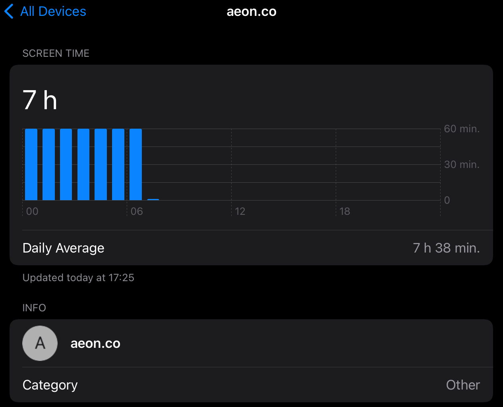

I listened to each song on Pitchfork’s 100 Best Songs of 2021. . Although I downloaded a dozen or so songs, the vast majority of them didn’t appeal. Hopefully I’m not just getting old! 🎵
Improving my running with a gait analysis 🏃♂️
In preparation for Tremblant, I had my gait analyzed to find out if there are any issues with my running form. I found the process surprisingly thorough and interesting.
Katie (a registered physiotherapist) started out with a general discussion about my running history and goals. Then she filmed me running on a treadmill for about five minutes. We set a fast pace, since that quickly exposes any sloppiness in my running. I have to admit that watching myself running in slow motion was a bit awkward, though my form wasn’t as bad as I’d imagined.
Katie identified two issues: too much side to side rotation of my arms and a pronounced dip on my left side.
The arms are pretty easy. I just need to be more mindful of how they’re swinging and focus on moving them forwards and backwards, rather than side to side. This better directs my energy towards forward movement.
The dip is more complicated. Katie tried a bunch of different strength tests to isolate the muscle and we found that my left glute was much stronger than my right, which is odd, given I’m right handed. To distinguish between strength and muscle activation, Katie tried an acupuncture needle in my right hip. Remarkably, just a couple of minutes later, I was then much stronger on the right side. We did another round on the treadmill and my hips were now nicely aligned.
This suggested to Katie that my strength is fine, rather it’s insufficient muscle activation that is leading to the dip. She prescribed some warmup exercises to help. I know that I have a deficient warm up routine (as in there isn’t one, I just start running), so this is a good excuse to improve this component of my running routine.
As someone that generally just puts on running shoes and gets going, I’m glad I put in some time to understand my gait and identify some opportunities for improvement. I hope to be running for many more years and this should help minimize injuries.
I really like the idea of Screen Time and want to use it to manage my behaviour. And then I get something like this: apparently I stared at aeon.co (a great website) every minute from midnight to 6. I’m certain I was actually sound asleep then

After likely too much deliberation, I’ve registered for the Ironman 70.3 in Tremblant. Although “only” half an Ironman, it is still daunting enough to make me both nervous and excited (nervouscited, as my daughter often says) 🏊♂️ 🚴♂️ 🏃♂️
A good, long article on the James Webb Space Telescope that includes both details on the telescope and explains the science that makes it so exciting
Classic, having finally settled on Apple Notes, Craft has announced an eXtensions Developer Platform that is tempting me back. I’m glad Micro.blog is here as a support group for those of us that can’t stop fiddling with our tools 😀
Bowl of Heaven by Gregory Benford and Larry Niven is quite expansive in scope and imagination. A fun, easy read with some big ideas 📚


2021 iPhone Home Screens
My iPhone Home Screen continues to evolve and, now that we have Focus Modes, I’ve made some further adjustments.

From left to right, I’m using three different Focus Modes: Personal, Work, and Fitness. The first two are entirely widget focused, while Fitness has a few app icons as well.
The dock has Drafts which, as the tagline says, is where text starts. This hasn’t changed from my earlier setups. The second icon launches a front-end Shortcut for Apple Notes. As I described in my Apple Note overview, this is an idea that I’ve borrowed from Matthew Cassinelli and providers a flexible interface to the app.
Personal
From top left, my Personal Home Screen starts with a stack of Reminders filtered to my Personal list, Fantastical, and Streaks. This is essentially my “what should I be doing” stack.
Next is a stack with Photos and Siri Suggestions. The Photos widget consistently surfaces delightful photos, so I’ve given it a prominent spot. While the usefulness of Siri Suggestions are variable, I like the idea of my phone learning my habits and showing me relevant actions.
Through the middle, I have Weather on the left and the right is a stack of Apple Music and Overcast, which are my options for listening to something.
On the bottom left is a stack of Timery and Screen Time. These are there to keep me mindful of what I’m actually doing, especially on weekends. The Timery widget shows me a summary view of my projects. So, in this screenshot I’ve put in an hour on exercise, another hour on reading, and 20 minutes with some household chores. The Screen Time widget helps keep me honest about how much I’m using my devices, especially on weekends when I really should be looking at something besides a screen.
And on the bottom right is a stack of Day One and Notes, filtered to my Personal folder. Day One is there for capturing family events and reflections. While the Notes folder often has some useful reference material for our weekend activities.
Work
Curiously, my Work Home Screen is less complicated than my Personal one.
The top is a stack with Fantastical and Mail’s VIP widget. I’m not entirely convinced that the Mail widget is useful here. I almost always just want Fantastical reminding me of my next meeting or task.
Given the more variable number of tasks I tend to be doing while in work mode, I’ve got the Siri Suggestions widget in the middle. I took this screenshot on the weekend, so it isn’t indicative of what it usually shows, which tends to be one of the Shortcuts that I’m often launching to manage my workday.
Intentionally mirroring my Personal HomeScreen, the bottom row is a stack with two Timery widgets and a stack of two Notes widgets, one filtered to my Work folder and the other to my Meetings folder.
Fitness
The Fitness Home Screen is mostly an experiment. I spend the vast majority of my time in one of the other two Focus Modes, so I’m not yet convinced that I need any other Home Screens.
Regardless, this one has the Fitness widget at the top for seemingly obvious reasons.
The middle row has the Training Today widget to help keep me honest about rest. And then a cluster of icons on the right. The only one that is non-standard is “Workout mix”, which is just a Shortcut to launch a good playlist in Apple Music.
The bottom row has Carrot Weather to make sure I’m not about to get rained on when heading out for a run. I’ve also added the Batteries widget there to make sure my Apple Watch and AirPods are ready for action.
I’ve set up Personal Automations to automatically switch between my Personal and Work Home Screens at 8:45 and 17:30. I’ve found these good reminders to keep my work activities within reasonable office hours. Starting a Workout automatically switches to the Fitness Home Screen.
There’s almost endless scope for fiddling with these. So, by writing them here, I’m adding some accountability to just stop that and use them for a while before making further changes.
I really enjoyed season 1 of Foundation. Definitely a departure from the books, which was totally necessary. The companion podcast was interesting too 📺

The Strong Songs Year Three, In Review episode is a good summary of a fun season 🎧🎶
I picked up Artifact by Gregory Benford at my local used bookstore on a whim. I’m glad I did. It is a fun mix of archaeology, theoretical physics, and espionage 📚
Integrating Micro.blog Highlights with Apple Notes 📒
Now that I’m committed to using Apple Notes, I wanted a way to download my Micro.blog Highlights into Notes.
I like using Highlights as a read-it-later service and the highlighting feature is great for quickly blogging excerpts from articles. For longer-term storage, though, and integration with the rest of my notes, it is much better to have the content of the highlights stored within Notes.
So, here’s a Shortcut Micro.blog Highlights to Notes that does exactly this. The Shortcut checks first to see if the highlight is already captured in a note to prevent duplication. It also checks to see if there’s already a note for the webpage, just with a different highlight, and appends the highlight to that note, instead of creating a new one.
At least, that’s the idea. I’ve found these checks very unreliable. Sometimes the Shortcut finds the match and appends, and sometimes it doesn’t and creates a new one. Part of the problem seems to be that if there’s any punctuation in the content, the Notes filter fails. For example, searching for “We begin with an obstinate fact:” fails, then remove the “:” and the search work fine. I can use regular expressions to remove all punctuation, but then my notes are all mangled.
After fiddling around with this for a while, I’m just going to move along and assume it is a bug in the Notes actions for Shortcuts. Perhaps not a fair conclusion. The worst case is that I get one note per highlight, rather than just one note per article, and sporadically a note is duplicated. This isn’t so bad, and debugging Shortcuts can be a nuisance. Given this, the Shortcut is likely better used in an empty Notes folder, that is, delete all the previously downloaded Highlights first.
I’m enjoying the redesigned Waking Up app. The new design is much cleaner and easier to use. The original design was interesting when the app debuted. A couple of years later, with all the additional content, it had become rather complicated to navigate. After 941 “mindful days”, I’m still finding the app really helpful.
Okay, these automated email signatures are getting silly. I just got a meeting invite with 6,000 characters in 500 words. None of which were actually written by a person. It included:
- A note that anyone attending an in-person meeting needs to be vaccinated
- A warning not to open any attachments from unknown senders
- A confidentiality warning with direction to delete the email and all attachments if I’m not the intended recipient
- Lots of details about how to join the Teams meeting
Lessons from using Apple Notes for three months
Back in September, I committed to using Apple Notes for three months. The goal was to focus on my use cases for writing, rather than fiddling with new apps continuously.
Here’s what I’ve identified so far. Many of the approaches and features that I’m using in these use cases are readily available in other apps and often Notes is not the most efficient choice. Now that I’ve documented these use cases, I’d like to use them to assess alternative apps.
Meeting notes
Thanks to Timery, I know that 60% of my working time is spent in meeting. So many meetings!
For each one, I create a note to capture ideas, useful information, and tasks. I’ve automated this with a couple of Shortcuts. The one I use the most is “Start My Next Meeting”. This presents me with a list of upcoming meetings. I choose from the list and it creates a meeting note, starts a Timery timer, and opens the link to start the video call (typically Teams). The meeting note has the name of the meeting as the title, adds tags for #meeting and the Timery project, adds the date and time of the meeting, a list of attendees, and any notes from the calendar event. From this structure, I can then add notes throughout the meeting and extract any tasks into Reminders later.
I used Agenda for these sorts of notes before, which was powerful.
Daily summaries
Occasionally, I find myself at the end of a week with no clear sense of what I actually accomplished. To help with this, for the past year I’ve been recording the top three things I’ve done in a day into Day One (the 5 Minute PM template has been great for this).
To augment this, I’ve been using another Shortcut to create a Daily Work Report. This makes a note of the meetings I attended, tasks I completed, and tasks I created. These all get saved to a Daily Notes folder. I then use the day’s work report to pull out the highlights for Day One. There’s some redundancy here, though I find the process of choosing just three things for Day One is helpful.
Overall, I think that Day One is a better app for this use case.
Project notes
For each of my projects, I create a project note that states the purpose or objective of the project, key stakeholders, and timelines. Then I accumulate relevant notes and documents while making progress on the project. Creating these are also done via a simple Shortcut. I’ve experimented with using checklists for tasks in these notes, but find it isn’t as effective as my approach with MindNode and Reminders.
Once I finish a project, the associated note gets cleaned up and moved to an Archive folder to keep it out of the way.
Research
This is a rather broad category and, unlike the previous use cases, is for both work and personal notes. Much of this is capturing facts, quotes, and sources. If it is project specific, they go to the project note. Some are more generic and are kept as a standalone note. All of them get tags to help provide some structure. This is where Apple Notes ability to accept almost anything from the share sheet is powerful.
The new Quick Notes feature has been interesting for research. The ability to quickly highlight and then resurrect content on websites is great. I find actually working with the quick notes is pretty clumsy though. They have to stay in the Quick Notes folder and choosing which one to send content to can be tricky. I think there’s some great potential here and will keep experimenting.
For any webpages that I want to archive, I use another Shortcut that creates a plain-text note of the webpage along with some metadata and then adds the link to Pinboard. This has been surprisingly useful for recipes, when all I really want are the ingredients and steps, rather than the long history of the recipe’s development.
Other nice features
In addition to these use cases, there are a few nice features of Apple Notes that are worth mentioning.
- As should be apparent from above, creating useful Shortcuts for Apple Notes is straightforward. In some sense, it is the Shortcuts that I’m finding really useful. Apple Notes is just the final destination for the content.
- I’ve set up widgets by focus mode so that the most recent notes are shown on my Home Screen in the right context. These are restricted to a particular folder and sorted by date modified.
- The formatting options are comprehensive, including table support.
- I think I like the feature where checking off tasks moves them to the bottom of the list. Most of the time, this is what I want.
- The iCloud web app is convenient for using notes on my Windows work PC. Unfortunately, I’ve found the syncing to be rather unreliable here, where notes just don’t show up in the web app sometimes.
- I don’t share notes as often as I expected. When I do, it works really well.
- Not really specific to Apple Notes, but I stole an idea from Matthew Cassinelli to aggregate all of these Notes Shortcuts into one super Shortcut that creates a list of Shortcuts to choose from.
Challenges
There are a few things that don’t work as well as they should:
- Searching is too limited. In particular, you can’t narrow searches to particular folders. Most of the time I either only want to search my meeting notes or not include them. I had to set up a Shortcut that takes a search term as an input and then asks me to specify which folder to search. This should be built into the app’s search field.
- Linking among notes isn’t really supported. You can sort of do this with url searches for note titles. Pretty clunky though.
- Given how much I use Shortcuts for Apple Notes, it is frustrating how little you can do when creating a note. In particular, you can’t style text or add tags. Every time I use Shortcuts to create a note, the first thing I have to do is apply title and heading styles and convert any words prefixed with a # into an actual tag.
Other use cases
I’ve found a few use cases that don’t yet fit in with Apple Notes. I’m using Drafts for all of these:
- Blog posts
- Drafting long emails
- Capturing and processing transitory texts, which Drafts is really optimized for
Restricting myself to Apple Notes was a helpful trick for crystallizing my use cases. Now that I’m three months in, I think I’ll stick with Apple Notes for a while longer. I’ve built up a good ecosystem of Shortcuts for working with the app and, of course, now have lots of content in the app.
Inner Symphonies by Hanna Rani & Dobrawa Czocher has been really helpful this week 🎵
A fun discussion on the Mindscape podcast with Christopher Mims about the interconnected industrial ecology
I enjoyed Revenant Gun: Machineries of Empire by Yoon Ha Lee. A fitting end to the trilogy📚
I’m standardizing on using Micro.blog Bookmarks as my read it later service. To make this easier, I’ve created a Shortcut for sending links from Safari to Bookmarks. Now I can keep the Micro.blog app set to posting, instead of having to switch back and forth in settings. You’ll need an app token as part of the setup for the Shortcut.
On the Internet, We’re Always Famous in the New Yorker is well worth a read
The most radical change to our shared social lives isn’t who gets to speak, it’s what we can hear. True, everyone has access to their own little megaphone, and there is endless debate about whether that’s good or bad, but the vast majority of people aren’t reaching a huge audience. And yet at any single moment just about anyone with a smartphone has the ability to surveil millions of people across the globe.


Day 31: Home 📷

When Star Trek: Voyager originally aired, I was too distracted with grad school to pay much attention to it. Many years later, thanks to @jean’s comprehensive Viewer’s Guide I’ve finished the series. The show is very good (certainly better than the reputation it seems to have), especially when you follow @jean’s advice and skip the bad episodes. Many great characters, interesting plots, and ethical conundrums with a good episodic approach, rather than the long narrative arcs of DS9 and Discovery 🖖
MacStories’ Comprehensive Guide to 250+ of Apple Music’s New Mood and Activity Playlists is a great resource for a rather opaque feature. I’m amused by the specificity of a “checking email” playlist, though I do spend too much time doing exactly this activity
Day 30: Red 📷

Switching to iCloud+ Custom Email Domain 📧
I’ve switched my personal email over to Apple’s custom email domain with iCloud Mail. A roughly ranked list of reasons for the switch is:
- One less account to worry about. Not that it was a big deal, but now I don’t need to know the various setup details for my personal email. Once I’ve logged into my iCloud account, my email is ready.
- I appreciate Apple’s commitment to privacy and trust that they’ll apply this commitment to my email account.
- I’m already paying for iCloud+ and, so, might as well use this feature and save some money by not paying for separate email hosting.
- I’m actively using Reminders and Notes in iCloud.com and the Mail interface there is decent, certainly better than the rudimentary one offered by my previous email host.
Setup was straightforward with clear instructions. Having said that, the only issue I had was that initiating the setup process simply didn’t work for a few weeks. I tried a couple of times a week and each time I just got a generic error. Then, for no apparent reason, one day it worked. I suspect this was just an issue with rolling out a new service.
I should point out that my email needs are very basic for this personal account. I don’t need many automated rules, tagging, or filtering. So, iCloud Mail is fine. I wouldn’t switch over my work account (even if corporate IT would allow it). I get something like 100x the email at work and need more sophisticated tools.
Besides the initial trouble with initiating the setup, everything has been working well for the past week. I’m well aware of Apple’s well-earned reputation for challenges with internet services and will be staying vigilant for at least the next few weeks. One of the great benefits of having my own domain name is the ease with which I can switch mail hosts.

Day 29: Cycle 📷

This new song from Jack White will wake you up 🎸🥁
Remarkable, scientists have measured time dilation in a cloud of atoms and found that the time experienced by the atoms at the top of the cloud is 0.00000000000000001% shorter than the time experienced by those at the bottom. Such precision!
Day 28: Underneath 📷

Day 27: Chaos of a toddler. This is how I found him one morning 📷

Day 26: Bliss for me is the family relaxing on a dock, reading books, during summer vacations 📷

Day 25: Gravity 📷

Day 24: So many connections. I have to admit that I’m surprised it actually works 📷

Although I’m generally aligned with longtermism, this essay in Aeon points out important (if slightly hyperbolic) tradeoffs that have to be considered. As with so many things, we need to find ways to fix today’s problems while also keeping an eye on the future


Day 23: Lots of meaning to discern when playing Codenames 📷

Murderbot is one of my favourite characters from the past couple of years. So, this origin story from Martha Wells was fun to read
Day 22: Having a rest with friends 📷

Day 21: An impressive space at the foot of a mountain 📷

Day 20: I’m looking forward to resuming winter sports 📷

Day 19: Mirror in a lake 📷


Day 18: Lucy is finished for the day 📷

Day 17: No need for a compass when hiking in the city, just follow the sound of traffic 📷

Day 16: Rotation 📷

Day 15: Ethereal 📷

Day 14: My favourite wheels as a kid 📷

Day 13: Lucy is a couch animal 📷

Day 12: Rock legends 📷

Day 11: Hygge 📷

The cansim R package is really helpful 📦 📊
Statistics Canada has a wealth of data that are essential for good public policy. Often a good third of my analytical scripts are devoted to accessing and processing data from the Statistics Canada website, which always seems like a waste of effort and good opportunity for making silly errors. So, I was keen to test out the cansimpackage for R to see how it might help. The quick answer is “very much”.
The documentation for the cansim package is thorough and doesn’t need to be repeated here. I thought it might be useful to illustrate how helpful the package can be by refactoring some earlier work that explored consumer price inflation.
These scripts always start off with downloading and extracting the relevant data file:
cpi_url <- "https://www150.statcan.gc.ca/n1/tbl/csv/18100004-eng.zip" # (1)
if(file.exists("18100004-eng.zip")) { # (2)
# Already downloaded
} else {
download.file(cpi_url,
destfile = "18100004-eng.zip",
quiet = TRUE)
unzip("18100004-eng.zip") # (3)
}
cpi <- readr::read_csv("18100004.csv") # (4)
A few things to note here:
- You need to know the url for the data. Sometimes the logic is clear and you can guess, but often that doesn’t work and you need to spelunk through the Stats Can website
- To avoid downloading the file every time I run the script, there’s a test to see if the file already exists
- This approach yields lots of files and folders that you need to manage, including making sure they’re ignored by version control
- Using the great
readrpackage imports the final csv file
With cansim all I need to know is the data series number:
cansim_table <- "18-10-0004"
cpi <- cansim::get_cansim(cansim_table)
get_cansimdownloads the right file to a temporary directory, extracts the data, and imports it as a tidyverse-compatible data frame.
The get_cansim function has some other nice features. It automatically creates a Date column with the right type, inferred from the standard REF_DATE column. And, it also creates a val_norm column that intelligently converts the VALUE column. For example, converting percentage or thousand-dollar values into standard formats.
The cansim package is a great example of a really helpful utility package that allows me to focus on analysis, rather than fiddling around with data. Definitely worth checking out if you deal with data from Statistics Canada.
Day 10: The bridges of my morning run 📷 🏃♂️


Day 9: Swinging through the trees is safe with this gear on 📷

Day 8: A benefit of a twilight run is that the sidewalks are clear 📷

Day 7: Spice 📷

Day 6: Street 📷

Day 5: The toys are watching, always 📷

Although A Desolation Called Peace by Arkady Martine isn’t as remarkable as A Memory Called Empire, I still really enjoyed it. Some of the enjoyment was momentum from the first book. I also liked the mystery of the aliens and the exploration of shared memories and awareness 📚
Day 4: Sharp dressed boy 📷

Day 3: Majority votes are rare in Canada these days 📷

Added this to my “brains are fascinating” note: How memories persist where bodies, and even brains, do not
It seems that a 44-year-old French man had gone to hospital complaining of a mild weakness in his left leg. Doctors learned that the patient ‘had a shunt inserted into his head to drain away hydrocephalus – water on the brain – as an infant. The shunt was removed when he was 14.’ When they scanned his brain, they found a huge fluid-filled chamber occupying most of the space in his skull, leaving little more than a thin sheet of actual brain tissue. The patient, a married father of two children, worked as a civil servant apparently leading a normal life, despite having a cranium filled with spinal fluid and very little brain tissue.
Day 2: Lightning up the Dark 📷

Day 1: Touch 📷

Fathoms by Rebecca Giggs is about so much more than whales. Beautifully written, Giggs uses whales to talk through society, culture, environmentalism, evolution, and history, along with lots of good natural history on whales📚
We had fun solving CluedUpp Games The Ripper mystery with these serious looking investigators

I really enjoyed the Foundation books as a kid and thought it might be fun to read them along with the new Apple TV show. I know they’ll diverge and look forward to seeing how they approach the original content

Two things to note: 1) Clearly the totalling is off and 2) How can the app for my robot vacuum be in the top 10?

Federal Election Day here in Canada 🗳 🇨🇦. As a public servant, I have no public opinion about the parties. I do think, though, that we have a civic obligation to vote and, so, encourage any Canadians out there to make an informed choice and cast your ballot.
We celebrated 21 wonderful years of marriage with an extended weekend at the Sir Sam’s Inn near Haliburton.
We had gorgeous weather and lots of relaxation.


To burn off some of the delicious food, we hiked up to the top of the ski hill through a twisted, 5K path to get a great view over the lake.


Along with some canoeing on a quiet Eagle Lake.


More importantly, we had a chance to reconnect, celebrate our adventures together, and plan for what’s next.


A good reminder to experiment with my coffee setup: How to enjoy coffee | Psyche Guides

Currently reading: Fathoms: the world in the whale by 📚

Surprising no one here, I’ve realized that I spend far more time thinking about systems for my notes than in actually taking notes.
To add some public accountability, I’m declaring that for the next 3 months I’m only using Apple Notes. This will help me develop a good note taking habit, while also identifying my use cases for later optimization.
Although I’ve been thinking about this for a while, the recent Tools for Thought interview with @AndySylvester and @Chrisaldrich really crystalized the idea.


I certainly wasn’t expecting Nils Frahm’s next album to be a dub record!

I’m enjoying Watch the Sound With Mark Ronson, a series on music production with episodes on topics like reverb, synthesizers, and sampling

Currently reading: A Desolation Called Peace (Teixcalaan, 2) by Arkady Martine 📚
I really enjoyed Salvation by Peter F. Hamilton (book 1 of the Salvation Sequence trilogy). A fun blend of sci-fi, detective novel, and alien invasion with a cliffhanger ending📚
A new game on the iPad: try to guess what term Photos is searching for in Spotlight. Here’s an example where I’m launching Overcast and Photos has used “ov” to find pictures of ovens. This has actually been a great way to uncover how much more sophisticated Photos has become.

My Micro Camp sticker has arrived and looks great! Thanks @burk!

Black Lab Brewery has some great beers, plus I enjoy the branding

Our epistemic crisis is essentially ethical and so are its solutions
Before you know it, people have starkly different views on the matter, and their views are based on perfectly solid research. The point here is not that we can’t know anything, it’s simply that the world is a complex place, and that the search for simplicity is very often what gets us into trouble. For scholars, the most important thing is to strive to present their work in a way that’s as objective as possible (accuracy), and to present a range of reasonable results wherever possible, giving the fullest possible picture (sincerity).

Fire Season: Field Notes from a Wilderness Lookout by Philip Connors is an interesting mix of reflections on solitude, the importance of conservation, and American history 📚
Although I only caught day 2 of Micro Camp 2021 live, I really enjoyed the talks. I’ll catch up on day one in a couple of days.
Currently reading: Fire Season: Field Notes from a Wilderness Lookout by Philip Connors 📚
Readiness To Train with the Training Today app 🏃♂️
I’m trying to sequence my workouts in a more systematic way to avoid overtraining. I’ve found Training Today really helpful in determining this Readiness To Train (RTT). The app uses data collected by my Apple Watch to provide a straightforward indicator of how ambitious I should be on any particular day.
As an example, here’s today’s evaluation:

This matches how I feel 🥴. So, today was a good day for some recuperative yoga.
Scrolling back to Thursday, everything looked much better and I put in a good HIIT session:

Of course, the whole point of doing this is to adjust my training to match how my body is recovering. I clearly didn’t do this on Friday. Rather than catch up on some sleep, I choose to do a moderate workout and my RTT stayed on the floor. Not great, considering I’d signed up for an intense One Academy Endure Challenge on Saturday. I managed to finish, which is the main goal, but it didn’t feel good.
Comparing my RTT for this week’s Endure Challenge with the last one shows how this indicator can be informative:

My RTT was much higher back then and I felt really good during the challenge. This gives me comfort that RTT is actually measuring something real and actionable.
The Apple Watch screenshots shown above are part of the free version of the Training Today app. The more detailed chart above is included in a one-time in-app purchase. This gets you details like this:

And a simple widget, shown below on my fitness home screen:

I really like the focussed simplicity of Training Today, along with the straightforward one-time purchase. My Apple Watch is collecting lots of data about me and I’m glad I can use it to better manage my fitness.
Excession by Iain M. Banks is a great read with a fun mix of space opera, humour, morality, and mystery 📚
A great video on the Standard Model of physics
Really well done and fascinating video on The Sounds of Space
Currently reading: Excession by Iain M. Banks 📚
The iPadOS save dialog for MS Office has become confusing. I can never figure out which of these “Documents” folder is my documents folder, rather than a colleague’s

Back in the office after a 13 month gap and spotted my first PPE vending machine on the commute. A sign of how things will be after COVID-19 🦠 😷

Mortal on Amazon Prime is good. A nice take on the Thor myth that doesn’t adopt the Marvel spectacle style (though that style is good fun)
A nice run along Taylor Creek 🏃♂️. Except for the hill up to Lumsden Ave near the end; that part was horrible


I’ve been using the iOS betas for just over a week. The new Focus feature is as useful as I’d hoped. Being able to change notifications and home screens by context is great. Especially for switching off from work
Currently reading: The Little Drummer Girl: A Novel by John le Carre 📚

Finished reading: Matter (Culture) by Iain M. Banks. This was a straightforwardly entertaining read 📚


This episode of the Mindscape podcast was a nice mix of my interests in math, politics, and voting theory
Finished reading: The Strategy Paradox: Why Committing to Success Leads to Failure (And What to do About It) by Michael E. Raynor 📚
Green Mars by Kim Stanley Robinson is a good second book in the Mars trilogy. So much great detail, you really get a strong sense of Mars as a place that is distinct from Earth 📚
I’ve listened to a few Spatial Audio songs on Apple Music and I’m impressed! If you listen to a familiar song, you can really notice the difference. Lots of space and previously unnoticed details in these new mixes 🎧🎶
Switching from Agenda to Craft, for now 📅🗒
In my corner of the internet, there’s a well trodden, twisted path of searching for the one true notes app. I’ve reached a fork in the path between Agenda and Craft. As I wrote earlier, I’ve been using Agenda for a while now and its date-based approach really suits my meeting-dominated work. Now, though, Craft has added calendar integration and I’m testing it out.
There are several things I really like about Craft, relative to Agenda:
- Document syncing is far more reliable. This isn’t entirely Agenda’s fault. I’m restricted by corporate policy from using iCloud Documents, so have been using Dropbox sync for Agenda. I often have to wait an indeterminate, though long, time before documents sync across my devices. Craft sync has been instantaneous and very reliable.
- Having access to my documents from a web browser is great. I’ll be back to working from the office on a Windows laptop soon and won’t have access to my iPad. So, web access will be important.
- Performance is much better on Craft. Agenda often freezes in the middle of typing and suffers from random crashes. This could very well be something about my particular setup, though it doesn’t happen in any other apps.
On the downside, I do miss Agenda’s simplicity. Craft has lots of ways to organize notes (such as cards and subpages). Of course, you can mostly ignore this, but I like Agenda’s well-thought-through approach that didn’t require much deliberation about where to put things.
Of course, having just made this switch, Apple announced Quick Notes and I may well be back on Apple Notes in a few months.
The new Focus feature in iOS 15 looks promising. I already hide and show home screens based on context and this looks like it will help make this even more effective. Lots to unpack from WWDC


Sleep Evolved Before Brains. Hydras Are Living Proof. | Quanta Magazine
It appears that simple creatures — including, now, the brainless hydra — can sleep. And the intriguing implication of that finding is that sleep’s original role, buried billions of years back in life’s history, may have been very different from the standard human conception of it. If sleep does not require a brain, then it may be a profoundly broader phenomenon than we supposed.

Andrew Potter: My fellow Gen Xers don’t appreciate our great gift: we were ignored - The Line
In retrospect, it is obvious that the Gen X obsession with authenticity was anxiety caused by the growing rumblings of a culture in transition. The old technological ecosystem that fuelled the counterculture was gone, but the new web-enabled environment that made authenticity irrelevant hadn’t quite yet arrived. Gen X was the last generation to possess genuine subcultures that were able to remain somewhat unmolested by the digital meat grinder.
Sounds right to me
A good “in the zone” song: Persona


Michael Geist is doing excellent work on Bill C-10:
There are at least three points emphasizing. First, no other country in the world uses broadcast regulation in this way, making Canada a true global outlier. Second, there is no evidence of a discoverability problem for user generated content. Third, the issue of excluding YouTube from the scope of the bill is open to considerable debate and was not even raised by CIMA in its written submission to the committee.
Debating Bill C-10 at the Canadian Heritage Committee, Part One: My Opening Statement
Great weather for a short run 🏃♂️

An interesting observation from my coach today:
We must stop searching for progress through punishment
Why modern Buddhists should take reincarnation seriously | Aeon Essays:
Thinking about reincarnation today is, first of all, a reminder of the complexity of Buddhism, and the fact that individual practices can’t be neatly separated from broader institutional histories. Any change in our personal lives is inseparable from change in the world around us. Second, reincarnation offers a way of thinking about the present as connected to the deep past and to any potential futures as well. We needn’t think of the specifics of the reincarnation doctrine to realise that we’re all the inheritors of a past that we didn’t create and the bequeathers of a future we won’t live to see. Third, this temporal relation is also an ethical one, because it suggests that we’re the products of other lives and the creators of other futures, and thus share a global and temporal interdependence. And fourth, it follows that part of our task as humans is to be aware of what we might accidentally replicate from our past and thus unknowingly recreate in the future.
Assuming this is true, great news that Ontario’s summer camps for kids will be allowed to open again. My kids really need this (their parents would benefit too!)
I’ve found my new power up song 🔥 🏃♂️ 🎵


Clever:
Scientific efforts to shed light on the prehistory of clothes have received an unexpected boost from another line of research, the study of clothing lice, or body lice. These blood-sucking insects make their home mainly on clothes and they evolved from head lice when people began to use clothes on a regular basis. Research teams in Germany and the United States analysed the genomes of head and clothing lice to estimate when the clothing parasites split from the head ones.
How clothing and climate change kickstarted agriculture | Aeon Essays
Currently reading: Green Mars by Kim Stanley Robinson 📚

An excellent For All Mankind season finale. I’m looking forward to season 3 and further divergence from our timeline
Well S2E9 of For All Mankind certainly ended on a cliff hanger! How are they going to wrap all this up in just one last episode? 📺 🚀
Math Without Numbers by Milo Beckman takes a conversational approach to math, saying as much about how mathematicians think as it does about the math. Removing numbers helps focus on the concepts and the delightful illustrations are just whimsical enough to match the prose📚
There are some great observations about data in Why the Pandemic Experts Failed that apply in any context.
I won’t spoil the list, other than to say that I strongly agree with the first one: All data are created; data never simply exist. We rarely put enough thought or effort into planning how data will be generated, and then have to make up for this in the modelling phase.
Our models are always dependent on the quality of data we put into them. And, yet, we often spend much more time refining and testing our models than we do with our input data and the production process that generates them.
Life Is About What We Can Do For Each Other - RyanHoliday.net
All of this is a way of dodging the reality of the choice in front of us: Can you subjugate your own interests—if only temporarily—for the sake of someone else? Countless someone else’s. Most of whom you will never know or even meet. Can you serve them? Can you sacrifice for any of them? Can you hear what they’re saying? Can you care?


Currently reading: Limitless by Jim Kwik 📚
Thanks @jean! Stickers arrived

Currently reading: Stillness Is the Key by Ryan Holiday 📚
Humble Pi by Matt Parker is a very entertaining book about math errors. His irreverent personality really comes through and the stories make the important point about how essential math is to our everyday lives. 📚


Currently reading: Humble Pi by Matt Parker 📚
I’ve enjoyed listening to one of David Whyte’s poems each night before bed in the Waking Up Contemplative Action track. A good way to clear out my head
The Light of All That Falls by James Islington is a great end to The Licanius Trilogy. I was in the mood for an immersive fantasy series and these delivered, each book weighing in at close to a thousand pages. Interesting mix of fantasy, politics, time travel & free will 📚
Lucy gave up before we even started our One Academy Everest class


Currently reading: The Light of All That Falls by James Islington 📚
The long way to a small, angry planet by Becky Chambers is great. I really enjoyed the characters and the sense of family on the Wayfarer. Definitely a nice change of pace from some more typical hard sci-fi stories that are more focused on the physics📚
Frustrating how everything goes haywire when updating AppleID passwords. HomePods become unresponsive, messages can’t be delivered, and other subtle errors arise. All this and it isn’t clear where you need to sign in again (having already done the obvious in AppleID settings)


Fantastic to have season 2 of For All Mankind out. I really enjoyed season 1 and this new season looks promising
Currently reading: The long way to a small, angry planet by Becky Chambers 📚
Super exciting that Perseverance landed safely on Mars. We need more of this kind of good news and human achievement.
Seven and a Half Lessons about the Brain by Lisa Feldman Barrett is a charming, short book about how our brains work and our misconceptions about them 📚
Currently reading: Seven and a Half Lessons about the Brain by Lisa Feldman Barrett 📚
Qawa imperial stout with coffee and chocolate from Bandit Brewery. A good beer for a frozen night

If you’re interested in how algorithms are affecting us, Hello world by Hannah Fry is a great read. Rather than explain how algorithms work, Fry describes their opportunities and risks in different parts of society, such as health, justice, and art 📚
A fascinating, weird, and unsettling conversation about the differences between the right and left hemispheres of the brain on the Making Sense podcast
A great, long article on the use and development of COVID models. Plenty of lessons for modelling in general, especially when human behaviour is involved, which is relevant for transit planning
Gideon the Ninth by Tamsyn Muir is a very imaginative and entertaining mix of sci-fi and horror 📚

Star Trek: Picard is a flawed show that did a great thing — it gave TNG a proper ending
I agree with Matt Gurney’s take:
So Picard, really, is something I’d be judging on two entirely different levels: as a part of an existing Star Trek legacy, but also as a new addition to it. It’s a new show, and must be judged on its own merits, but it’s also a direct continuation of TNG, and must be judged on that basis, as well.
Blueprint by Nicholas Christakis is an interesting book about universal feature of our societies (the social suite) and how they are based on genetics, emergent properties, and complex network effects. The book has lots of interesting examples and makes clear connections between human societies and attributes of other animals.📚
Perhaps nothing @help can do about this, but figured worth asking. Bookmarks aren’t extracting article titles for Quanta Magazine


The addition of table support to Agenda is very welcome.
Currently reading: Gideon the Ninth by Tamsyn Muir 📚
Delightful when text aligns across lines, yet also frustrating when the alignment is so slightly off

Choosing a podcast player 🤔🎧
There’s been a fair bit of discussion over on Micro.blog about podcast players recently. I’ve switched among Overcast, Castro, and Apple Podcasts players over the years and, mostly to help myself think it through (again), here are my thoughts.
For me, there are three main criteria: audio quality, episode management, and OS integration. Though, I completely understand that others may have different criteria.
Like most podcast listeners, I listen at high speed, usually around 1.5x, which can distort the audio. Apple Podcasts player is definitely the worst for this criterion. For me, Overcast’s smart speed and voice boost features give it the edge over Castro, in terms of audio quality at increased speeds.
Castro is definitely the player of choice if you subscribe to more podcasts than you can listen to. The queue management features in Castro are very good. You can replicate some of this with Overcast, but that isn’t one of the app’s main features. Apple Podcasts player doesn’t offer much in this regard. Despite listing this as a criterion, I’ve actually elevated to subscription, rather than episode, triage. I carefully curate my list of podcasts and don’t add new ones very often. Given this, Overcast’s approach is more than sufficient for me.
OS integration is a bit unfair, as Apple has given themselves some nice features that independent app developers aren’t able to use. Nonetheless, Apple does a good job of intermixing podcasts and music into their Siri-powered widgets in iOS and the HomePods. With my reinforced interest in less screen time and use of home screen widgets, Apple Podcasts wins out here. This may change once Overcast releases a widget.
As just one example of the integration, here’s what happens when I plug headphones into my iPhone: a selection of music playlists and podcasts appears. I use this feature a lot.

After all that, I’m using Apple Podcasts for now, mostly to take advantage of the OS integrations while I’m experimenting with a widget-based iPhone. I’m quite certain this is short term and that I’ll return to Overcast soon. In addition to the better audio quality, Overcast also has some nice refinements, like per subscription speed settings (I like to play music podcasts at 1x) and skip-forward amounts (Quirks and Quarks, for example, always has a two-minute preamble that I skip). These small refinements are typically what distinguishes the stock Apple apps from good indie apps.
I’m glad there are so many solid apps for podcast listening. Whatever your preferences, there’s sure to be one for you.
Season 3 of Star Trek: Discovery was entertaining. Despite some awkward plots that were perhaps necessary to get to the right ending, they really did well with character moments. My only disappointment was the diminishment of Saru in the last few episodes. The sudden conflict he felt about choosing between Kaminar and the Federation seemed really out of character to me. Despite that, I like where they ended and look forward to S4 🖖
I absolutely agree that Facebook has been a major contributor to the mayhem we see in politics these days. I also have significant concerns with how they harvest and use data. All that said, I was able to quickly solve a problem by posting a question to my neighbourhood’s Facebook group. While I have great hopes for the IndieWeb, it is really hard to compete with that kind of reach and ease of use.
Transforming boxes of components into a gaming PC 📦🕹
Like any 12-year old, my son is pretty keen on gaming. As an all Apple house, his options were a bit constrained. So, we decided to build a PC from components.
I’d last built a PC about 30 years ago, when I wasn’t much older than him. I remember thinking it was cool to be using a machine I’d built myself, plus as a parent it seemed like a good educational experience. I have to admit to being a bit nervous about the whole thing, as there was certainly a scenario in which we spent an entire weekend unsuccessfully trying to get a bunch of malfunctioning components to work.
After much deliberation and analysis, we ordered our parts from Newegg and everything arrived within a couple of weeks.

Following along with this great step-by-step video, we assembled the components.


Given my initial anxiety, I was very relieved when we saw this screen. The BIOS booted up and showed that the RAM, SSD, and other components were all properly connected.

With that done, we then got to what ended up being the complicated part. Evidently part of the point of a gaming PC is to have lots of fans and lights. None of this was true when I was a kid and there were a daunting number of wires required to power the lights and fans. Sorting this out actually took a fair bit of time. But, eventually success!

Then our last challenge, which I likely should have anticipated much sooner. We didn’t bother ordering a DVD drive, since everything is online these days. But, our Windows installation showed up as a DVD and we couldn’t create any Windows install media on our Apple devices. Fortunately, we checked in with a slightly older kid down the street and he provided us with a USB drive with the right software. With that challenge solved, we finished the project!
Not counting choosing the components online, the whole project took about 5 hours from opening the boxes to booting into Windows for the first time. I’d definitely recommend it to anyone that’s tempted and technically inclined. My son is quite excited to be using a computer that he built from parts.


A nice tribute to Neil Peart in Rolling Stone Magazine 🥁
I appreciate Sam Harris’ call for competence and compassion in his most recent podcast episode
Having spent countless hours in grad school arguing about frequentist and Bayesian statistics, I appreciate Richard D. Morey’s take on the importance of p values:
The mistake many statistical commentators make is to interpret the p value as attempt at a quantification of evidence, or as a posterior probability. It is none of these things, nor is it meant to be. It should not even, really, be thought of as means to make an inference (although, it is in the most simplistic interpretation of the Neyman-Pearson paradigm). It is, instead, a means to critique a potential inference.
My experiment to avoid Twitter for a week has now grown to two weeks. I’m surprised by how much I don’t miss it. I thought that it was a good source of interesting news, tailored to my interests. So far though, I’m still finding good content to read with a renewed use of NetNewsWire and Apple News.
Scheduling random meetings with a Shortcut ⚙️🗓
Staying in touch with my team is important. So, I schedule a skip-level meeting with someone on the team each week. These informal conversations are great for getting to know everyone, finding out about new ideas, and learning about recent achievements.
Getting these organized across a couple of dozen people is logistically challenging and I’ve developed a Shortcut to automate most of the process.
Borrowing from Scotty Jackson, I have a base in AirTable with a record for each team member. I use this to store all sorts of useful information about everyone, including when we last had a skip-level meeting. The Shortcut uses this field to pull out team members that I haven’t met with in the past four months and then randomizes the list of names. Then it passes each name over to Fantastical while also incrementing the date by a week. The end result is a recurring set of weekly meetings, randomized across team members.
The hardest part of the Shortcut development was figuring out how to get the names in a random order. A big thank you to sylumer in the Automators forum for pointing out that the Files action can randomly sort any list, not just lists of files.
I’m not sharing the Shortcut here, since the implementation is very specific to my needs. Rather, I’m sharing some of the thinking behind the code, since I think that it demonstrates the general utility of something like Shortcuts for managing routine tasks with just a small amount of upfront effort.
Currently reading: Blueprint by Nicholas A. Christakis 📚
Of the 30 books that I read this year, A Memory Called Empire by Arkady Martine was my favourite fiction book. And, What is Real by Adam Becker was my favourite non-fiction one. 📚
Lost in Yesterday by Tame Impala was my most played song released in 2020
And Phoebe Bridgers was my favourite artist
Thanks to Federico Vittici’s Apple Music Wrapped shortcut for analyzing my music library.
I enjoyed season 1 of The Man in the High Castle. A suitably realistic alternative history with an intriguing mystery of the strange films. I’ve heard seasons 3 and 4 are disappointing, so I’ll likely stop at the end of season 2 📺
Currently reading: Ego is the enemy by Ryan Holiday 📚
20 Macs for 2020 was a fun series and, overall, I agree with the ranking.
Strictly for nostalgic reasons, I would have included the PowerBook G3. This was the first Mac I ever bought and I spent a lot of time with it in the first few years of grad school.
I ran the public beta of Mac OS X which was both incredibly slow and amazingly interesting. My recollection is that I only used AppleWorks and Audion. But, it led to a long interest in and use of open source software like R and LaTeX that continues to this day.
The Value of Everything by Mariana Mazzucato is an effective description of how our economy is constructed by decisions and assumptions over time. By defining value as the same as price, we confuse value creation and value extraction, which leads to many of the problems we see in today’s economic structures. Her proposals for change would help us achieve the world we’re striving for. 📚
Year of the Tangible
Inspired by Coretex, I’m declaring Tangible as my theme for 2021.
I’ve chosen this theme because I want to spend less time looking at a screen and more time with “tangible stuff”. I’m sure that this is a common sentiment and declaring this theme will keep me focused on improvements.
Since working from home with an iPad, I’m averaging about 9 hours a day with an iOS device. This isn’t just a vague estimate; Screen Time gives me to-the-minute tracking of every app I’m actively using.
A generic day is something like:
- Exercise via Zoom in the morning
- Meditate with Waking Up on the iPhone
- Read news on my iPad while having breakfast
- Back and forth between Teams (almost 3 hours a day!) and Outlook on the iPad throughout the work day
- Learning guitar on YouTube and reading books in the iPad in the evening
Throw in some Netflix, journaling in DayOne, social networking, and random YouTube videos and I’m spending an incredible amount of time looking at a screen.
I’m certainly not a Luddite! The ability of these rectangles of glass to take on so many functions and provide so much meaningful content is astounding. There’s just something unsettling about the dominant role they play.
So, a few things I plan to try:
- Although I’ll continue reading ebooks, since the convenience is so great, I’ll be rotating paper books into the queue regularly.
- I’ve lost my running outdoor routine. Getting that back will be a nice addition to the Zoom classes and add in some very much needed fresh air.
- As a family, we’ve been enjoying playing board games on weekends, just not routinely. Making sure we play at least one game a week will be good for all of us.
- My son is keen on electronics. We’re going to try assembling a gaming PC for him from components, as well as learn some basic electronics with a breadboard and Arduino.
- Our dog will be excited to get out for more regular walks with especially long ones on the weekend.
I’ll be adding much of this to Streaks, an app that I’ve found really helpful for building habits. I’ll also add a “tangible” tag to my time tracker to quantify the shift.
My hope is that I can find the right balance of screen time and tangible activities with intention.


Quite disconcerting that I don’t know how or when I cracked the screen on my Apple Watch. The top left half still works, so not completely broken 😢

I’m very happy that Tripping with Nils Frahm is released. Great music for working at home with headphones 🎧🎹
Currently reading: The Value of Everything by Mariana Mazzucato 📚
I’m catching up on 20 Macs for 2020 and just listened to the episode on the iMac G4. Brought back vivid memories of two intense months of finishing the writing of my thesis. I was sequestered in a small room with the lab’s iMac G4 and still remember how great it was to be able to move the screen around so easily. Super helpful when sitting at a desk typing for hours on end.
This video from Matt Parker on Excel is fantastic. Be sure to keep an eye on the chyron
MindNode is the best mind mapping app for iOS
Continuing my plan to update App Store reviews for my favourite apps, up next is MindNode.
MindNode is indispensable to my workflow. My main use for it is in tracking all of my projects and tasks, supported by MindNode’s Reminders integration. I can see all of my projects, grouped by areas of focus, simultaneously which is great for weekly reviews and for prioritizing my work.
I’ve also found it really helpful for sketching out project plans. I can get ideas out of my head easily with quick entry and then drag and drop nodes to explore connections. Seeing connections among items and rearranging them really brings out the critical elements.
MindNode’s design is fantastic and the app makes it really easy to apply styles across nodes. The relatively recent addition of tags has been great too. Overall, one of my most used apps.
I’m really looking forward to the live album Tripping with Nils Frahm being released soon. I’m impressed with how well he can translate his studio albums into a solo live show 🎵
Learning that Growl is retiring after 17 years really reinforces the notion that the legacy of a good project is so much more than just the code and application #mbnov
As the COVID lockdown continues, I miss being a pedestrian in the city. There’s nowhere to go! #mbnov
I like the approach that Sean Carroll describes in this episode about being a science advisor for a movie. Rather than telling the director that their time travel theory is wrong, you treat the screenplay as data and concoct a theory to fit. Much better for collaboration.
We need a better system for our masks. We start the week off with a nice, clean stack and then they disperse all over the house throughout the week. We spend much of Sunday tracking them down and cleaning them. Only to start all over again #mbnov
I really like the imagery of the idiom “on the horns of a dilemma”, especially since it emphasizes the point that both choices are undesirable #mbnov
Taking a few minutes to listen to A Place by Nils Frahm really helped adjust my motivation to get back to work on a frustrating project #mbnov

I never want to answer a call from someone I don’t know. So, I really like the “silence unknown callers” feature in iOS #mbnov
In looking for a good use of provision, I found this song by Kevin Morby. Listening through his catalogue and enjoying the mellow mood #mbnov 🎵 🎧
Currently reading: The obstacle is the way by Ryan Holiday 📚
DayOne continues to be an excellent way to capture my daily thoughts. Documenting each day’s achievements has really helped me keep momentum on projects #mbnov
I wanted to avoid using the word border in a political context and was reminded how much I enjoyed Borderline by Mishell Baker #mbnov 📚

Well, if you worried that AC/DC was going to fade away, they’re back with a new album that rocks out as much as any of their other albums #mbnov music.apple.com/ca/album/…
Feeling nostalgic, thanks to NPR Tiny Desk Concerts releasing this Yo La Tengo show from their archives
I’m fascinated that it’s possible to figure out how many regular polytopes there are and I have Milo Beckman to thank for putting together these great videos #mbnov


I really enjoyed To Be Taught If Fortunate by Becky Chambers. A little jewel of a space exploration story that really captures the spirit of scientific exploration 📚

Many good ideas on balancing uncertainty with fiscal rules in Navigating Uncertainty in Ontario’s Budget
What Is a Particle? in Quanta Magazine is a good overview of current answers to what seems like a simple question
Apple really wants you to know that it loves the Mac just how it is. Or perhaps more accurately, as embodied in its latest computers: just how it is, but a lot, lot faster.
This is good to see, though I wasn’t actually worried.

We had great fun Tree Top Trekking!


The view from the top of the trees was great, especially given the weather.


Rather than turn up the heat, I decided to wear a sweater. I likely won’t be able to get away with this much longer, as the temperature keeps going down. Winter is coming! #mbnov
Currently reading: To Be Taught, If Fortunate by Becky Chambers 📚
Says by Nils Frahm is both a great song and today’s #mbnov word of the day

Finished reading: Breath by James Nestor. A great book about the importance of breathing. Full of interesting stories that certainly convinced me to be more thoughtful about my breath. The end of the book also has a good summary of the main points with detailed methods. 📚
The latest news on a promising COVID-19 vaccine is great news. Especially for my elderly grandmother, who is very keen to get out of her apartment and see her friends again #mbnov


I often miss the days when I had to stoop down to pick up my kids for a hug. Though I’m very proud of the teenagers they have become #mbnov
Hexagons are the Bestagons is good fun
Yesterday’s #mbnov word “astonish” would have been a great one for today, given how near the US presidential election is today

“We follow this new type of leader through upheaval. Because we have confidence. Not in their map, but in their compass”
Amy C Edmondson, How to lead in a crisis
Currently reading: Breath by James Nestor 📚
Having just finished a collection of quick, urgent projects, I’m looking forward to some time to concentrate on the big picture #mbnov
A couple of episodes in and I’m enjoying Long Way Up on Apple TV+. Relying on electric vehicles really adds to the adventure


An impressive attempt to visualize the standard model of particle physics by Quanta Magazine
More quantum weirdness: tunnelling particles can exceed the speed of light

For my “A Day In The Life” photo, here’s a look out my window at a beautiful Fall day here in Toronto, Canada at noon


This agenda shortcut from Matthew Cassinelli is a useful way to start my day. I modified it to include flagged reminders and just have it appear as text, rather than be read aloud by Siri.
Data Governance Sponsor recruitment
I’m very excited to be recruiting for a Data Governance Sponsor to join my team and help enhance the use of good data analytics in our decisions at Metrolinx.
I’m looking for someone that enjoys telling compelling stories with data and has a passion for collaborating to build clean and reliable analytical processes. If you know someone that could fit (maybe you!), please pass along the job ad
Although waiting can be annoying, How to Wait Well makes some good points:
Waiting pulls us into the present unlike any other experience of time. In the waiting, we realise that this moment is meaningful as it exists, not as some step toward a future moment. Waiting is present tense, and its meanings are full of the potential to transform the ways in which we see the world. Each moment is its own experience and its own fulfilment.
If you’re at all curious about physics, I strongly recommend you consider watching Sean Carroll’s Biggest Ideas in the Universe. Well worth the investment of time to watch
I’m listening to The Jungle by Plants and Animals a lot this week 🎧🎵

I continue to enjoy these posts on A Collection of Unmitigated Pedantry. This one starts a new series on iron and steel production.
Using Shortcuts automation to automatically switch my watch faces has really helped enforce the work/personal transition. A simple, yet effective trick
Supporting my favourite apps with App Store reviews 🎖
I’ve been negligent in supporting some of my favourite apps on the App Store. In many cases, I reviewed the app a few years ago and then never refreshed my ratings. So, I’m making a new commitment to updating my reviews for apps by picking at least one each month to refresh.
First up is Fantastical. This one took a real hit when they switched to a subscription pricing model. I get the controversy with subscriptions in general. For me, Fantastical has earned a spot on my short list of apps that I support with an ongoing subscription.
And here’s my App Store review:
Fantastical is a great app and is definitely one of my top three most-used apps. Well worth the subscription price.
A few favourite features:
- Integration of events and tasks into the calendar view
- Access to event attachments
- Automatic link detection for Teams and Zoom meetings
Optimizing urban mobility by shifting from prediction to adaptation is a good example of how complexity theory can help solve practical problems
My current theme song: Everyday is exactly the same. Just the chorus though, some of the verses are pretty bleak!


We really enjoyed our time at Bass Lake Provincial Park. Fresh air, campfire pizza, and a hike along the lake were a great escape 🏕


The widgets in the new Fantastical 3.2 are great. Having my calendar events and scheduled tasks in the same widget is really helpful

Trying out a new iPhone Home Screen 📱
With the release of iOS 7, I’m reconsidering my earlier approach to the Home Screen. So far I’m trying out a fully automated first screen that uses the Smart Stack, Siri Suggestions, and Shortcut widgets. These are all automatically populated, based on anticipated use and have been quite prescient.

My second screen is all widgets with views from apps that I want to have always available. Although the dynamic content on the first screen has been really good, I do want some certainty about accessing specific content. This second screen replaces how I was using the Today View. I’m not really sure what to do with that feature anymore.

I’ve hidden all of the other screens and rely on the App Library and search to find anything else.
I still like the simplicity behind my earlier approach to the Home Screen. We’ll see if that is just what I’m used to. This new approach is worth testing out for at least a few weeks.


There’s a good distinction made in Is Your Chart a Detective Story? Or a Police Report? between visualization as explorations of data and communication of insights. Often these two purposes are in conflict with each other.
Evidently I haven’t been in the office for a while! Should take me a full day just to catch up on Dilbert.

In defence of “poisonous" models ☠️🧮
Skipping past the unnecessarily dramatic title, The Broken Algorithm That Poisoned American Transportation does make some useful points. As seems typical though these days, the good points are likely not the ones a quick reader would take away. My guess is most people see the headline and think that transportation demand models (TDMs) are inherently broken. Despite my biases, I don’t think this is actually true.
For me, the most important point is about a third of the way through:
nearly everyone agreed the biggest question is not whether the models can yield better results, but why we rely on them so much in the first place. At the heart of the matter is not a debate about TDMs or modeling in general, but the process for how we decide what our cities should look like.
Models are just a tool for helping guide decisions. Ideally we would use them to compare alternatives and pick a favoured “vector” of change (rough direction and magnitude). Then with continuous monitoring and refinements throughout the project’s lifecycle, we can guide decisions towards favoured outcomes. This is why scenario planning, sensitivity tests, and clear presentation of uncertainty are so important. This point is emphasized later in the article:
civil engineers doing the modeling tend to downplay the relevance of the precise numbers and speak more broadly about trends over time. Ideally, they argue, policymakers would run the model with varying population forecasts, land use patterns, and employment scenarios to get a range of expectations. Then, they would consider what range of those expectations the project actually works for.
Although I’m not a civil engineer, this sounds right to me! I get that people want certainty and precise numbers, I just don’t think anyone can provide these things. Major infrastructure projects have inherent risks and uncertainty. We need to acknowledge this and use judgement, along with a willingness to adjust over time. There is no magical crystal ball that can substitute for deliberation. [Me working from home:🧙♂️🔮]
Fortunately for the modellers among us, the article does acknowledge that we’re getting better:
As problematic as they have been, the models have gotten smarter. Especially in the last decade or so, more states are working from dynamic travel models that more closely reflect how humans actually behave. They are better at taking into consideration alternate modes of transportation like biking, walking, and public transportation. And, unlike previous versions, they’re able to model how widening one section of road might create bottlenecks in a different section.
But, wait:
Still, experts warn that unless we change the entire decision-making process behind these projects, a better model won’t accomplish anything. The models are typically not even run—and the results presented to the public—until after a state department of transportation has all but settled on a preferred project.
😔 Maybe it wasn’t the model’s fault after all.
This brings as back to the earlier point: we should be favouring more sophisticated decision-making processes, not just more sophisticated models.
I enjoyed The Shadow of What Was Lost by James Islington. A reasonably complex plot with mystery and adventure, along with some good characters. The word building has lots of potential and the rules for the magic make sense. I was a bit intimidated by the length, given it is part one of a trilogy, but it is nice to get immersed in a good, long book. 📚🧙♂️
Owen is excited to get the Nintendo Switch Ring Adventure. Staying active during COVID-19 has been difficult and this should help 🏃♂️🎮


Catastrophe drives evolution. But life resides in the pauses | Aeon Essays is a good overview of why the pace of evolution ebbs and flows over time
Fascinating:
They found that for individual cells, this power minimum hovers around a zeptowatt, or 10−21 watts. That is roughly the power required to lift one-thousandth of a grain of salt one nanometer once a day.


Poured rain all day yesterday. So we’re a day late for the Highland Yard run. We didn’t want to miss supporting this important cause!


Even though I knew how it ends, Free Solo is still an intense movie. I appreciated how Sanni (Alex’s girlfriend) and the video crew became important parts of the story
Reading Shortcut for the iPad 👓⚙️
I haven’t yet adopted the minimalist style of my iPhone for my iPad. Rather, I’ve found that setting up “task oriented” Shortcuts on my home screen is a good alternative to arranging lots of app icons.
The one I use the most is a “Reading” Shortcut, since this is my dominant use of the iPad. Nothing particularly fancy. Just a list of potential reading sources and each one starts up a Timery timer, since I like to track how much time I’m reading.
Here’s a screenshot of the first few actions:

I like the bit of whimsy from using emoticons:
- 📚 for Apple Books
- 💵 for The Economist
- 📰 for NetNewsWire
- 👓 for Safari Reading List
A nice feature of using a Shortcut for this is that I can add other actions, such as turning on Do Not Disturb or starting a specific playlist. I can also add and subtract reading sources over time, depending on my current habits. For example, the first one was Libby for a while, since I was reading lots of library books.
This is another example of how relatively simple Shortcuts can really help optimize how you use your iOS devices.
Reflection journal in Day One with an Agenda assist
I’ve been keeping a “director’s commentary” of my experiences in Day One since August 2, 2012 (5,882 entries and counting). I’ve found this incredibly helpful and really enjoy the “On This Day” feature that shows all of my past entries on a particular day.
For the past few months, I’ve added in a routine based on the “5 minute PM” template which prompts me to add three things that happened that day and one thing I could have done to make the day better. This is a great point of reflection and will build up a nice library of what I’ve been doing over time.
My days seem like such a whirlwind sometimes that I actually have trouble remembering what I did that day. So, my new habit is to scroll through my Today view in Agenda. This shows me all of my notes from the day’s meetings. I’ve also created a Shortcut that creates a new note in Agenda with all of my completed tasks from Reminders. This is a useful reminder of any non-meeting based things I’ve done (not everything is a meeting, yet).
I’m finding this new routine to be a very helpful part of my daily shutdown routine: I often identify the most important thing to do tomorrow by reviewing what I did today. And starting tomorrow off with my top priority already identified really helps get the day going quickly.
Skipping past the dramatic title, Our remote work future is going to suck makes important points about the risks of remote work. These are all important things to watch out for in our teams, particularly the potential for stifling of mentorship.
Some unfortunate formatting in the CBC’s otherwise well done coronavirus tracker. At first glance, that’s a really big number

A small thing, but I’m finding the automatic conference call link detection in Fantastical is saving me a great amount of effort, given my days are now filled with Teams meetings

The Aleph Extraction by Dan Moren is a fun read and worthy sequel to the great Bayern Agenda. The mix of cold-war thriller and sci-fi setting is definitely in my sweet spot 📚
A scary, but important, conversation on the Making Sense podcast about the threat of nuclear weapons
Different watch faces for work and home
watchOS 7 has some interesting new features for enhancing and sharing watch faces. After an initial explosion of developing many special purpose watch faces, I’ve settled on two: one for work and another for home.
Both watch faces use the Modular design with the date on the top left, time on the top right, and Messages on the bottom right. I like keeping the faces mostly the same for consistency and muscle memory.
My work watch face than adds the Fantastical complication right in the centre, since I often need to know which meeting I’m about to be late for. Reminders is on the bottom left and Mail in the bottom centre. I have this face set to white to not cause too much distraction.

My home watch face swaps in Now Playing in the centre, since I’m often listening to music or podcasts. And I have Activity in the bottom centre. This face is in orange, mostly to distinguish it from the work watch face.

Surprisingly, I’ve found this distinction between a work and home watch face even more important in quarantine. Switching from one face to another really helps enforce the transition between work and non-work when everything is all done at home.
The watch face that I’d really like to use is the Siri watch face. This one is supposed to intelligently expose information based on my habits. Sounds great, but almost never actually works.
I added a HomePod to the newly renovated house. The sound quality is definitely as good as advertised and I appreciate the Apple Music integration 🎶. Siri has worked just fine for me so far, though I only really use it for reminders and calendar events.


Decision-Making in a Time of Crisis is a good article on the danger of confusing bad outcomes with bad decisions. As advocated in the article, scenario planning is a useful tool for making decisions with uncertainty
I’m really enjoying these unapologetically nerdy posts on the logistics and tactics of Middle Earth armies.
We’ve compared our predictions of the 2019 🇨🇦 election to the actual votes. Overall, we were within 5% with no obvious geographical biases, though we did slightly overestimate support for the NDP at the expense of the Liberals. I think we’re on to something good here!


Lucy couldn’t quite manage the last burpee challenge in today’s One Academy Collision class

My favourite gym has a charity event on Saturday supporting Nellie’s Shelter for women & children. If you’re new to One Academy, your first class if free! So, a great chance to get a good workout & support an important cause
I’m really enjoying these Biggest Ideas in the Universe videos from Sean Carroll. Sufficiently nerdy to be interesting without getting too detailed.
Lots of good 90s music nostalgia on this Incomparable episode

I'm not analyzing COVID data, though I'm impressed with Ontario's open data
I’m neither an epidemiologist nor a medical doctor. So, no one wants to see my amateur disease modelling.
That said, I’ve complained in the past about Ontario’s open data practices. So, I was very impressed with the usefulness of the data the Province is providing for COVID: a straightforward csv file that is regularly updated from a stable URL.
Using the data is easy. Here’s an example of creating a table of daily counts and cumulative totals:
data_source <- "[data.ontario.ca/dataset/f...](https://data.ontario.ca/dataset/f4112442-bdc8-45d2-be3c-12efae72fb27/resource/455fd63b-603d-4608-8216-7d8647f43350/download/conposcovidloc.csv)"
covid_data <- read_csv(data_source) %>%
select(ACCURATE_EPISODE_DATE) %>%
rename(date = ACCURATE_EPISODE_DATE) %>%
group_by(date) %>%
summarise(daily_count = n()) %>%
mutate(cumulative_count = cumsum(daily_count))
From there we can make some simple plots to get a sense of how the case load is changing.


And, I’ll leave it at that, at least for public posting 🤓
Apple’s Mobility Trends tool is intriguing. Curious to see that transit declines early, quickly, and the most. Makes sense, I suppose, given that transit users are in close proximity.

What is Real by Adam Becker is a great book on the measurement problem in quantum physics. Becker writes very clearly about the actual physics of the problem and the fascinating history. Such a clear example of how science is a human endeavour with politics and personalities 🔭📚
Simple brew tea shortcut
Since I’m mostly stuck inside these days, I find I’m drinking more tea than usual. So, as a modification of my brew coffee shortcut, I’ve created a brew tea shortcut.
This one is slightly more complicated, since I want to do different things depending on if the tea is caffeinated or not.
We start by making this choice:

Then, if we choose caffeine, we log this to the Health app:

Uncaffeinated tea counts as water (at least for me):

And, then, regardless of the type of tea, we set a timer for 7 minutes:

Running this one requires more interactions with Siri, since she’ll ask which type we want. We can either reply by voice or by pressing the option we want on the screen.
A small change to my quarantine home office with large ergonomic impacts: I’ve added a Lamicall iPad stand. Much better and more flexible positioning of the iPad with this simple device.


A simple Shortcut for tracking workout time
I’ve been tracking my time at work for a while now, with the help of Toggl and Timery. Now that I’m working from home, work and home life are blending together, making it even more useful to track what I’m doing.
Physical exercise is essential to my sanity. So, I wanted to integrate my Apple Watch workouts into my time tracking. I thought I’d be able to leverage integration with the Health app through Shortcuts to add in workout times. Turns out you can’t access this kind of information and I had to take a more indirect route using the Automation features in Shortcuts.
I’ve setup two automations: one for when I start an Apple Watch workout and the other for when I stop the workout:

The starting automation just starts an entry in Timery:


The stopping automation, unsurprisingly, stops the running entry:

As with most of my Shortcuts, this is a simple one. Developing a portfolio of these simple automations is really helpful for optimizing my processes and freeing up time for my priorities.


I’ve found the Eno’s new album Mixing Colours really helpful while working from home under quarantine with the rest of my family. 🎧

I enjoyed Star Trek Picard. A fun mix of nostalgia, new characters, and interesting story. Plus Patrick Stewart really is a great actor. I’m glad they had a chance to complete Data’s story, after the abrupt ending in Nemesis. 📺

A sentence I never expected to write: A big thank you to my sister for delivering much needed toilet paper while I was in quarantine. A messy emergency was approaching 😬


A big thank you to One Academy for live-streaming exercise classes. Definitely helping my mental health, as I continue to be quarantined in a small rental house.

Our hastily constructed office in the rental house is working out okay. Mine is on the left. Fortunately I can perform almost all of my work with an iPad. Simultaneous conference calls are a bit tricky and one of us has to wander down the hall to reduce noise.


Counterpart is one of my favourite TV shows over the past few years. So, great that The Incomprable podcast did an episode on the two seasons 📺


Moses Boyd’s Dark Matter has a great, diverse sound. Well worth a listen 🎶


She Has Her Mother’s Laugh by Carl Zimmer is a thorough, detailed, and fascinating book about heredity. I appreciated that Zimmer expanded heredity well beyond genes to make the important point that we inherit many things from our parents 📚
I’ve found mind maps really helpful recently and, so, enjoyed the Sweet Setup’s Mastering Mind Maps course. The course includes some helpful workflow examples and detailed videos on MindNode, my favoured mind mapping app.


As a lapsed academic scientist, I really appreciate the courage that Laskowski shows here in both retracting several papers and explaining what went wrong.
Science is built on trust. Trust that your experiments will work. Trust in your collaborators to pull their weight. But most importantly, trust that the data we so painstakingly collect are accurate and as representative of the real world as they can be. And so when I realized that I could no longer trust the data that I had reported in some of my papers, I did what I think is the only correct course of action. I retracted them.

We’re moving out for a big renovation. So, let the kids draw on the wall and smash it with a hammer.


The release of the very good Fantastical is another opportunity to reflect on App Store pricing. I simultaneously support app developers asking for continuous income for good apps and appreciate everyone’s subscription fatigue. Seems like upgrade pricing from Apple would help
I’ve enjoyed the new The Joy of X podcast from Quanta Magazine with an episode on black holes and one on pure math. The focus is more on the scientists than the research, which I like.
Anyone else having trouble with the Siri watch face on WatchOS 6? It used to be pretty good at surfacing useful items. Now all I get are Breathe, News, and Weather tiles. All of the right data sources are enabled in settings.
I enjoyed reading this article on solitude in the woods and can particularly relate to:
this anxiety, which amounts to a sort of cost-benefit analysis of every passing moment, is a quintessentially modern predicament
Interrupting the usual feed content with a work announcement to say that I’m hiring. Anyone interested in cultivating a culture of evidence for transit decisions should take a look at this LinkedIn post for the Manager of Planning Analytics 🚉 🚃 🚌 🚲
Although difficult to choose, Death’s End by Cixin Liu is the best book of the trilogy. Incredibly imaginative and immense in scope with a hopeful end, despite some grim content. 📚

There was a raccoon in our office ceiling making all sorts of noise and commotion. As soon as the peanut butter trap was setup, the raccoon vanished. Must have been caught before and is wise to our tricks.
I upgraded from an iPhone 7 to 11. Now I’m back to having the best phone in the house, which is how it should be. I felt strange (jealous?) when my kids had better phones than me 😏
An interesting article on neurons being more complicated processors than originally thought: Neural Dendrites Reveal Their Computational Power - Quanta Magazine
After 13 years in our house, we’re starting a big renovation that requires moving out. I’m amazed (though shouldn’t be) at how cathartic it is to purge the accumulated junk. I hope that, as a family, we can be mindful about what we allow in, once the renovation is complete.
A good historical perspective on the Hubble constant: How they pinned a single, momentous number on the Universe
A good article on the importance of concentration: Playing chess is an essential life lesson in concentration

Our records management team is holding a “clean desk” contest to promote good practice.
Here’s my before image:

And, thanks to significant effort, the after:

Maybe I’ll get most improved? 😀
Brew coffee shortcut
Shorcuts in iOS is a great tool. Automating tasks significantly boosts productivity and some really impressive shortcuts have been created.
That said, it is often the smaller automations that add up over time to make a big difference. My most used one is also the simplest in my Shortcuts Library. I use it every morning when I make my coffee. All the shortcut does is set a timer for 60 seconds (my chosen brew time for the Aeropress) and logs 90mg of caffeine into the Health app.

All I need to do is groggily say “Hey Siri, brew coffee” and then patiently wait for a minute. Well, that plus boil the water and grind the beans.
Simple, right? But that’s the point. Even simple tasks can be automated and yield consistencies and productivity gains.
With the hope that some public accountability will help, I’m declaring a 30-day ban on my use of the following sentence phrasing:
Something, but something else
I write this phrase often, but it is a lazy construction (okay, that was the last one 😀)
I’ve listened to more Rush in the past few days than in the last several years. I regret neglecting their music and am glad to have them back
This Micro Monday I’d like to suggest @Dominikhoecht for a good mix of interesting photos, parenting observations, and geekery.
Something Deeply Hidden by Sean Carroll is the best kind of non-fiction: engagingly written, sophisticated enough to take the audience seriously, and about a fascinating topic 📚
I find it amusing that the Universe Splitter app is categorized as entertainment: it splits the entire universe with the tap of a button! Should at least be a utility 😀


Things cost more than they used to
I’m delivering a seminar on estimating capital costs for large transit projects soon. One of the main concepts that seems to confuse people is inflation (including the non-intuitive terms nominal and real costs). To guide this discussion, I’ve pulled data from Statistics Canada on the Consumer Price Index (CPI) to make a few points.
The first point is that, yes, things do cost more than they used to, since prices have consistently increased year over year (this is the whole point of monetary policy). I’m illustrating this with a long-term plot of CPI in Canada from 1914-01-01 to 2019-11-01.

I added in the images of candy bars to acknowledge my grandmother’s observation that, when she was a kid, candy only cost a penny. I also want to make a point that although costs have increased, we also now have a much greater diversity of candy to choose from. There’s an important analogy here for estimating the costs of projects, particulary those with a significant portion of machinery or technology assets.
The next point I want to make is that location matters, which I illustrate with a zoomed in look at CPI for Canada, Ontario, and Toronto.

This shows that over the last five years Toronto has seen higher price increases than the rest of the province and country. This has implications for project costing, since we may need to consider the source of materials and location of the project to choose the most appropriate CPI adjustment.
The last point I want to make is that the type of product also matters. To start, I illustrate this by comparing CPI for apples and alcoholic beverages (why not, there are 330 product types in the data and I have to pick a couple of examples to start).

In addition to showing how relative price inflation between products can change over time (the line for apples crosses the one for alcoholic beverages several times), this chart shows how short-term fluctuations in price can also differ. For example, the line for apples fluctuates dramatically within a year (these are monthly values), while alcoholic beverages is very smooth over time.
Once I’ve made the point with a simple example, I can then follow up with something more relevant to transit planners by showing how the price of transportation, public transportation, and parking have all changed over time, relative to each other and all-items (the standard indicator).

At least half of transit planning seems to actually be about parking, so that parking fees line is particularly relevant.
Making these charts is pretty straightforward, the only real challenge is that the data file is large and unwieldy. The code I used is here.
This Strong Songs episode on Stairway to Heaven is a fun listen and insightful analysis of a classic song 🎙
I finished Season 3 of The Leftovers, a fascinating exploration of loss, love, and family. Well worth watching if you like mysterious plots and unresolved narratives. The actors and writing are great and the ending is satisfying. 📺
I really enjoyed this Mindscape podcast episode with Dan Dennett 🎙


Bob Boilen’s Top 20 Albums For 2019 is a good list

We take Boxing Day seriously here as a day of relaxation. So, I’m disappointed to have exceeded my 0 minutes target. The spike around 2 was when I went upstairs for a nap 😴


I’m most certainly in the target demographic, so perhaps not surprising that I enjoyed For All Mankind. I like these sorts of alternative histories and space exploration is a fascinating topic. I’m looking forward to whatever comes in season 2. 📺
The Stiehl Assassin by Terry Brooks is okay. Given this is the last series he plans to write, I’m curious to see where he takes the fourth book. Based on the three books so far, the plot is pretty standard for Shannara series. I’d hoped for something more dramatic.
After the original series, I think the Genesis of Shannara series is the most inventive one. 📚
Great fun with my siblings last night on our annual Christmas dinner adventure. Storm Crow Manor was very entertaining with nerd-themed drinks.


I declared podcasts bankruptcy and recovered with a better curated subscription list 🎧👍
Declaring podcasts bankruptcy
Podcasts are great. I really enjoy being able to pick and choose interesting conversations from such a broad swath of topics. Somewhere along the way though, I managed to subscribe to way more than I could ever listen to and the unlistened count was inducing anxiety (I know, a real first world problem).
So, time to start all over again and only subscribe to a chosen few:
- Quirks & Quarks is the one I’ve been subscribed to the longest and is a reliable overview of interesting science stories. I’ve been listening to this one for so long that I used to rely on an AppleScript to get episodes into my original scroll wheel iPod, well before podcasts were embraced by Apple.
- In Our Time is another veteran on my list. I really like the three-academics format and Melvyn Bragg is a great moderator. This show has a fascinating diversity of topics in science, history, and literature.
- All Songs Considered has helped me keep up with the latest music and Bob Boilen is a very good interviewer.
- The Talk Show has kept me up to date on the latest in Apple and related news since at least 2007.
- Exponent has really helped me think more clearly about strategy with discussions of tech and society.
- Focused has been a very helpful biweekly reminder to think more carefully about what I’m working on and how to optimize my systems.
- Making Sense has had reliably interesting discussions from Sam Harris. It just recently went behind a paywall. But I’m happy to pay for it, which comes with access to the Waking Up app.
- I admire what Jesse Brown has built with CANADALAND and happily support it.
- Reconcilable Differences is a bit niche, though I enjoy the dynamics between the hosts.
- Mindscape has had some of the most interesting episodes of any of my subscriptions in the last several months. There’s definitely a bias towards quantum mechanics and physics, but there’s nothing wrong with that.
- Liftoff keeps me up to date on space news.
- The Incomparable is great for geek culture.
When all together on a list like this, it looks like a lot. Many are biweekly though, so they don’t accumulate.
I use Overcast for listening to these. I’ve tried many other apps and this one has the right mix of features and simplicity for me. I also appreciate the freedom of the Apple Watch integration which allows me to leave my phone at home and still have podcasts to listen to.
A mind bending discussion on the Making Sense podcast: what we perceive as reality is only a “user interface wrapper” that natural selection has created to enhance our fitness. It has no necessary mapping to the truth of reality.
This is How You Lose the Time War by Amal El-Mohtar and Max Gladstone is an imaginative literary romance novel wrapped in a time travel espionage plot. I really enjoyed it, though it was not at all like my usual sci-fi reading 📚

I’ve just bumped up my monthly support of CANADALAND to the next tier. Plenty of great content that I’m happy to pay for.
Great fun at the Axe Pancreatic Cancer fundraiser last night! Thanks to everyone that joined us to raise money to support two promising clinical trials.

A cool visualization and exploration of the network of scientific papers
As a daily AeroPress user, I enjoyed watching this documentary on its origin and culture
A great conversation between Sam Harris and Richard Dawkins on the Making Sense podcast. Nice to hear Dawkins talking about evolution again.
Several catchy songs on Joseph Arthur’s new album Come Back World

Recursion by Blake Crouch is an entertaining time-travel, multiverse story. Distinct from his previous Dark Matter novel, but with the right kinds of echos 📚
With an agent based model you can explore interesting scenarios. Our latest post models the 🇨🇦 election with another Liberal scandal, new Conservatives climate change policy, or proportional representation. The results are not obvious, showing benefits of non-linear modelling.

At my son’s soccer game, but I’m not that familiar with the game. Anyone know what position he’s playing in this picture?

Axe Pancreatic Cancer is back! Join us to throw axes, drink beer and wine, and raise money for pancreatic cancer research. Early bird tickets are sold out. So, don’t wait!

We’ve been using our agent-based model to analyze the upcoming Federal election here in Canada. Now that we’ve generated our predictions, we’re going to explore how best to explain the outcomes. 🗳🇨🇦

My “Best Dad” mug has been recalled. Apparently it may break when filled with hot liquid, which is exactly its function. Hopefully this isn’t some metaphor for my parenting

Task management with MindNode and Agenda
For several years now, I’ve been a very happy Things user for all of my task management. However, recent reflections on the nature of my work have led to some changes. My role now mostly entails tracking a portfolio of projects and making sure that my team has the right resources and clarity of purpose required to deliver them. This means that I’m much less involved in daily project management and have a much shorter task list than in the past. Plus, the vast majority of my time in the office is spent in meetings to coordinate with other teams and identify new projects.
As a result, in order to optimize my systems, I’ve switched to using a combination of MindNode and Agenda for my task managment.
MindNode is an excellent app for mind mapping. I’ve created a mind map that contains all of my work-related projects across my areas of focus. I find this perspective on my projects really helpful when conducting a weekly review, especially since it gives me a quick sense of how well my projects are balanced across areas. As an example, the screenshot below of my mind map makes it very clear that I’m currently very active with Process Improvement, while not at all engaged in Assurance. I know that this is okay for now, but certainly want to keep an eye on this imbalance over time. I also find the visual presentation really helpful for seeing connections across projects.

MindNode has many great features that make creating and maintaining mind maps really easy. They look good too, which helps when you spend lots of time looking at them.
Agenda is a time-based note taking app. MacStories has done a thorough series of reviews, so I won’t describe the app in any detail here. There is a bit of a learning curve to get used to the idea of a time-based note, though it fits in really well to my meeting-dominated days and I’ve really enjoyed using it.
One point to make about both apps is that they are integrated with the new iOS Reminders system. The new Reminders is dramatically better than the old one and I’ve found it really powerful to have other apps leverage Reminders as a shared task database. I’ve also found it to be more than sufficient for the residual tasks that I need to track that aren’t in MindNode or Agenda.
I implemented this new approach a month ago and have stuck with it. This is at least three weeks longer than any previous attempt to move away from Things. So, the experiment has been a success. If my circumstances change, I’ll happily return to Things. For now, this new approach has worked out very well.
Stranger Things season 3 is fun with 80s nostalgia and familiar characters. Not as delightfully creepy as season 1 though.
Nick Cave’s song Hollywood is quite potent, particularly given the recent death of his teenage son 😢🎧

RStats on iPad
Among the many good new features in iPadOS, “Desktop Safari” has proven to be surprisingly helpful for my analytical workflows.
RStudio Cloud is a great service that provides a feature-complete version of RStudio in a web browser. In previous versions of Safari on iPad, RStudio Cloud was close to unusable, since the keyboard shortcuts didn’t work and they’re essential for using RStudio. In iPadOS, all of the shortcuts work as expected and RStudio Cloud is completely functional.
Although most of my analytical work will still be on my desktop, having RStudio on my iPad adds a very convenient option. RStudio Cloud also allows you to setup a project with an environment that persists across any device. So, now I can do most of my work at home, then fix a few issues at work, and refine at a coffee shop. Three different devices all using the exact same RStudio project.

One complexity with an RStudio Cloud setup is GitHub access. The usual approach of putting your git credentials in an .REnviron file (or equivalent) is a bad idea on a web service like RStudio Cloud. So, you need to type your git credentials into the console. To avoid having to do this very frequently, follow this advice and type this into the console:
git config --global credential.helper 'cache --timeout 3600'
Thanks to Run the Jewels 3 for providing a much-needed boost on today’s run 🏃♂️


With Category Theory, Mathematics Escapes From Equality - Quanta Magazine
Ultimately, you will build an infinite tower of equivalences between equivalences. By considering the entire edifice, you generate a full perspective on whatever objects you’ve chosen to represent as points on that sphere.
Thanks to a recommendation from @verybadwizards I read and very much enjoyed Ted Chiang’s short story “Anxiety is the Dizziness of Freedom”. Plenty of deep implications for free will and morality in a fascinating story.
After 20 years and four cars, the Darwin Fish on the back of our car has disappeared. Hopefully it wasn’t ripped off by a zealot!
Replacements are surprisingly expensive (~$50). But the car looks wrong without one.
An unexpected and welcome surprise in the latest Byword update #rstats

I enjoyed The Dark Forest by Cixin Liu. Very inventive, though definitely some grim parts, as you might expect for the second book in a trilogy. The dialogue can be a bit clunky, so the emphasis is on the science. 📚
As Canada’s federal election campaign gets increasingly ridiculous, I’d like the political parties to know that I’ll vote for whoever has the most credible and ambitious climate change plan. This includes a carbon price, otherwise it isn’t credible 🇨🇦 🗳
Two great Mindscape episodes in a row about climate change overcast.fm/+S_7kXRI8…
I enjoyed Borderline by Mishell Baker. A good mix of fantasy and realism with compelling characters 📚
All Armed on Nils Frahms’ Encores 3 EP revived my (barely) dormant obsession with his music. His work rewards focused and patient listening. Hard to do these days, but worth the effort music.apple.com/ca/album/…
Our family data plan was close to the limit, so I called Rogers to temporarily add some data. They ended up offering unlimited data for $15 less per month! A nice surprise and good reminder to call every year or so to check on better deals.
The past, present and future of climate change from The Economist is a good overview of GHG emissions and what we should do about them. Some excellent graphics too.
One of my great hopes for Apple Arcade is that it will end the seemingly endless requests from my children to buy virtual gems
The Untold Story of NotPetya, the Most Devastating Cyberattack in History is well worth a read. Really puts the dangers of cyber attacks in context.
I declined an offer to provide a lecture on Transport Economics. I’m dissapointed, since I’ve enjoyed these opportunities before. However, it is a for-profit series and they’re looking for volunteer lecturers. This didn’t seem right to me. Hopefully, I’m not being short sighted.

I really enjoyed this Strong Song episode on one of my favourite songs: Paranoid Android 🎵

The Fall by Neal Stephenson is well worth a read. The concepts about consciousness, computer simulations, and death were fascinating, along with the usual hyper detail from Stephenson. Definitely a marathon of a read with multiple, overlapping stories within the book 📚


We often think of fungi or other microbes as not particularly intelligent. This study goes to show that across these networks, one of the reasons they can be so successful is that they can make what seem to be fairly sophisticated decisions about where to allocate resources to optimize the return they get.
My vacation transition in Screen Time:
- Reading on the dock Thursday and Friday
- Starting to pack on Saturday and traveling on Sunday
- Then Monday catching up at home on lots of email, upcoming meetings, and tasks
- Followed by Tuesday and Wednesday going to meetings in the office


Admittedly I didn’t have high expectations, but the First Formic War series from Orson Scott Card and Aaron Johnston is pretty good. Not as sophisticated as the original Ender’s War series, though well worth a vacation read 📚

Another great @highlandyardrace, in support of Places for People. An extra thanks to @boshkungbrewing for the refreshing, post-race beer


Earth Unaware by Orson Scott Card and Aaron Johnston is a promising start to the prequels for Ender’s Game. Some similarities with the Expanse series, in terms of the asteroid miners, that gives some nice realism to the story and good foreshadowing of the later books 📚
Why We Sleep by Matthew Walker is fascinating and concerning. I knew sleep was important, but not that it is so essential to health, memory, and learning. I’ve been falling short of my 8 hour target for a while now and am definitely motivated to reprioritize sleep again 📚
Conscious by Annaka Harris is a fascinating overview of the science of this mysterious process. Her description of panpsychism was particularly intriguing 📚
The Red Rising sci-fi trilogy is solid, page-turning entertainment. Nothing high-concept and sometimes that’s all you want 📚


This CBC story is disheartening:
while nearly two-thirds of Canadians see fighting climate change as a top priority, half of those surveyed would not shell out more than $100 per year in taxes to prevent climate change, the equivalent of less than $9 a month
Better Oblivion Community Center is a good listen 🎵


If you’re at all interested in mindfulness, I recommend checking out the Waking Up app. The guided meditations and lessons are very helpful.
My iPhone Home Screen
My goal for the home screen is to stay focused on action by making it easy to quickly capture my intentions and to minimize distractions. With previous setups I often found that I’d unlock the phone, be confronted by a screen full of apps with notification badges, and promptly forget what I had intended to do. So, I’ve reduced my home screen to just two apps.

Drafts is on the right and is likely my most frequently used app. As the tag line for the app says, this is where text starts. Rather than searching for a specific app, launching it, and then typing, Drafts always opens up to a blank text field. Then I type whatever is on my mind and send it from Drafts to the appropriate app. So, text messages, emails, todos, meeting notes, and random ideas all start in Drafts. Unfortunately my corporate iPhone blocks iCloud Drive, so I can’t use Drafts to share notes across my devices. Anything that I want to keep gets moved into Apple Notes.
Things is on the left and is currently my favoured todo app. All of my tasks, projects, and areas of focus are in there, tagged by context, and given due dates, if appropriate. If the Things app has a notification badge, then I’ve got work to do today. If you’re keen, The Sweet Setup has a great course on Things.
A few more notes on my setup:
- If Drafts isn’t the right place to start, I just pull down from the home screen to activate search and find the right app. I’ve found that the Siri Suggestions are often what I’m looking for (based on time of day and other context).
- Some apps are more important for their output than input. These include calendar, weather, and notes. I’ve set these up as widgets in the Today View. A quick slide to the right reveals these.
- I interact with several other apps through notifications, particularly for communication with Messages and Mail. But, I’ve set up VIPs in Mail to reduce these notifications to just the really important people.
I’ve been using this setup for a few months now and it certainly works for me. Even if this isn’t quite right for you, I’d encourage you to take a few minutes to really think through how you interact with your phone. I see far too many people with the default settings spending too much time scrolling around on their phones looking for the right app.
Consolidating my internet content
Like many of us, my online presence had become scattered across many sites: Twitter, Instagram, LinkedIn, Tumblr, and a close-to-defunct personal blog. So much of my content has been locked into proprietary services, each of which seemed like a good idea to start with.
Looking back at it now, I’m not happy with this and wanted to gather everything back into something that I could control. Micro.blog seems like a great home for this, as well described in this post from Manton Reece (micro.blog’s creator). So, I’ve consolidated almost everything here. All that’s left out is Facebook, which I may just leave alone.
By starting with micro.blog, I can selectively send content to other sites, while everything is still available from one source. I think this is a much better approach and I’m happy to be part of the open indie web again.

Some great images of maps from the fifteenth to the eighteenth century in First You Make the Maps


Chernobyl on HBO is well worth checking out. Once you’re hooked, the associated podcast is a great companion


Going Critical is a great overview of diffusion in networks


This conversation with Stuart Russell on the After On podcast is a fascinating discussion of important topics in AI 🎙

I found The Strange Order of Things by Antonio Damasio surprisingly difficult to read. This Mindscape episode was a much more accessible introduction to the topic via a good conversation with Sean Carroll
The Hidden Reality by Brian Greene is a fascinating and clearly written tour of the many multiverse theories. Really mind bending stuff 📚
Morbid Stuff by PUP is oddly cheerful, nihilistic punk rock itunes.apple.com/ca/album/…

A great discussion about Incredibles 2 on The Incomparable podcast. I agree with the overall assessment that it had many great moments, but didn’t hold together overall.
The mystery of computation, as something our brains do, is well described in this Aeon Essay
Backups
I’m very keen on backups. So many important things are digital now and, as a result, ephemeral. Fortunately you can duplicate digital assets, which makes backups helpful for preservation.
I have Backblaze, iCloud Drive, and Time Machine backups. I should be safe. But, I wasn’t.
Most of my backup strategy was aimed at recovering from catastrophic loss, like a broken hard drive or stolen computer. I wasn’t sufficiently prepared for more subtle, corrosive loss of files. As a result, many videos of my kids’ early years were lost. This was really hard to take, especially given that I thought I was so prepared with backups.
Fortunately, I found an old Mac Mini in a closet that had most of the missing files! This certainly wasn’t part of my backup strategy, but I’ll take it.
So, just a friendly reminder to make sure your backups are actually working as you expect. We all know this. But, please check.
Wonderfully rich detail in the 5 podcast series from Brady Heywood on Apollo 13 🎙
There are useful lessons in this discussion of statistical significance for any evidence-informed process. There’s no magic number, uncertainty matters, and judgement is required.
Ancillary Justice by Ann Leckie is a great book with an intriguing main character, compelling plot, and fascinating world building 📚
Interested in transportation demand modelling and geospatial analysis? I’m looking for a Manager, Modelling & Geomatics to lead a team of passionate and effective analysts to help generate and communicate evidence for project evaluation
Garry Kasparov: The 8-year-old chess champion’s story is quintessentially American
Talent is universal, but opportunity is not, and talent cannot thrive in a vacuum.
This is a great example of using the tidyverse for graph analysis #rstats
A good reminder to choose your models carefully when trying to prove something
An interesting article about changes in our perspective on Neanderthals. They are no longer primitive brutes
Cool research showing that embryos use an optimal Bayesian decoder to coordinate development
A timely article on how Pi led to infinity and calculus
Although I’m late to reading Michael Lewis’ The Long Short, it’s hard to believe it is non-fiction. The story of the sub-prime mortgage crisis is incredible 📚


This was a really good episode of the Mindscape podcast all about the multi-worlds theory of quantum physics
Brief Answers to the Big Questions by Stephen Hawking is a fun book. Clear and concise answers to some important questions, written with Hawking’s whimsy and fully demonstrating his impressive curiosity 📚


Although I’m disappointed the Counterpart wasn’t renewed for a third season, the second season ended really well. Definitely one of my favourite shows of the past few years.
I’ve been intrigued by Stoicism for a while now and How to Be a Stoic by Massimo Pigliucci is a great introduction to the ideas and practices of the Stoics. I particularly appreciated how Pigliucci made the practice applicable to modern day issues. 📚
I find these attempts to generate quantum theory from simple postulates fascinating, even though I barely understand them

I committed to a 🚴 challenge before checking my results to see if it was reasonable. So, had to conduct some excessive #rstats to see if I was in trouble matt.routleynet.org/post/comm…

Commiting to a Fitness Challenge and Then Figuring Out if it is Achievable
My favourite spin studio has put on a fitness challenge for 2019. It has many components, one of which is improving your performance by 3% over six weeks. I’ve taken on the challenge and am now worried that I don’t know how reasonable this increase actually is. So, a perfect excuse to extract my metrics and perform some excessive analysis.
We start by importing a CSV file of my stats, taken from Torq’s website. We use readr for this and set the col_types in advance to specify the type for each column, as well as skip some extra columns with col_skip. I find doing this at the same time as the import, rather than later in the process, more direct and efficient. I also like the flexibility of the col_date import, where I can convert the source data (e.g., “Mon 11/02/19 - 6:10 AM”) into a format more useful for analysis (e.g., “2019-02-11”).
One last bit of clean up is to specify the instructors that have led 5 or more sessions. Later, we’ll try to identify an instructor-effect on my performance and only 5 of the 10 instructors have sufficient data for such an analysis. The forcats::fct_other function is really handy for this: it collapses several factor levels together into one “Other” level.
Lastly, I set the challenge_start_date variable for use later on.
col_types = cols(
Date = col_date(format = "%a %d/%m/%y - %H:%M %p"),
Ride = col_skip(),
Instructor = col_character(),
Spot = col_skip(),
`Avg RPM` = col_skip(),
`Max RPM` = col_skip(),
`Avg Power` = col_double(),
`Max Power` = col_double(),
`Total Energy` = col_double(),
`Dist. (Miles)` = col_skip(),
Cal. = col_skip(),
`Class Rank` = col_skip()
)
main_instructors <- c("Tanis", "George", "Charlotte", "Justine", "Marawan") # 5 or more sessions
data <- readr::read_csv("torq_data.csv", col_types = col_types) %>%
tibbletime::as_tbl_time(index = Date) %>%
dplyr::rename(avg_power = `Avg Power`,
max_power = `Max Power`,
total_energy = `Total Energy`) %>%
dplyr::mutate(Instructor =
forcats::fct_other(Instructor, keep = main_instructors))
challenge_start_date <- lubridate::as_date("2019-01-01")
head(data)## # A time tibble: 6 x 5
## # Index: Date
## Date Instructor avg_power max_power total_energy
##
## 1 2019-02-11 Justine 234 449 616
## 2 2019-02-08 George 221 707 577
## 3 2019-02-04 Justine 230 720 613
## 4 2019-02-01 George 220 609 566
## 5 2019-01-21 Justine 252 494 623
## 6 2019-01-18 George 227 808 590 To start, we just plot the change in average power over time. Given relatively high variability from class to class, we add a smoothed line to show the overall trend. We also mark the point where the challenge starts with a red line.
ggplot2::ggplot(data, aes(x = Date, y = avg_power)) +
ggplot2::geom_point() +
ggplot2::geom_line() +
geom_smooth(method = "loess") +
ggplot2::ylab("Average power") +
ggplot2::geom_vline(xintercept = challenge_start_date, col = "red")
Overall, looks like I made some steady progress when I started, plateaued in the Summer (when I didn’t ride as often), and then started a slow, steady increase in the Fall. Unfortunately for me, it also looks like I started to plateau in my improvement just in time for the challenge.
We’ll start a more formal analysis by just testing to see what my average improvement is over time.
time_model <- lm(avg_power ~ Date, data = data)
summary(time_model)##
## Call:
## lm(formula = avg_power ~ Date, data = data)
##
## Residuals:
## Min 1Q Median 3Q Max
## -30.486 -11.356 -1.879 11.501 33.838
##
## Coefficients:
## Estimate Std. Error t value Pr(>|t|)
## (Intercept) -2.032e+03 3.285e+02 -6.186 4.85e-08 ***
## Date 1.264e-01 1.847e-02 6.844 3.49e-09 ***
## ---
## Signif. codes: 0 '***' 0.001 '**' 0.01 '*' 0.05 '.' 0.1 ' ' 1
##
## Residual standard error: 15.65 on 64 degrees of freedom
## Multiple R-squared: 0.4226, Adjusted R-squared: 0.4136
## F-statistic: 46.85 on 1 and 64 DF, p-value: 3.485e-09Based on this, we can see that my performance is improving over time and the R2 is decent. But, interpreting the coefficient for time isn’t entirely intuitive and isn’t really the point of the challenge. The question is: how much higher is my average power during the challenge than before? For that, we’ll set up a “dummy variable” based on the date of the class. Then we use dplyr to group by this variable and estimate the mean of the average power in both time periods.
data %<>%
dplyr::mutate(in_challenge = ifelse(Date > challenge_start_date, 1, 0))
(change_in_power <- data %>%
dplyr::group_by(in_challenge) %>%
dplyr::summarize(mean_avg_power = mean(avg_power)))## # A tibble: 2 x 2
## in_challenge mean_avg_power
##
## 1 0 213.
## 2 1 231. So, I’ve improved from an average power of 213 to 231 for a improvement of 8%. A great relief: I’ve exceeded the target!
Of course, having gone to all of this (excessive?) trouble, now I’m interested in seeing if the instructor leading the class has a significant impact on my results. I certainly feel as if some instructors are harder than others. But, is this supported by my actual results? As always, we start with a plot to get a visual sense of the data.
ggplot2::ggplot(data, aes(x = Date, y = avg_power)) +
ggplot2::geom_point() +
ggplot2::geom_line() +
ggplot2::geom_smooth(method = "lm", se = FALSE) +
ggplot2::facet_wrap(~Instructor) +
ggplot2::ylab("Average power")
There’s a mix of confirmation and rejection of my expectations here:
- Charlotte got me started and there’s a clear trend of increasing power as I figure out the bikes and gain fitness
- George’s class is always fun, but my progress isn’t as high as I’d like (indicated by the shallower slope). This is likely my fault though: George’s rides are almost always Friday morning and I’m often tired by then and don’t push myself as hard as I could
- Justine hasn’t led many of my classes, but my two best results are with her. That said, my last two rides with her haven’t been great
- Marawan’s classes always feel really tough. He’s great at motivation and I always feel like I’ve pushed really hard in his classes. You can sort of see this with the relatively higher position of the best fit line for his classes. But, I also had one really poor class with him. This seems to coincide with some poor classes with both Tanis and George though. So, I was likely a bit sick then. Also, for Marawan, I’m certain I’ve had more classes with him (each one is memorably challenging), as he’s substituted for other instructors several times. Looks like Torq’s tracker doesn’t adjust the name of the instructor to match this substitution though
- Tanis’ classes are usually tough too. She’s relentless about increasing resistance and looks like I was improving well with her
- Other isn’t really worth describing in any detail, as it is a mix of 5 other instructors each with different styles.
Having eye-balled the charts. Let’s now look at a statistical model that considers just instructors.
instructor_model <- update(time_model, . ~ Instructor)
summary(instructor_model)##
## Call:
## lm(formula = avg_power ~ Instructor, data = data)
##
## Residuals:
## Min 1Q Median 3Q Max
## -44.167 -10.590 0.663 13.540 32.000
##
## Coefficients:
## Estimate Std. Error t value Pr(>|t|)
## (Intercept) 194.000 6.123 31.683 < 2e-16 ***
## InstructorGeorge 23.840 7.141 3.339 0.001451 **
## InstructorJustine 33.167 9.682 3.426 0.001112 **
## InstructorMarawan 28.200 10.246 2.752 0.007817 **
## InstructorTanis 31.833 8.100 3.930 0.000222 ***
## InstructorOther 15.667 8.660 1.809 0.075433 .
## ---
## Signif. codes: 0 '***' 0.001 '**' 0.01 '*' 0.05 '.' 0.1 ' ' 1
##
## Residual standard error: 18.37 on 60 degrees of freedom
## Multiple R-squared: 0.2542, Adjusted R-squared: 0.1921
## F-statistic: 4.091 on 5 and 60 DF, p-value: 0.002916Each of the named instructors has a significant, positive effect on my average power. However, the overall R2 is much less than the model that considered just time. So, our next step is to consider both together.
time_instructor_model <- update(time_model, . ~ . + Instructor)
summary(time_instructor_model)##
## Call:
## lm(formula = avg_power ~ Date + Instructor, data = data)
##
## Residuals:
## Min 1Q Median 3Q Max
## -31.689 -11.132 1.039 10.800 26.267
##
## Coefficients:
## Estimate Std. Error t value Pr(>|t|)
## (Intercept) -2332.4255 464.3103 -5.023 5.00e-06 ***
## Date 0.1431 0.0263 5.442 1.07e-06 ***
## InstructorGeorge -2.3415 7.5945 -0.308 0.759
## InstructorJustine 10.7751 8.9667 1.202 0.234
## InstructorMarawan 12.5927 8.9057 1.414 0.163
## InstructorTanis 3.3827 8.4714 0.399 0.691
## InstructorOther 12.3270 7.1521 1.724 0.090 .
## ---
## Signif. codes: 0 '***' 0.001 '**' 0.01 '*' 0.05 '.' 0.1 ' ' 1
##
## Residual standard error: 15.12 on 59 degrees of freedom
## Multiple R-squared: 0.5034, Adjusted R-squared: 0.4529
## F-statistic: 9.969 on 6 and 59 DF, p-value: 1.396e-07anova(time_instructor_model, time_model)## Analysis of Variance Table
##
## Model 1: avg_power ~ Date + Instructor
## Model 2: avg_power ~ Date
## Res.Df RSS Df Sum of Sq F Pr(>F)
## 1 59 13481
## 2 64 15675 -5 -2193.8 1.9202 0.1045This model has the best explanatory power so far and increases the coefficient for time slightly. This suggests that controlling for instructor improves the time signal. However, when we add in time, none of the individual instructors are significantly different from each other. My interpretation of this is that my overall improvement over time is much more important than which particular instructor is leading the class. Nonetheless, the earlier analysis of the instructors gave me some insights that I can use to maximize the contribution each of them makes to my overall progress. When comparing these models with an ANOVA though, we find that there isn’t a significant difference between them.
The last model to try is to look for a time by instructor interaction.
time_instructor_interaction_model <- update(time_model, . ~ . * Instructor)
summary(time_instructor_interaction_model)##
## Call:
## lm(formula = avg_power ~ Date + Instructor + Date:Instructor,
## data = data)
##
## Residuals:
## Min 1Q Median 3Q Max
## -31.328 -9.899 0.963 10.018 26.128
##
## Coefficients:
## Estimate Std. Error t value Pr(>|t|)
## (Intercept) -5.881e+03 1.598e+03 -3.680 0.000540 ***
## Date 3.442e-01 9.054e-02 3.801 0.000368 ***
## InstructorGeorge 4.225e+03 1.766e+03 2.393 0.020239 *
## InstructorJustine 3.704e+03 1.796e+03 2.062 0.044000 *
## InstructorMarawan 4.177e+03 2.137e+03 1.955 0.055782 .
## InstructorTanis 1.386e+03 2.652e+03 0.523 0.603313
## InstructorOther 3.952e+03 2.321e+03 1.703 0.094362 .
## Date:InstructorGeorge -2.391e-01 9.986e-02 -2.394 0.020149 *
## Date:InstructorJustine -2.092e-01 1.016e-01 -2.059 0.044291 *
## Date:InstructorMarawan -2.357e-01 1.207e-01 -1.953 0.056070 .
## Date:InstructorTanis -7.970e-02 1.492e-01 -0.534 0.595316
## Date:InstructorOther -2.231e-01 1.314e-01 -1.698 0.095185 .
## ---
## Signif. codes: 0 '***' 0.001 '**' 0.01 '*' 0.05 '.' 0.1 ' ' 1
##
## Residual standard error: 14.86 on 54 degrees of freedom
## Multiple R-squared: 0.5609, Adjusted R-squared: 0.4715
## F-statistic: 6.271 on 11 and 54 DF, p-value: 1.532e-06anova(time_model, time_instructor_interaction_model)## Analysis of Variance Table
##
## Model 1: avg_power ~ Date
## Model 2: avg_power ~ Date + Instructor + Date:Instructor
## Res.Df RSS Df Sum of Sq F Pr(>F)
## 1 64 15675
## 2 54 11920 10 3754.1 1.7006 0.1044We can see that there are some significant interactions, meaning that the slope of improvement over time does differ by instructor. Before getting too excited though, an ANOVA shows that this model isn’t any better than the simple model of just time. There’s always a risk with trying to explain main effects (like time) with interactions. The story here is really that we need more data to tease out the impacts of the instructor by time effect.
The last point to make is that we’ve focused so far on the average power, since that’s the metric for this fitness challenge. There could be interesting interactions among average power, maximum power, RPMs, and total energy, each of which is available in these data. I’ll return to that analysis some other time.
In the interests of science, I’ll keep going to these classes, just so we can figure out what impact instructors have on performance. In the meantime, looks like I’ll succeed with at least this component of the fitness challenge and I have the stats to prove it.
After just two episodes, I’m definitely enjoying season 2 of Star Trek Discovery more than season 1. There were good parts of season 1, but overall it didn’t hold together for me. Regardless, always great to have new Star Trek


I’m keen to adopt an iPad first approach. This MacStories article is a good primer and motivator www.macstories.net/stories/t…

For awhile now I’ve been meaning to get serious about automation on iOS. The Siri Shortcuts Field Guide from @macsparky is a great, comprehensive introduction. While taking the course, I built a good dozen useful shortcuts and have many ideas for more.
Ed Harcourt’s album Beyond the End has been great headphone music for at work 🎶 itunes.apple.com/ca/album/…


Good advice from a philosopher on how to disagree constructively:
Many of my best friends think that some of my deeply held beliefs about important issues are obviously false or even nonsense. Sometimes, they tell me so to my face. How can we still be friends? Part of the answer is that these friends and I are philosophers, and philosophers learn how to deal with positions on the edge of sanity.


![mp-photo-alt[]=](http://matt.routleynet.org/uploads/2018/730a88dfa5.jpg)


Here’s some “behind the scenes” geospatial analysis I used in a recent @PsephoAnalytics post. This was a good excuse to experiment with the sf #rstats 📦 which makes this much easier than my old workflows
Spatial analysis of votes in Toronto
This is a “behind the scenes” elaboration of the geospatial analysis in our recent post on evaluating our predictions for the 2018 mayoral election in Toronto. This was my first, serious use of the new sf package for geospatial analysis. I found the package much easier to use than some of my previous workflows for this sort of analysis, especially given its integration with the tidyverse.
We start by downloading the shapefile for voting locations from the City of Toronto’s Open Data portal and reading it with the read_sf function. Then, we pipe it to st_transform to set the appropriate projection for the data. In this case, this isn’t strictly necessary, since the shapefile is already in the right projection. But, I tend to do this for all shapefiles to avoid any oddities later.
download.file("[opendata.toronto.ca/gcc/votin...](http://opendata.toronto.ca/gcc/voting_location_2018_wgs84.zip)",
destfile = "data-raw/voting_location_2018_wgs84.zip", quiet = TRUE)
unzip("data-raw/voting_location_2018_wgs84.zip", exdir="data-raw/voting_location_2018_wgs84")
toronto_locations <- sf::read_sf("data-raw/voting_location_2018_wgs84",
layer = "VOTING_LOCATION_2018_WGS84") %>%
sf::st_transform(crs = "+init=epsg:4326")
toronto_locations## Simple feature collection with 1700 features and 13 fields
## geometry type: POINT
## dimension: XY
## bbox: xmin: -79.61937 ymin: 43.59062 xmax: -79.12531 ymax: 43.83052
## epsg (SRID): 4326
## proj4string: +proj=longlat +datum=WGS84 +no_defs
## # A tibble: 1,700 x 14
## POINT_ID FEAT_CD FEAT_C_DSC PT_SHRT_CD PT_LNG_CD POINT_NAME VOTER_CNT
##
## 1 10190 P Primary 056 10056 37
## 2 10064 P Primary 060 10060 532
## 3 10999 S Secondary 058 10058 Malibu 661
## 4 11342 P Primary 052 10052 1914
## 5 10640 P Primary 047 10047 The Summit 956
## 6 10487 S Secondary 061 04061 White Eag… 51
## 7 11004 P Primary 063 04063 Holy Fami… 1510
## 8 11357 P Primary 024 11024 Rosedale … 1697
## 9 12044 P Primary 018 05018 Weston Pu… 1695
## 10 11402 S Secondary 066 04066 Elm Grove… 93
## # ... with 1,690 more rows, and 7 more variables: OBJECTID ,
## # ADD_FULL , X , Y , LONGITUDE , LATITUDE ,
## # geometry The file has 1700 rows of data across 14 columns. The first 13 columns are data within the original shapefile. The last column is a list column that is added by sf and contains the geometry of the location. This specific design feature is what makes an sf object work really well with the rest of the tidyverse: the geographical details are just a column in the data frame. This makes the data much easier to work with than in other approaches, where the data is contained within an @data slot of an object.
Plotting the data is straightforward, since sf objects have a plot function. Here’s an example where we plot the number of voters (VOTER_CNT) at each location. If you squint just right, you can see the general outline of Toronto in these points.

What we want to do next is use the voting location data to aggregate the votes cast at each location into census tracts. This then allows us to associate census characteristics (like age and income) with the pattern of votes and develop our statistical relationships for predicting voter behaviour.
We’ll split this into several steps. The first is downloading and reading the census tract shapefile.
download.file("[www12.statcan.gc.ca/census-re...](http://www12.statcan.gc.ca/census-recensement/2011/geo/bound-limit/files-fichiers/gct_000b11a_e.zip)",
destfile = "data-raw/gct_000b11a_e.zip", quiet = TRUE)
unzip("data-raw/gct_000b11a_e.zip", exdir="data-raw/gct")
census_tracts <- sf::read_sf("data-raw/gct", layer = "gct_000b11a_e") %>%
sf::st_transform(crs = "+init=epsg:4326")Now that we have it, all we really want are the census tracts in Toronto (the shapefile includes census tracts across Canada). We achieve this by intersecting the Toronto voting locations with the census tracts using standard R subsetting notation.
to_census_tracts <- census_tracts[toronto_locations,]And, we can plot it to see how well the intersection worked. This time we’ll plot the CTUID, which is the unique identifier for each census tract. This doesn’t mean anything in this context, but adds some nice colour to the plot.
plot(to_census_tracts["CTUID"])
Now you can really see the shape of Toronto, as well as the size of each census tract.
Next we need to manipulate the voting data to get votes received by major candidates in the 2018 election. We take these data from the toVotes package and arbitrarily set the threshold for major candidates to receiving at least 100,000 votes. This yields our two main candidates: John Tory and Jennifer Keesmaat.
major_candidates <- toVotes %>%
dplyr::filter(year == 2018) %>%
dplyr::group_by(candidate) %>%
dplyr::summarise(votes = sum(votes)) %>%
dplyr::filter(votes > 100000) %>%
dplyr::select(candidate)
major_candidates## # A tibble: 2 x 1
## candidate
##
## 1 Keesmaat Jennifer
## 2 Tory John Given our goal of aggregating the votes received by each candidate into census tracts, we need a data frame that has each candidate in a separate column. We start by joining the major candidates table to the votes table. In this case, we also filter the votes to 2018, since John Tory has been a candidate in more than one election. Then we use the tidyr package to convert the table from long (with one candidate column) to wide (with a column for each candidate).
spread_votes <- toVotes %>%
tibble::as.tibble() %>%
dplyr::filter(year == 2018) %>%
dplyr::right_join(major_candidates) %>%
dplyr::select(-type, -year) %>%
tidyr::spread(candidate, votes)
spread_votes## # A tibble: 1,800 x 4
## ward area `Keesmaat Jennifer` `Tory John`
##
## 1 1 1 66 301
## 2 1 2 72 376
## 3 1 3 40 255
## 4 1 4 24 161
## 5 1 5 51 211
## 6 1 6 74 372
## 7 1 7 70 378
## 8 1 8 10 77
## 9 1 9 11 82
## 10 1 10 12 76
## # ... with 1,790 more rows Our last step before finally aggregating to census tracts is to join the spread_votes table with the toronto_locations data. This requires pulling the ward and area identifiers from the PT_LNG_CD column of the toronto_locations data frame which we do with some stringr functions. While we’re at it, we also update the candidate names to just surnames.
to_geo_votes <- toronto_locations %>%
dplyr::mutate(ward = as.integer(stringr::str_sub(PT_LNG_CD, 1, 2)),
area = as.integer(stringr::str_sub(PT_LNG_CD, -3, -1))) %>%
dplyr::left_join(spread_votes) %>%
dplyr::select(`Keesmaat Jennifer`, `Tory John`) %>%
dplyr::rename(Keesmaat = `Keesmaat Jennifer`, Tory = `Tory John`)
to_geo_votes## Simple feature collection with 1700 features and 2 fields
## geometry type: POINT
## dimension: XY
## bbox: xmin: -79.61937 ymin: 43.59062 xmax: -79.12531 ymax: 43.83052
## epsg (SRID): 4326
## proj4string: +proj=longlat +datum=WGS84 +no_defs
## # A tibble: 1,700 x 3
## Keesmaat Tory geometry
##
## 1 55 101 (-79.40225 43.63641)
## 2 43 53 (-79.3985 43.63736)
## 3 61 89 (-79.40028 43.63664)
## 4 296 348 (-79.39922 43.63928)
## 5 151 204 (-79.40401 43.64293)
## 6 2 11 (-79.43941 43.63712)
## 7 161 174 (-79.43511 43.63869)
## 8 221 605 (-79.38188 43.6776)
## 9 68 213 (-79.52078 43.70176)
## 10 4 14 (-79.43094 43.64027)
## # ... with 1,690 more rows Okay, we’re finally there. We have our census tract data in to_census_tracts and our voting data in to_geo_votes. We want to aggregate the votes into each census tract by summing the votes at each voting location within each census tract. We use the aggregate function for this.
ct_votes_wide <- aggregate(x = to_geo_votes,
by = to_census_tracts,
FUN = sum)
ct_votes_wide## Simple feature collection with 522 features and 2 fields
## geometry type: MULTIPOLYGON
## dimension: XY
## bbox: xmin: -79.6393 ymin: 43.58107 xmax: -79.11547 ymax: 43.85539
## epsg (SRID): 4326
## proj4string: +proj=longlat +datum=WGS84 +no_defs
## First 10 features:
## Keesmaat Tory geometry
## 1 407 459 MULTIPOLYGON (((-79.39659 4...
## 2 1103 2400 MULTIPOLYGON (((-79.38782 4...
## 3 403 1117 MULTIPOLYGON (((-79.27941 4...
## 4 96 570 MULTIPOLYGON (((-79.28156 4...
## 5 169 682 MULTIPOLYGON (((-79.49104 4...
## 6 121 450 MULTIPOLYGON (((-79.54422 4...
## 7 42 95 MULTIPOLYGON (((-79.45379 4...
## 8 412 512 MULTIPOLYGON (((-79.33895 4...
## 9 83 132 MULTIPOLYGON (((-79.35427 4...
## 10 92 629 MULTIPOLYGON (((-79.44554 4...As a last step, to tidy up, we now convert the wide table with a column for each candidate into a long table that has just one candidate column containing the name of the candidate.
ct_votes <- tidyr::gather(ct_votes_wide, candidate, votes, -geometry)
ct_votes## Simple feature collection with 1044 features and 2 fields
## geometry type: MULTIPOLYGON
## dimension: XY
## bbox: xmin: -79.6393 ymin: 43.58107 xmax: -79.11547 ymax: 43.85539
## epsg (SRID): 4326
## proj4string: +proj=longlat +datum=WGS84 +no_defs
## First 10 features:
## candidate votes geometry
## 1 Keesmaat 407 MULTIPOLYGON (((-79.39659 4...
## 2 Keesmaat 1103 MULTIPOLYGON (((-79.38782 4...
## 3 Keesmaat 403 MULTIPOLYGON (((-79.27941 4...
## 4 Keesmaat 96 MULTIPOLYGON (((-79.28156 4...
## 5 Keesmaat 169 MULTIPOLYGON (((-79.49104 4...
## 6 Keesmaat 121 MULTIPOLYGON (((-79.54422 4...
## 7 Keesmaat 42 MULTIPOLYGON (((-79.45379 4...
## 8 Keesmaat 412 MULTIPOLYGON (((-79.33895 4...
## 9 Keesmaat 83 MULTIPOLYGON (((-79.35427 4...
## 10 Keesmaat 92 MULTIPOLYGON (((-79.44554 4...Now that we have votes aggregated by census tract, we can add in many other attributes from the census data. We won’t do that here, since this post is already pretty long. But, we’ll end with a plot to show how easily sf integrates with ggplot2. This is a nice improvement from past workflows, when several steps were required. In the actual code for the retrospective analysis, I added some other plotting techniques, like cutting the response variable (votes) into equally spaced pieces and adding some more refined labels. Here, we’ll just produce a simple plot.
ggplot2::ggplot(data = ct_votes) +
ggplot2::geom_sf(ggplot2::aes(fill = votes)) +
ggplot2::facet_wrap(~candidate)
Our predictions for the recent election in Toronto held up well. We were within 6%, on average, with a slight bias towards overestimating Keesmaat’s support. Now we’ll add more demographic richness to our agents and reduce the geographical distribution of errors www.psephoanalytics.ca/2018/11/r…


Sean Carroll’s Mindscape podcast is one of my new favourites 🎙
Seems like something to strive for these days:
it is wrong always, everywhere, and for anyone, to believe anything upon insufficient evidence
Interested in analytics and transit planning? I’m looking for an Analyst to help Metrolinx generate and communicate evidence for project evaluation ca.linkedin.com/jobs/view…
4th Axe Pancreatic Cancer fundraiser
Thanks to generous support, the 4th Axe Pancreatic Cancer fundraiser was a great success. We raised over $32K this year and all funds support the PancOne Network. So far, we’ve raised close to $120K in honour of my Mom. Thanks to everyone that has supported this important cause!


Fascinating to think of creating cognitive scaffolding for elephants aeon.co/essays/if…
We’ve completely retooled our approach to predicting elections to use an agent-based model. Looking forward to comparing our predictions to the actual results tonight for the Toronto election!


Life 3.0 by Max Tegmark is a fascinating book on an important topic. AI’s implications for society are profound and require significant debate. This book is a start. 📚


We had fun meeting the author Dav Pilkey and getting a signed copy of Dog Man. I really appreciated his patience with spending several hours talking to kids and signing books. 📚


Axe Pancreatic Cancer tickets are available now! This is a very fun event for a great cause. Early Bird tickets are selling quickly. So, if you’re interested, sign up now at pancreaticcancercanada.ca/axe-pancr…


Fixing a hack finds a better solution
In my Elections Ontario official results post, I had to use an ugly hack to match Electoral District names and numbers by extracting data from a drop down list on the Find My Electoral District website. Although it was mildly clever, like any hack, I shouldn’t have relied on this one for long, as proven by Elections Ontario shutting down the website.
So, a more robust solution was required, which led to using one of Election Ontario’s shapefiles. The shapefile contains the data we need, it’s just in a tricky format to deal with. But, the sf package makes this mostly straightforward.
We start by downloading and importing the Elections Ontario shape file. Then, since we’re only interested in the City of Toronto boundaries, we download the city’s shapefile too and intersect it with the provincial one to get a subset:
download.file("[www.elections.on.ca/content/d...](https://www.elections.on.ca/content/dam/NGW/sitecontent/2016/preo/shapefiles/Polling%20Division%20Shapefile%20-%202014%20General%20Election.zip)",
destfile = "data-raw/Polling%20Division%20Shapefile%20-%202014%20General%20Election.zip")
unzip("data-raw/Polling%20Division%20Shapefile%20-%202014%20General%20Election.zip",
exdir = "data-raw/Polling%20Division%20Shapefile%20-%202014%20General%20Election")
prov_geo <- sf::st_read("data-raw/Polling%20Division%20Shapefile%20-%202014%20General%20Election",
layer = "PDs_Ontario") %>%
sf::st_transform(crs = "+init=epsg:4326")
download.file("[opendata.toronto.ca/gcc/votin...](http://opendata.toronto.ca/gcc/voting_location_2014_wgs84.zip)",
destfile = "data-raw/voting_location_2014_wgs84.zip")
unzip("data-raw/voting_location_2014_wgs84.zip", exdir="data-raw/voting_location_2014_wgs84")
toronto_wards <- sf::st_read("data-raw/voting_location_2014_wgs84", layer = "VOTING_LOCATION_2014_WGS84") %>%
sf::st_transform(crs = "+init=epsg:4326")
to_prov_geo <- prov_geo %>%
sf::st_intersection(toronto_wards)Now we just need to extract a couple of columns from the data frame associated with the shapefile. Then we process the values a bit so that they match the format of other data sets. This includes converting them to UTF-8, formatting as title case, and replacing dashes with spaces:
electoral_districts <- to_prov_geo %>%
dplyr::transmute(electoral_district = as.character(DATA_COMPI),
electoral_district_name = stringr::str_to_title(KPI04)) %>%
dplyr::group_by(electoral_district, electoral_district_name) %>%
dplyr::count() %>%
dplyr::ungroup() %>%
dplyr::mutate(electoral_district_name = stringr::str_replace_all(utf8::as_utf8(electoral_district_name), "\u0097", " ")) %>%
dplyr::select(electoral_district, electoral_district_name)
electoral_districts## Simple feature collection with 23 features and 2 fields
## geometry type: MULTIPOINT
## dimension: XY
## bbox: xmin: -79.61919 ymin: 43.59068 xmax: -79.12511 ymax: 43.83057
## epsg (SRID): 4326
## proj4string: +proj=longlat +datum=WGS84 +no_defs
## # A tibble: 23 x 3
## electoral_distri… electoral_distric… geometry
##
## 1 005 Beaches East York (-79.32736 43.69452, -79.32495 43…
## 2 015 Davenport (-79.4605 43.68283, -79.46003 43.…
## 3 016 Don Valley East (-79.35985 43.78844, -79.3595 43.…
## 4 017 Don Valley West (-79.40592 43.75026, -79.40524 43…
## 5 020 Eglinton Lawrence (-79.46787 43.70595, -79.46376 43…
## 6 023 Etobicoke Centre (-79.58697 43.6442, -79.58561 43.…
## 7 024 Etobicoke Lakesho… (-79.56213 43.61001, -79.5594 43.…
## 8 025 Etobicoke North (-79.61919 43.72889, -79.61739 43…
## 9 068 Parkdale High Park (-79.49944 43.66285, -79.4988 43.…
## 10 072 Pickering Scarbor… (-79.18898 43.80374, -79.17927 43…
## # ... with 13 more rows In the end, this is a much more reliable solution, though it seems a bit extreme to use GIS techniques just to get a listing of Electoral District names and numbers.


Elections Ontario official results
In preparing for some PsephoAnalytics work on the upcoming provincial election, I’ve been wrangling the Elections Ontario data. As provided, the data is really difficult to work with and we’ll walk through some steps to tidy these data for later analysis.
Here’s what the source data looks like:

Screenshot of raw Elections Ontario data
A few problems with this:
- The data is scattered across a hundred different Excel files
- Candidates are in columns with their last name as the header
- Last names are not unique across all Electoral Districts, so can’t be used as a unique identifier
- Electoral District names are in a row, followed by a separate row for each poll within the district
- The party affiliation for each candidate isn’t included in the data
So, we have a fair bit of work to do to get to something more useful. Ideally something like:
## # A tibble: 9 x 5
## electoral_district poll candidate party votes
## <chr> <chr> <chr> <chr> <int>
## 1 X 1 A Liberal 37
## 2 X 2 B NDP 45
## 3 X 3 C PC 33
## 4 Y 1 A Liberal 71
## 5 Y 2 B NDP 37
## 6 Y 3 C PC 69
## 7 Z 1 A Liberal 28
## 8 Z 2 B NDP 15
## 9 Z 3 C PC 34
This is much easier to work with: we have one row for the votes received by each candidate at each poll, along with the Electoral District name and their party affiliation.
Candidate parties
As a first step, we need the party affiliation for each candidate. I didn’t see this information on the Elections Ontario site. So, we’ll pull the data from Wikipedia. The data on this webpage isn’t too bad. We can just use the table xpath selector to pull out the tables and then drop the ones we aren’t interested in.
candidate_webpage <- "https://en.wikipedia.org/wiki/Ontario_general_election,_2014#Candidates_by_region" candidate_tables <- "table" # Use an xpath selector to get the drop down list by ID candidates <- xml2::read_html(candidate_webpage) %>% rvest::html_nodes(candidate_tables) %>% # Pull tables from the wikipedia entry .[13:25] %>% # Drop unecessary tables rvest::html_table(fill = TRUE)
This gives us a list of 13 data frames, one for each table on the webpage. Now we cycle through each of these and stack them into one data frame. Unfortunately, the tables aren’t consistent in the number of columns. So, the approach is a bit messy and we process each one in a loop.
# Setup empty dataframe to store results
candidate_parties <- tibble::as_tibble(
electoral_district_name = NULL,
party = NULL,
candidate = NULL
)
for(i in seq_along(1:length(candidates))) { # Messy, but works
this_table <- candidates[[i]]
# The header spans mess up the header row, so renaming
names(this_table) <- c(this_table[1,-c(3,4)], “NA”, “Incumbent”)
# Get rid of the blank spacer columns
this_table <- this_table[-1, ]
# Drop the NA columns by keeping only odd columns
this_table <- this_table[,seq(from = 1, to = dim(this_table)[2], by = 2)]
this_table %<>%
tidyr::gather(party, candidate, -Electoral District) %>%
dplyr::rename(electoral_district_name = Electoral District) %>%
dplyr::filter(party != “Incumbent”)
candidate_parties <- dplyr::bind_rows(candidate_parties, this_table)
}
candidate_parties
## # A tibble: 649 x 3 ## electoral_district_name party candidate ## <chr> <chr> <chr> ## 1 Carleton—Mississippi Mills Liberal Rosalyn Stevens ## 2 Nepean—Carleton Liberal Jack Uppal ## 3 Ottawa Centre Liberal Yasir Naqvi ## 4 Ottawa—Orléans Liberal Marie-France Lalonde ## 5 Ottawa South Liberal John Fraser ## 6 Ottawa—Vanier Liberal Madeleine Meilleur ## 7 Ottawa West—Nepean Liberal Bob Chiarelli ## 8 Carleton—Mississippi Mills PC Jack MacLaren ## 9 Nepean—Carleton PC Lisa MacLeod ## 10 Ottawa Centre PC Rob Dekker ## # ... with 639 more rows
Electoral district names
One issue with pulling party affiliations from Wikipedia is that candidates are organized by Electoral District names. But the voting results are organized by Electoral District number. I couldn’t find an appropriate resource on the Elections Ontario site. Rather, here we pull the names and numbers of the Electoral Districts from the Find My Electoral District website. The xpath selector is a bit tricky for this one. The ed_xpath object below actually pulls content from the drop down list that appears when you choose an Electoral District. One nuisance with these data is that Elections Ontario uses – in the Electoral District names, instead of the — used on Wikipedia. We use str_replace_all to fix this below.
ed_webpage <- “https://www3.elections.on.ca/internetapp/FYED_Error.aspx?lang=en-ca"
ed_xpath <- “//*[(@id = \“ddlElectoralDistricts\“)]” # Use an xpath selector to get the drop down list by ID
electoral_districts <- xml2::read_html(ed_webpage) %>%
rvest::html_node(xpath = ed_xpath) %>%
rvest::html_nodes(“option”) %>%
rvest::html_text() %>%
.[-1] %>% # Drop the first item on the list (“Select…”)
tibble::as.tibble() %>% # Convert to a data frame and split into ID number and name
tidyr::separate(value, c(“electoral_district”, “electoral_district_name”),
sep = “ “,
extra = “merge”) %>%
# Clean up district names for later matching and presentation
dplyr::mutate(electoral_district_name = stringr::str_to_title(
stringr::str_replace_all(electoral_district_name, “–”, “—”)))
electoral_districts
``` ## # A tibble: 107 x 2 ## electoral_district electoral_district_name #### 1 001 Ajax—Pickering ## 2 002 Algoma—Manitoulin ## 3 003 Ancaster—Dundas—Flamborough—Westdale ## 4 004 Barrie ## 5 005 Beaches—East York ## 6 006 Bramalea—Gore—Malton ## 7 007 Brampton—Springdale ## 8 008 Brampton West ## 9 009 Brant ## 10 010 Bruce—Grey—Owen Sound ## # ... with 97 more rows ```
Next, we can join the party affiliations to the Electoral District names to join candidates to parties and district numbers.
candidate_parties %<>%
# These three lines are cleaning up hyphens and dashes, seems overly complicated
dplyr::mutate(electoral_district_name = stringr::str_replace_all(electoral_district_name, “—\n”, “—”)) %>%
dplyr::mutate(electoral_district_name = stringr::str_replace_all(electoral_district_name,
“Chatham-Kent—Essex”,
“Chatham—Kent—Essex”)) %>%
dplyr::mutate(electoral_district_name = stringr::str_to_title(electoral_district_name)) %>%
dplyr::left_join(electoral_districts) %>%
dplyr::filter(!candidate == “”) %>%
# Since the vote data are identified by last names, we split candidate’s names into first and last
tidyr::separate(candidate, into = c(“first”,“candidate”), extra = “merge”, remove = TRUE) %>%
dplyr::select(-first)## Joining, by = “electoral_district_name”candidate_parties## # A tibble: 578 x 4 ## electoral_district_name party candidate electoral_district ## * <chr> <chr> <chr> <chr> ## 1 Carleton—Mississippi Mills Liberal Stevens 013 ## 2 Nepean—Carleton Liberal Uppal 052 ## 3 Ottawa Centre Liberal Naqvi 062 ## 4 Ottawa—Orléans Liberal France Lalonde 063 ## 5 Ottawa South Liberal Fraser 064 ## 6 Ottawa—Vanier Liberal Meilleur 065 ## 7 Ottawa West—Nepean Liberal Chiarelli 066 ## 8 Carleton—Mississippi Mills PC MacLaren 013 ## 9 Nepean—Carleton PC MacLeod 052 ## 10 Ottawa Centre PC Dekker 062 ## # ... with 568 more rows
All that work just to get the name of each candiate for each Electoral District name and number, plus their party affiliation.
Votes
Now we can finally get to the actual voting data. These are made available as a collection of Excel files in a compressed folder. To avoid downloading it more than once, we wrap the call in an if statement that first checks to see if we already have the file. We also rename the file to something more manageable.
raw_results_file <- “www.elections.on.ca/content/d…“
zip_file <- “data-raw/Poll%20by%20Poll%20Results%20-%20Excel.zip”
if(file.exists(zip_file)) { # Only download the data once
# File exists, so nothing to do
} else {
download.file(raw_results_file,
destfile = zip_file)
unzip(zip_file, exdir=“data-raw”) # Extract the data into data-raw
file.rename(“data-raw/GE Results - 2014 (unconverted)”, “data-raw/pollresults”)
}
## NULLNow we need to extract the votes out of 107 Excel files. The combination of purrr and readxl packages is great for this. In case we want to filter to just a few of the files (perhaps to target a range of Electoral Districts), we declare a file_pattern. For now, we just set it to any xls file that ends with three digits preceeded by a “_“.
As we read in the Excel files, we clean up lots of blank columns and headers. Then we convert to a long table and drop total and blank rows. Also, rather than try to align the Electoral District name rows with their polls, we use the name of the Excel file to pull out the Electoral District number. Then we join with the electoral_districts table to pull in the Electoral District names.
file_pattern <- "*_[[:digit:]]{3}.xls" # Can use this to filter down to specific files poll_data <- list.files(path = "data-raw/pollresults", pattern = file_pattern, full.names = TRUE) %>% # Find all files that match the pattern purrr::set_names() %>% purrr::map_df(readxl::read_excel, sheet = 1, col_types = "text", .id = "file") %>% # Import each file and merge into a dataframe # Specifying sheet = 1 just to be clear we're ignoring the rest of the sheets # Declare col_types since there are duplicate surnames and map_df can't recast column types in the rbind # For example, Bell is in both district 014 and 063 dplyr::select(-starts_with("X__")) %>% # Drop all of the blank columns dplyr::select(1:2,4:8,15:dim(.)[2]) %>% # Reorganize a bit and drop unneeded columns dplyr::rename(poll_number = `POLL NO.`) %>% tidyr::gather(candidate, votes, -file, -poll_number) %>% # Convert to a long table dplyr::filter(!is.na(votes), poll_number != "Totals") %>% dplyr::mutate(electoral_district = stringr::str_extract(file, "[[:digit:]]{3}"), votes = as.numeric(votes)) %>% dplyr::select(-file) %>% dplyr::left_join(electoral_districts) poll_data
## # A tibble: 143,455 x 5 ## poll_number candidate votes electoral_district electoral_district_name ## <chr> <chr> <dbl> <chr> <chr> ## 1 001 DICKSON 73 001 Ajax—Pickering ## 2 002 DICKSON 144 001 Ajax—Pickering ## 3 003 DICKSON 68 001 Ajax—Pickering ## 4 006 DICKSON 120 001 Ajax—Pickering ## 5 007 DICKSON 74 001 Ajax—Pickering ## 6 008A DICKSON 65 001 Ajax—Pickering ## 7 008B DICKSON 81 001 Ajax—Pickering ## 8 009 DICKSON 112 001 Ajax—Pickering ## 9 010 DICKSON 115 001 Ajax—Pickering ## 10 011 DICKSON 74 001 Ajax—Pickering ## # ... with 143,445 more rows
The only thing left to do is to join poll_data with candidate_parties to add party affiliation to each candidate. Because the names don’t always exactly match between these two tables, we use the fuzzyjoin package to join by closest spelling.
poll_data_party_match_table <- poll_data %>%
group_by(candidate, electoral_district_name) %>%
summarise() %>%
fuzzyjoin::stringdist_left_join(candidate_parties,
ignore_case = TRUE) %>%
dplyr::select(candidate = candidate.x,
party = party,
electoral_district = electoral_district) %>%
dplyr::filter(!is.na(party))
poll_data %<>%
dplyr::left_join(poll_data_party_match_table) %>%
dplyr::group_by(electoral_district, party)
tibble::glimpse(poll_data)## Observations: 144,323 ## Variables: 6 ## $ poll_number <chr> "001", "002", "003", "006", "007", "00... ## $ candidate <chr> "DICKSON", "DICKSON", "DICKSON", "DICK... ## $ votes <dbl> 73, 144, 68, 120, 74, 65, 81, 112, 115... ## $ electoral_district <chr> "001", "001", "001", "001", "001", "00... ## $ electoral_district_name <chr> "Ajax—Pickering", "Ajax—Pickering", "A... ## $ party <chr> "Liberal", "Liberal", "Liberal", "Libe...
And, there we go. One table with a row for the votes received by each candidate at each poll. It would have been great if Elections Ontario released data in this format and we could have avoided all of this work.

Finance fixed their data and broke my case study
The past few years, I’ve delivered an introduction to using R workshop that relied on manipulating Ministry of Finance demographic projections.
Analyzing these data was a great case study for the typical data management process. The data was structured for presentation, rather than analysis. So, there were several header rows, notes at the base of the table, and the data was spread across many worksheets.

Sometime recently, the ministry released an update that provides the data in a much better format: one sheet with rows for age and columns for years. Although this is a great improvement, I’ve had to update my case study, which makes it actually less useful as a lesson in data manipulation.
Although I’ve updated the main branch of the github repository, I’ve also created a branch that sources the archive.org version of the page from October 2016. Now, depending on the audience, I can choose the case study that has the right level of complexity.
Despite briefly causing me some trouble, I think it is great that these data are closer to a good analytical format. Now, if only the ministry could go one more step towards tidy data and make my case study completely unecessary.


A workflow for leaving the office
Sometimes it’s the small things, accumulated over many days, that make a difference. As a simple example, every day when I leave the office, I message my family to let them know I’m leaving and how I’m travelling. Relatively easy: just open the Messages app, find the most recent conversation with them, and type in my message.
Using Workflow I can get this down to just a couple of taps on my watch. By choosing the “Leaving Work” workflow, I get a choice of travelling options:

Choosing one of them creates a text with the right emoticon that is pre-addressed to my family. I hit send and off goes the message.
The workflow itself is straightforward:

Like I said, pretty simple. But saves me close to a minute each and every day.


Charity donations by province
This tweet about the charitable donations by Albertans showed up in my timeline and caused a ruckus.
Albertans give the most to charity in Canada, 50% more than the national average, even in tough economic times. #CdnPoli pic.twitter.com/keKPzY8brO
— Oil Sands Action (@OilsandsAction) August 31, 2017
Many people took issue with the fact that these values weren’t adjusted for income. Seems to me that whether this is a good idea or not depends on what kind of question you’re trying to answer. Regardless, the CANSIM table includes this value. So, it is straightforward to calculate. Plus CANSIM tables have a pretty standard structure and showing how to manipulate this one serves as a good template for others.
library(tidyverse)
# Download and extract
url <- "[www20.statcan.gc.ca/tables-ta...](http://www20.statcan.gc.ca/tables-tableaux/cansim/csv/01110001-eng.zip)"
zip_file <- "01110001-eng.zip"
download.file(url,
destfile = zip_file)
unzip(zip_file)
# We only want two of the columns. Specifying them here.
keep_data <- c("Median donations (dollars)",
"Median total income of donors (dollars)")
cansim <- read_csv("01110001-eng.csv") %>%
filter(DON %in% keep_data,
is.na(`Geographical classification`)) %>% # This second filter removes anything that isn't a province or territory
select(Ref_Date, DON, Value, GEO) %>%
spread(DON, Value) %>%
rename(year = Ref_Date,
donation = `Median donations (dollars)`,
income = `Median total income of donors (dollars)`) %>%
mutate(donation_per_income = donation / income) %>%
filter(year == 2015) %>%
select(GEO, donation, donation_per_income)
cansim## # A tibble: 16 x 3
## GEO donation donation_per_income
##
## 1 Alberta 450 0.006378455
## 2 British Columbia 430 0.007412515
## 3 Canada 300 0.005119454
## 4 Manitoba 420 0.008032129
## 5 New Brunswick 310 0.006187625
## 6 Newfoundland and Labrador 360 0.007001167
## 7 Non CMA-CA, Northwest Territories 480 0.004768528
## 8 Non CMA-CA, Yukon 310 0.004643499
## 9 Northwest Territories 400 0.003940887
## 10 Nova Scotia 340 0.006505932
## 11 Nunavut 570 0.005651398
## 12 Ontario 360 0.005856515
## 13 Prince Edward Island 400 0.008221994
## 14 Quebec 130 0.002452830
## 15 Saskatchewan 410 0.006910501
## 16 Yukon 420 0.005695688 Curious that they dropped the territories from their chart, given that Nunavut has such a high donation amount.
Now we can plot the normalized data to find how the rank order changes. We’ll add the Canadian average as a blue line for comparison.

I’m not comfortable with using median donations (adjusted for income or not) to say anything in particular about the residents of a province. But, I’m always happy to look more closely at data and provide some context for public debates.
One major gap with this type of analysis is that we’re only looking at the median donations of people that donated anything at all. In other words, we aren’t considering anyone who donates nothing. We should really compare these median donations to the total population or the size of the economy. This Stats Can study is a much more thorough look at the issue.
For me the interesting result here is the dramatic difference between Quebec and the rest of the provinces. But, I don’t interpret this to mean that Quebecers are less generous than the rest of Canada. Seems more likely that there are material differences in how the Quebec economy and social safety nets are structured.


TTC delay data and Friday the 13th
The TTC releasing their Subway Delay Data was great news. I’m always happy to see more data released to the public. In this case, it also helps us investigate one of the great, enduring mysteries: Is Friday the 13th actually an unlucky day?
As always, we start by downloading and manipulating the data. I’ve added in two steps that aren’t strictly necessary. One is converting the Date, Time, and Day columns into a single Date column. The other is to drop most of the other columns of data, since we aren’t interested in them here.
url <- "http://www1.toronto.ca/City%20Of%20Toronto/Information%20&%20Technology/Open%20Data/Data%20Sets/Assets/Files/Subway%20&%20SRT%20Logs%20(Jan01_14%20to%20April30_17).xlsx"
filename <- basename(url)
download.file(url, destfile = filename, mode = "wb")
delays <- readxl::read_excel(filename, sheet = 2) %>%
dplyr::mutate(date = lubridate::ymd_hm(paste(`Date`,
`Time`,
sep = " ")),
delay = `Min Delay`) %>%
dplyr::select(date, delay)
delays## # A tibble: 69,043 x 2
## date delay
##
## 1 2014-01-01 02:06:00 3
## 2 2014-01-01 02:40:00 0
## 3 2014-01-01 03:10:00 3
## 4 2014-01-01 03:20:00 5
## 5 2014-01-01 03:29:00 0
## 6 2014-01-01 07:31:00 0
## 7 2014-01-01 07:32:00 0
## 8 2014-01-01 07:34:00 0
## 9 2014-01-01 07:34:00 0
## 10 2014-01-01 07:53:00 0
## # ... with 69,033 more rows Now we have a delays dataframe with 69043 incidents starting from 2014-01-01 00:21:00 and ending at 2017-04-30 22:13:00. Before we get too far, we’ll take a look at the data. A heatmap of delays by day and hour should give us some perspective.
delays %>%
dplyr::mutate(day = lubridate::day(date),
hour = lubridate::hour(date)) %>%
dplyr::group_by(day, hour) %>%
dplyr::summarise(sum_delay = sum(delay)) %>%
ggplot2::ggplot(aes(x = hour, y = day, fill = sum_delay)) +
ggplot2::geom_tile(alpha = 0.8, color = "white") +
ggplot2::scale_fill_gradient2() +
ggplot2::theme(legend.position = "right") +
ggplot2::labs(x = "Hour", y = "Day of the month", fill = "Sum of delays")
Other than a reliable band of calm very early in the morning, no obvious patterns here.
We need to identify any days that are a Friday the 13th. We also might want to compare weekends, regular Fridays, other weekdays, and Friday the 13ths, so we add a type column that provides these values. Here we use the case_when function:
delays <- delays %>%
dplyr::mutate(type = case_when( # Partition into Friday the 13ths, Fridays, weekends, and weekdays
lubridate::wday(.$date) %in% c(1, 7) ~ "weekend",
lubridate::wday(.$date) %in% c(6) &
lubridate::day(.$date) == 13 ~ "Friday 13th",
lubridate::wday(.$date) %in% c(6) ~ "Friday",
TRUE ~ "weekday" # Everything else is a weekday
)) %>%
dplyr::mutate(type = factor(type)) %>%
dplyr::group_by(type)
delays## # A tibble: 69,043 x 3
## # Groups: type [4]
## date delay type
##
## 1 2014-01-01 02:06:00 3 weekday
## 2 2014-01-01 02:40:00 0 weekday
## 3 2014-01-01 03:10:00 3 weekday
## 4 2014-01-01 03:20:00 5 weekday
## 5 2014-01-01 03:29:00 0 weekday
## 6 2014-01-01 07:31:00 0 weekday
## 7 2014-01-01 07:32:00 0 weekday
## 8 2014-01-01 07:34:00 0 weekday
## 9 2014-01-01 07:34:00 0 weekday
## 10 2014-01-01 07:53:00 0 weekday
## # ... with 69,033 more rows With the data organized, we can start with just a simple box plot of the minutes of delay by type.
ggplot2::ggplot(delays, aes(type, delay)) +
ggplot2::geom_boxplot() +
ggplot2::labs(x = "Type", y = "Minutes of delay")
Not very compelling. Basically most delays are short (as in zero minutes long) with many outliers.
How about if we summed up the total minutes in delays for each of the types of days?
delays %>%
dplyr::summarise(total_delay = sum(delay))## # A tibble: 4 x 2
## type total_delay
##
## 1 Friday 18036
## 2 Friday 13th 619
## 3 weekday 78865
## 4 weekend 28194 Clearly the total minutes of delays are much shorter for Friday the 13ths. But, there aren’t very many such days (only 6 in fact). So, this is a dubious analysis.
Let’s take a step back and calculate the average of the total delay across the entire day for each of the types of days. If Friday the 13ths really are unlucky, we would expect to see longer delays, at least relative to a regular Friday.
daily_delays <- delays %>% # Total delays in a day
dplyr::mutate(year = lubridate::year(date),
day = lubridate::yday(date)) %>%
dplyr::group_by(year, day, type) %>%
dplyr::summarise(total_delay = sum(delay))
mean_daily_delays <- daily_delays %>% # Average delays in each type of day
dplyr::group_by(type) %>%
dplyr::summarise(avg_delay = mean(total_delay))
mean_daily_delays## # A tibble: 4 x 2
## type avg_delay
##
## 1 Friday 107.35714
## 2 Friday 13th 103.16667
## 3 weekday 113.63833
## 4 weekend 81.01724 ggplot2::ggplot(daily_delays, aes(type, total_delay)) +
ggplot2::geom_boxplot() +
ggplot2::labs(x = "Type", y = "Total minutes of delay")
On average, Friday the 13ths have shorter total delays (103 minutes) than either regular Fridays (107 minutes) or other weekdays (114 minutes). Overall, weekend days have far shorter total delays (81 minutes).
If Friday the 13ths are unlucky, they certainly aren’t causing longer TTC delays.
For the statisticians among you that still aren’t convinced, we’ll run a basic linear model to compare Friday the 13ths with regular Fridays. This should control for many unmeasured variables.
model <- lm(total_delay ~ type, data = daily_delays,
subset = type %in% c("Friday", "Friday 13th"))
summary(model)##
## Call:
## lm(formula = total_delay ~ type, data = daily_delays, subset = type %in%
## c("Friday", "Friday 13th"))
##
## Residuals:
## Min 1Q Median 3Q Max
## -103.357 -30.357 -6.857 18.643 303.643
##
## Coefficients:
## Estimate Std. Error t value Pr(>|t|)
## (Intercept) 107.357 3.858 27.829 <2e-16 ***
## typeFriday 13th -4.190 20.775 -0.202 0.84
## ---
## Signif. codes: 0 '***' 0.001 '**' 0.01 '*' 0.05 '.' 0.1 ' ' 1
##
## Residual standard error: 50 on 172 degrees of freedom
## Multiple R-squared: 0.0002365, Adjusted R-squared: -0.005576
## F-statistic: 0.04069 on 1 and 172 DF, p-value: 0.8404Definitely no statistical support for the idea that Friday the 13ths cause longer TTC delays.
How about time series tests, like anomaly detections? Seems like we’d just be getting carried away. Part of the art of statistics is knowing when to quit.
In conclusion, then, after likely far too much analysis, we find no evidence that Friday the 13ths cause an increase in the length of TTC delays. This certainly suggests that Friday the 13ths are not unlucky in any meaningful way, at least for TTC riders.
Glad we could put this superstition to rest!


Successful AxePC 2016 event
Thank you to all the participants, donors, and volunteers for making the third Axe Pancreatic Cancer event such a great success! Together we’re raising awareness and funding to support Pancreatic Cancer Canada.

Axe PC 2016
We’re hosting our third-annual Axe Pancreatic Cancer event. Help us kick off Pancreatic Cancer Awareness Month by drinking beer and throwing axes!


Finally set up Owen’s Christmas present from Uncle Chris ( @rroutley ) and Aunt Melissa ( @cocothebike )


In an online world, there are many more of us to watch them than there were of them to watch us. The technology was bound to work against those who value privacy most – but it was only this year we learned those privacy-lovers are very often governments.
Just watch us: The utopian dream of total openness - The Globe and Mail (via Instapaper)
After all, what could more certain (or cherished!) than your tough-minded, critical and enlightened self?
Science, the cruel stranger - The Globe and Mail (via Instapaper)
Toronto’s latte classes may look down on you if you move to Guelph. But these days, even Guelph’s got latte.
A tale of two Torontos - The Globe and Mail (via Instapaper)
It was time for some “blue collar” people to run city hall – says a millionaire putting the seals of office around the neck of another millionaire. Time to get the “artsy” people out of city hall – says a public-broadcasting television comedian. Time for a fresh new start – and the “lefty pinkos” can put that in their pipe, setting the scene for four years of gracelessness, thuggishness and pointless conflict, so it would seem.
Don Cherry, the eye-opener - The Globe and Mail (via Instapaper)
Last, there should be appointed a Minister of Opportunity Costs, whose sole responsibility would be to remind his colleagues around the cabinet table that nothing is free, that to favour one industry is to penalize every other. No doubt they will be astonished to hear it. Every single time.
A grasping riot of mutual pocket-pickers - Andrew Coyne - Macleans.ca (via Instapaper)

Insist that a single percent of risk is 1 percent too much when it comes to terror and American lives, and then demand that those who feel otherwise be dealt with punitively, if they won’t shut up.
How our “security” obsession costs us - National security - Salon.com (via Instapaper)


Toronto’s newly elected mayor identified that anger and the anxiety. Rob Ford fed into it and preyed on it, telling voters in the simplest terms possible that the current crop of politicians were to blame for all their problems, that there were easy solutions that required no sacrifices, that soon they would be able to pay less to their government and get better services in return.
Dalton McGuinty’s reckoning with the days of wrath - The Globe and Mail (via Instapaper)

Most Canadians are simply not disturbed by the questions they are asked on the mandatory long-form census. There is no groundswell of opposition. There is not even a ripple. According to nearly everyone who has expressed an informed opinion, including two former chief statisticians at Statistics Canada, the voluntary replacement will be less accurate and hence less useful. It also costs more.


How in the world did we get to the point that filling out the long form census is just too much to ask? I frankly cannot remember if I, personally, have ever had to do the long form. I’m old enough that I probably did and I hate forms enough that I may have blocked it from memory – but it simply cannot be too great a price to pay for being a Canadian citizen and helping to ensure that all citizens share in its benefits. And my guess – the majority of Canadians would agree, even if, like me, they hate the questions.
I want to take this opportunity to comment on a technical statistical issue which has become the subject of media discussion. This relates to the question of whether a voluntary survey can become a substitute for a mandatory census.
It can not.
Under the circumstances, I have tendered my resignation to the Prime Minister.
To turn statistical methodology into a political controversy, a government has to really screw up. But to make statisticians shriek and flap their arms like wounded albatrosses, to cause policy wonks to turn purple with rage, to compel retired civil servants to dispense with a lifetime of discretion and denounce the government’s gobsmacking jackassery to reporters … Well, that’s something special.
Then we will see an economic life closer to our biological environment: smaller firms and no leverage - a world in which entrepreneurs, not bankers, take the risks, and in which companies are born and die every day without making the news.
MP Irwin Cotler, a former justice minister, says that the trial will be the first of a child soldier in modern history and that such a trial is prohibited under international humanitarian law. Any thought that something like this might cause the Harper government to reconsider is, of course, risible. These honourable men rebuff their own high court verdicts. They rebuff the will of Parliament – when not shutting it down – on Afghan detainee documents. For them, international law is of trifling concern.
In the matter of Omar Khadr, shame on us - The Globe and Mail (via Instapaper)
So, no new tax; no money flowing back to government to spend; no vast new bureaucracy springing up to burden the taxpayer (Stewardship Ontario was, until about a year ago, a virtual organization, and now has all of 20 staff), and really, a pretty smart program that is the first of its kind in Canada.
From the shock of ‘eco fees’ comes eco consciousness - The Globe and Mail (via Instapaper)
A staple of collective self-awareness, the census is our national mirror. Arbitrarily and without debate or justification, Conservatives are blurring Canada’s reflected image by poking a stick in the eye of knowledge.
Travers: Census change latest move in PM’s dumbing down of Canada - thestar.com (via Instapaper)


So what we have is a federal government that keeps asserting assumptions that almost all experts think are wrong, that says its critics in the PBO are wrong without providing alternative information, that backs a policy that those who know about such matters are almost unanimous in saying will not work, and that will be spending money on it when most other programs will be cut – all in the politically popular name of being “tough on crime.”


It became known as the Dunning-Kruger Effect — our incompetence masks our ability to recognize our incompetence. But just how prevalent is this effect?
The Anosognosic’s Dilemma: Something’s Wrong but You’ll Never Know What It Is (Part 1) - Opinionator Blog - NYTimes.com (via Instapaper)
Although centralized control of messaging has been a growing feature of federal governments – indeed, governments in many democracies – nothing in Canada has come close to the attention, time and effort the Harper government puts into managing and manipulating information and image-making.

Public service vs. Academics
I recently participated in a panel discussion at the University of Toronto on the career transition from academic research to public service. I really enjoyed the discussion and there were many great questions from the audience. Here’s just a brief summary of some of the main points I tried to make about the differences between academics and public service.
The major difference I’ve experienced involves a trade-off between control and influence.
As a grad student and post-doctoral researcher I had almost complete control over my work. I could decide what was interesting, how to pursue questions, who to talk to, and when to work on specific components of my research. I believe that I made some important contributions to my field of study. But, to be honest, this work had very little influence beyond a small group of colleagues who are also interested in the evolution of floral form.
Now I want to be clear about this: in no way should this be interpreted to mean that scientific research is not important. This is how scientific progress is made – many scientists working on particular, specific questions that are aggregated into general knowledge. This work is important and deserves support. Plus, it was incredibly interesting and rewarding.
However, the comparison of the influence of my academic research with my work on infrastructure policy is revealing. Roads, bridges, transit, hospitals, schools, courthouses, and jails all have significant impacts on the day-to-day experience of millions of people. Every day I am involved in decisions that determine where, when, and how the government will invest scarce resources into these important services.
Of course, this is where the control-influence trade-off kicks in. As an individual public servant, I have very little control over these decisions or how my work will be used. Almost everything I do involves medium-sized teams with members from many departments and ministries. This requires extensive collaboration, often under very tight time constraints with high profile outcomes.
For example, in my first week as a public servant I started a year-long process to integrate and enhance decision-making processes across 20 ministries and 2 agencies. The project team included engineers, policy analysts, accountants, lawyers, economists, and external consultants from all of the major government sectors. The (rather long) document produced by this process is now used to inform every infrastructure decision made by the province.
Governments contend with really interesting and complicated problems that no one else can or will consider. Businesses generally take on the easy and profitable issues, while NGOs are able to focus on specific aspects of issues. Consequently, working on government policy provides a seemingly endless supply of challenges and puzzles to solve, or at least mitigate. I find this very rewarding.
None of this is to suggest that either option is better than the other. I’ve been lucky to have had two very interesting careers so far, which have been at the opposite ends of this control-influence trade-off. Nonetheless, my experience suggests that an actual academic career is incredibly challenging to obtain and may require significant compromises. Public service can offer many of the same intellectual challenges with better job prospects and work-life balance. But, you need to be comfortable with the diminished control.
Thanks to my colleague Andrew Miller for creating the panel and inviting me to participate. The experience led me to think more clearly about my career choices and I think the panel was helpful to some University of Toronto grad students.


The previous prime minister was called Mr. Dithers because Paul Martin could never make up his mind. Stephen Harper, it seems, can’t stop changing his.
Contraception a part of maternal-health plan, Harper says - The Globe and Mail
In other words, you are starting to matter. From prorogation and ten percenters, to anger over CIDA cuts and changes to the anthem, the grassroots have stirred enough to cause reversals in the government’s political designs. In such a light, the ten percenter victory is perhaps more important than we imagine, as citizens begin the slow process of filling up the public space the Harper government has increasingly vacated. It’s low-level turbulence, to be sure, but it’s a victory nonetheless – even if it’s only ten percent.


Expressing a gold-medal performance in public-sector efficiency by the number 1, the economists scored all other competitor countries as percentages of the first-place finish. With an input rating of 0.75, Canada’s 12th-place finish meant it spent 25 per cent more money than it needed to spend – that it could have attained the same results by spending only 75 per cent of the money it spent. You could put it another way. The Canadian government wasted one dollar for every four dollars it spent.
Input, output: We need a public-sector Olympics - The Globe and Mail


Science is not a cold body of facts, but an organized system of inquiry, discovery, evaluation and learning. Science not only welcomes the correction of errors, its key attribute is that it is self-correcting over time. As new research arises, old hypotheses gain or lose support. While this process never stops, generally accepted conclusions do accumulate, based on the overwhelming weight of evidence. The fact and threat of anthropogenic climate change are clearly among those conclusions.
Your square-jawed hero is, in fact, the scientist - The Globe and Mail
It is time, finally, to learn from our mistakes. While global leaders focused single-mindedly on cutting fossil fuel use by promising to cut carbon emissions, they have failed to invest anywhere enough money into ensuring that alternative technologies are ready to take up the slack. Keep in mind that global energy demand will double by 2050. Based on our current progress, it is clear that alternative technologies will not be ready to play a significant role.
Welcome to the fun house, friends. The 21st century is going to be the most dangerous and the most complicated (and the most exciting and dynamic) century in the history of the human race. The politics of science are going to get more complicated, more confusing and more contentious — even as the political impact of scientific findings looms ever larger in our lives.
Why Climate Science Is On Trial - Walter Russell Mead’s Blog - The American Interest
Secretly, I suspect, we technologists quite liked the idea that Normals would be dependent on us for our technological shamanism. Those incantations that only we can perform to heal their computers, those oracular proclamations that we make over the future and the blessings we bestow on purchasing choices.
Future Shock (via Instapaper)
In the New World, computers are task-centric. We are reading email, browsing the web, playing a game, but not all at once. Applications are sandboxed, then moats dug around the sandboxes, and then barbed wire placed around the moats. As a direct result, New World computers do not need virus scanners, their batteries last longer, and they rarely crash, but their users have lost a degree of freedom. New World computers have unprecedented ease of use, and benefit from decades of research into human-computer interaction. They are immediately understandable, fast, stable, and laser-focused on the 80% of the famous 80/20 rule.
A great episode of Quirks and Quarks with slime moulds that can build engineering networks and photosynthetic sea slugs. There’s a very funny line in the sea slug segment that almost derails Bob McDonald with laughter.
But we should cut the creationists a little slack, because every new bit of evidence, every discovery, is a nightmare for them. Take the ark. The big-boat business poses all sorts of questions. But, again, they’ve got answers. There are models and plans and layouts of the vessel. You can walk through a part of the hull. There’s biblical carpentry and weather reports. And the dinosaurs are on board. (They were probably small ones, the museum helpfully adds.) But recently scientists found a new giant rat and a fanged frog in Papua, New Guinea, so now some Noah-ists have to redesign the amphibian quarters.
When the Illinois study looked at cases where engineers had taken the time to labor over sophisticated energy models, it found that 75 percent of those buildings fell short of expectations. The fault presumably lay with building managers who made numerous small mistakes—overheating, overcooling, misusing timers, miscalibrating equipment. The buildings’ owners, with LEED banners already hanging in their lobbies, had little incentive to demand better day-to-day performance.
From brutal brooding to retrofit-chic
Our offices will be moving to this new space. I’m looking forward to actually working in a green building, in addition to developing green building policies.
The Jarvis Street project will set the benchmark for how the province manages its own building retrofits. The eight-month-old Green Energy Act requires Ontario government and broader public-sector buildings to meet a minimum LEED Silver standard – Leadership in Energy and Environmental Design. Jarvis Street will also be used to promote an internal culture of conservation, and to demonstrate the province’s commitment to technologically advanced workspaces that are accessible, flexible and that foster staff collaboration and creativity, Ms. Robinson explains.
Owen Watching Cars
A short video of Owen’s commentary while watching Pixar’s Cars movie. He’s really keen.
The danger in all this is not just a corruption of science but also an emasculation of politics. The key debates about climate change are political, not scientific. How much resource should we put into mitigating emissions and how much into adapting to a warmer world? How do you deal with the fact that slower economic growth may produce less CO2 but may also make it harder for people in developing countries to climb out of poverty? How do we weigh the moral good of cheaper travel with the moral good of reduced emissions? And so on. These are debates about political principles and ethical values that no amount of scientific data can resolve. The trouble is, the more we insist that ‘the science tells us what to do’, the less we are able to engage in the kinds of debates necessary to resolve such issues.
Kenan Malik’s essay on the science and politics of climate change
When a party, like an individual, is guided by fear, then courage is banished, convictions are buried, and politicians will talk but not say much. Or, to be more charitable, the party of fear will offer alternatives to the government, but they will be timid and at the margin of difference, the theory being that governments defeat themselves rather than opposition parties winning by the force of their ideas.
There was a time when the Liberals stood for something via @globeandmail
In the end, though, the rules do matter - it’s just that obeying them doesn’t. They need to be there to create a tension between conservatism and innovation. If the innovation continued unchecked, unmonitored by Susie Dent, then the language would fragment into thousands of mutually incomprehensible dialects.
http://www.guardian.co.uk/commentisfree/2010/jan/03/david-mitchell-english-language-grammar/print
In Our Time - History of the Royal Society
A great series on the history and influence of the Royal Society.
To Bee or Not to Bee : The Nature of Things
An interesting discussion of bees with excellent footage. The documentary makes a good case for the importance of bees and describes the many challenges they face.
Fun to see some old colleagues too.

Good candidates for elimination from political language http://tgam.ca/GA7 (via @globeandmail)
Top song of 2009 in the Routley household? Boom Boom Pow by the Black Eyed Peas. Clearly the kids have too much control over the music. #fb
Canada deserves both a government willing to stand up and defend their decisions and a functioning parliament with mature debate.
Our current response to terrorism is a form of “magical thinking.” It relies on the idea that we can somehow make ourselves safer by protecting against what the terrorists happened to do last time.
Is aviation security mostly for show? - CNN.com (via Instapaper)
International human rights, it seems, are something the US Court of Appeals for the Second Circuit stands ready to impose on others, but not on ourselves.
Getting Away with Torture - The New York Review of Books (via Instapaper)
Irresponsibility might seem to moralists an unsatisfactory condition for an adult, but in practice it can be a huge relief.
The case for building green has rarely been made more clearly.
“It’s very simple,” explains Stuart Bowden, senior vice president of software company SAS: “We doubled our square footage, but halved our costs.”
thestar.com iPhone : Hume: Going green brings unexpected savings (via Instapaper)
History has exploded from the least likely corners; spurious events unsettled our surest expectations. The 2010s will be volatile, unpredictable, dangerous – but not what we hope, and not what we fear.
Ten years that shook, rattled, rolled and helped repair the world - The Globe and Mail (via Instapaper)
Why do these people keep bugging us like this? Does the spirit of scientific scepticism really require that I remain forever open-minded to denialist humbug until it’s shown to be wrong? At what point am I allowed to simply say, look, I’ve seen these kind of claims before, they always turn out to be wrong, and it’s not worth my time to look into it?
Good overview of the consequences of the Climatic Research Unit emails for climate policy http://instapaper.com/zWfgti9R (via @globeandmail)
Back in the good old days when the bargain was firmly in place, it would have been highly inappropriate for a bureaucrat to do as Richard Colvin did in his testimony before the special committee on Afghanistan, and effectively blow the whistle on the government from his safe perch in the embassy in Washington. If he gave advice and was ignored, he should have resigned or kept quiet. And if asked by a parliamentary committee to testify, his answer would have been something like, “if you want to know what advice I gave the minister, ask the minister.”
Interesting discussion with philosophy professor Mark Rowlands. The first third on the differences between humans, dogs, and wolves, and the last third on perceptions of time are particularly good.
Four good questions regarding Afghan detainees http://tgam.ca/EO4 (via @globeandmail)
Thank goodness for civil servants who breach the walls of government secrecy and obfuscation and speak out for principle, knowing they will be subject to public attack by their very powerful employer.
One teaspoon of honey, about 21 grams, contains 16 grams of sugar, or 60 calories. It takes 12 bees their entire foraging lives, combined flying time of about 9,700 kilometres, to produce this much.
To understand the importance of these bees, consider that every third bite on your plate is a result of their primary role on the planet as pollinators – the most important group on Earth.
Why honeybees are falling through the cracks - The Globe and Mail
They’re playing lullaby versions of classic Led Zeppelin tunes at Owen’s daycare. Sound very strange, but intriguing. #fb
RT @rhh: And of course, now we know exactly why the Tories have been so frantically trying to muzzle Colvin http://bit.ly/J9XQW
RT @rhh: Tory’s torture defence: bafflegabble: http://bit.ly/jEg17
Mesmerizing visualization of the decline of empires http://bit.ly/258w38 (via @boingboing)
I swear the tens of thousands coming out of these (PhD) programs, they’ve got no street smarts whatsoever. They know lots of mathematical theorems – fantastic. But they’ve got no common sense.
The Canadian TV industry isn’t naturally an economically viable ecosystem where each player can succeed on its own and still fulfill a cultural responsibility. It never has been and it may never be in the future. When models break - as they are now - the answer isn’t simply to drain money from one sector of the ecosystem and pump it into another. That’s a last-ditch “life support” approach, not one that promotes a sustainable future. It’s a band-aid on a much bigger problem and the answer to such extreme problems always lies in taking radical and decisive action, not applying first-aid to slow the bleeding while hoping that the problem will heal itself.
Canada has left its children with little protection for the first pandemic in 41 years. Is this what Canadians wanted from their heralded national strategy?
Forget fevers and sniffles. For working parents across the country, the most stressful flu symptom this fall may be that tense breakfast-table negotiation: Who is going to stay home with the kids? Who is going to wait in line for the vaccine? Who spends the night in emergency? And that unspoken question potentially underlying every answer: Whose job is more important?
The new flu symptom for parents: Who stays home? - The Globe and Mail
To the extent that we have any infrastructure policy at all, it is badly disjointed, dysfunctional, often doing more harm than good as it serves the interests of politicians who are crazy for pork rather than the real needs of the American public.
Inspiring story of Captain Trevor Greene http://bit.ly/4k15Ui (via @globeandmail)
Partisanship, the desire to do as much damage to the other guy as possible, the dramatically diminished focus on the public interest in favour of the party’s interest, has led to more dishonesty with voters, less time spent on trying to address the real issues and a dramatic increase in short-term decisions which actually run contrary to the public interest.
Healthcare is responsible for 8% of all CO2 emissions in the US http://instapaper.com/zGkjkf8f
Good to see these detailed analyses of the Federal stimulus money http://tgam.ca/D5b (via @globeandmail)
The new guide to citizenship could be a very interesting read, even for Canadian citizens http://tgam.ca/D8O (via @globeandmail)
More commentary on road tolls for Toronto. This warrants serious discussion. http://tgam.ca/D5x (via @globeandmail)
Toll roads are inevitable and likely a good public benefit http://instapaper.com/zmfr7d8k
“Activism disguised as science” on the BPA ban http://tgam.ca/DYf (via @globeandmail)
Canada talks boldly about free trade but does nothing to achieve it http://tgam.ca/DYg (via @globeandmail)
RT @aradwanski: Smitherman confirms in our interview that he’s leaving cabinet, running for mayor. http://tinyurl.com/ybsnuxn
We like to think that all great events have great causes, and obviously long-term political, economic and military forces shaped the Cold War – and how it ended. But momentous events are also a sort of ambush of history, when all those long-term pressures come together in an unexpected way. The opening of the Berlin Wall, largely unintentional, was such an event, an unsettling thought for those who see history as the result of strategy and planning by pivotal leaders.
Mary Elise Sarotte – How an accident caused the Berlin Wall to come down
This is precisely how the character of a country becomes fundamentally degraded when it becomes a state in permanent war. So continuous are the inhumane and brutal acts of government leaders that the citizens completely lose the capacity for moral outrage and horror. The permanent claims of existential threats from an endless array of enemies means that secrecy is paramount, accountability is deemed a luxury, and National Security trumps every other consideration – even including basic liberties and the rule of law. Worst of all, the President takes on the attributes of a protector-deity who can and must never be questioned lest we prevent him from keeping us safe.
A court decision that reflects what type of country the U.S. is
It rarely matters who is on your side; what matters is who is against you. Unlike Gloria Loring, you don’t need a friend and you don’t need a lover. What you need is a) one quality nemesis, and b) one archenemy. These are the two most important characters in the life of any successful human
Most Canadians probably fall into a middle group. They’re sensible people who don’t like being sick, care for each other and take reasonable precautions to protect themselves and others. They have a sense of their good fortune in living in the 21st century and a sense of proportion about their priorities. When our health is at risk, we pay attention to our doctors and take our medicines and our vaccines. Then we get on with the important things of life, which centuries of progress and dedicated public health professionals have made it possible for us to enjoy.
Fear’s old struggle with vaccination - The Globe and Mail (via Instapaper)
Now, people waiting in queues will be questioned about why they are there - their likely response being that the health authorities have for months urged them to be there and indeed initially opened clinics to all. If they don’t fall into one of the risk groups, they will be weeded out. The Public Health Agency of Canada, and other health authorities, along with their political masters, should not be surprised by the resulting public fury.
Looking back over human history, rationality has been the anomaly. Being rational takes work, education, and a sober determination to avoid making hasty inferences, even when they appear to make perfect sense. Much like infectious diseases themselves — beaten back by decades of effort to vaccinate the populace — the irrational lingers just below the surface, waiting for us to let down our guard.
Wired: ‘An Epidemic of Fear: How Panicked Parents Skipping Shots Endangers Us All’ (via Instapaper)
A vast majority of professionals are in “emergency scanning” mode. Their self-management consists of checking for and acting on the loudest immediacies – in email, in the hallways and on the phone. Everything else is shoved to the side of the desk, and to the back of their mind. Because they’re focused only on “priorities”, and are paying attention only to the most intheir- face stuff, everyone else has to raise the noise level to “emergency” mode to get any audience at all. Sensitivity and responsiveness to input are criteria for the evolution of a species; and many an organisation has a nervous system that keeps them low on the food chain.
Where’s the remotest place on Earth? - New Scientist: Fantastic image and an interesting research project.

200 years ago, economists made a prediction, and we got it wrong. “Big deal” you might say. But it was a big deal; a much bigger deal than some piddling mistake like failing to predict a global financial crisis. Basically, 200 years ago economists predicted that long run growth was impossible. That’s the biggest thing in economics you can be wrong about.
Worthwhile Canadian Initiative: Economic growth, the universe, and the meaning of life
While good design practices are valuable, the fact remains that every design decision we make is a guess.
Designing the User Experience at Autodesk: Design Values: Validated Data over Expert Opinion
Better Place envisages a convenient network of charging outlets and battery-swap stations that will be tied together with software that makes it possible for both the system and EV drivers to know in real time the ongoing battery range and charge level. Drivers will be able to call up the nearest battery switching or charging station in a display. Thus, they can plan their route and EV range anxiety will be eliminated.
Electric vehicles the ‘rational choice’ - The Globe and Mail
The committee’s diagnosis was stark: the market, left to its own devices, is failing to deliver. Consumers are not buying energy-efficient appliances or insulating their houses, carmakers are failing to get emissions down and power companies still prefer fossil fuels to greener alternatives.
Energy and climate change: Questioning the invisible hand | The Economist
The Lost Prestige of Nuclear Physics
www.thenewatlantis.com/publicati…
For better or worse, the United States has come to depend on technological progress, and if its continuance as a society in anything resembling its traditional forms is to be assured, technological vitality must be sustained. Nuclear science is so central to the continuum of scientific and technological progress that a failure to restore its stature must bode ill for the long-term future of science and technology in America.
(via Instapaper)
Denmark makes you green with envy - The Globe and Mail
www.theglobeandmail.com/news/opin…
We could learn a few things from the Danes.
What scientists face today is “almost disgraceful … The bureaucrats want to get a hold of the money and ask for business plans. Now do you think that George Smith and I ever wrote a business plan? Not at all,” Dr. Boyle, now 85 and retired, told a reporter Tuesday. “You don’t have time to do that kind of baloney.”
Emacs Installation on Windows XP
I spend a fair bit of time with a locked-down Windows XP machine. Fortunately, I’m able to install Emacs which provides capabilities that I find quite helpful. I’ve had to reinstall Emacs a few times now. So, for my own benefit (and perhaps your’s) here are the steps I follow:
Download EmacsW32 patched and install in my user directory under Apps
Available from http://ourcomments.org/Emacs/EmacsW32.html
Set the environment variable for HOME to my user directory
Right click on My Computer, select the Advanced tab, and then Environment Variables.
Add a new variable and set Variable name to HOME and Variable value to C:\Documents and Settings\my_user_directory
Download technomancy’s Emacs Starter Kit
Available from http://github.com/technomancy/emacs-starter-kit
Extract archive into .emacs_d in %HOME%
Copy my specific emacs settings into .emacs_d\my_user_name.el
Is Canada broken?
www.theglobeandmail.com/news/poli…
“We are in a continuous election campaign with no discussion of issues,” observes Ned Franks, a political scientist at Queen’s University and a leading authority on Canada’s Parliament.
If an election is called, I’d really like to ignore it, right up to the very end. But, I know I’ll be reviewing all of the platforms, reading plenty of commentary, and arguing about the issues. This would be much more satisfying if the election was actually important. The Federal government seems to be slowly fading into irrelevance.

On our ferry trip across to PEI, we caught the attention of the boat’s captain. He was kind enough to let us visit the bridge and take some photos. The setup is pretty amazing, with many radar screens and blinking devices, but all offset by a tiny steering wheel.


Yelled at by the owner of the Inlet Cafe in Mahone Bay for some spilled Owen cheerios. Not family friendly, despite the high chairs and …
Out-of-office messages are set, let the vacation begin! Two weeks on a family road trip to the Canadian east coast.
But using federal dollars for infrastructure has two powerful political advantages. It gives taxpayers something tangible for their money. And it allows cabinet ministers and government backbenchers to fan out across the country, announcing local projects.
TheStar.com | Opinion | Cash may never be converted into construction
Earlier in the 20th century, governments treated public money with the same puritanical respect that people generally treated their own money in a famously frugal age. It wasn’t that these governments never wasted public money, never misused it. It was that they did everything parsimoniously.
But government waste, though infuriating for taxpayers, is a small thing. The real tragedy lies in the inexorable rise in deliberate spending. In the exponential increases cited by Gordon Robertson, across two or three decades, the most unnecessary spending was entirely intentional, duly instigated by government and duly authorized by Parliament.
Unnecessary government spending is no accident - The Globe and Mail
Owen loves being outside (via Flickr)

Impressive. Japan commits to 20 kW solar panels on all of their 32,000 public schools by 2020 http://bit.ly/CBzsF
Owen’s first (captured on film) steps: http://gallery.me.com/mroutley#100189
This is right http://bit.ly/XDNA3 I’ll vote for the party that proposes a credible plan to increase taxes and cut spending.
eHealth Ontario is controversial. But, having just copied my information dozens of times for routine paperwork, we need electronic records.
What makes these service stoppages all the more irritating is that they are unnecessary. Elected politicians can – if they have the nerve – remove the conditions that foster them. Only where cities operate a unionized public monopoly on garbage pickup are city residents potential hostages to a strike vote. And there is no good reason for these monopolies to exist.
Wow, $10,800 per kilowatt of power capacity for nuclear http://is.gd/1zZU9 (via @timbray)
Interesting read on the health effects of wind turbines, with a comparison to coal and nuclear http://bit.ly/S51fv (via @globeandmail)
Property rights: the Nisga’a pave the way
www.theglobeandmail.com/news/opin…
Engaging in commercial activity doesn’t make someone less indigenous
Restarting Apple Mail fixes my Notes synchronization problem with the iPhone. Repeat every couple of days.
Replaced stolen electric mower with a manual reel mower. Requires a bit more effort, but works quite well and is much quieter.
Registered for Toronto Hydro’s peaksaver program. My air conditioner is going to join the semi-smart grid and reduce peak load.
http://www.gigatonthrowdown.org/ identifies building efficiency as the lowest cost pathway to achieve 1-gigaton CO2e reduction by 2020.
Bizarre. Someone broke into our garage & stole the landmower, leaving behind more valuable things. Didn’t even take the electrical cord.
Discomfort of my recent capitulation to IT was greatly reduced by #GTD guide to Outlook 2003. Saved hours of fiddling. http://bit.ly/GyObv
Instapaper Pro 2.0 released!
Excellent. This is one of my top three iPhone Apps and these look like important changes.
Looks like an interesting article on data mashups in R: http://bit.ly/IEyg9 Could be a good excuse to use R at work (via @timoreilly)
Canada LEED projects
The CaGBC maintains a list of all the registered LEED projects in Canada. This is a great resource, but rather awkward for analyses. I’ve copied these data into a DabbleDB application with some of the maps and tabulations that I frequently need to reference.
Here for example is a map of the density of LEED projects in each province. While here is a rather detailed view of the kinds of projects across provinces. There are several other views available. Are there any others that might be useful?
Playing with a dump truck (via Flickr)

Perhaps my last academic paper? http://bit.ly/32P2B Two manuscripts and several datasets left, but no resources to do anything with them.
I’ve been curious about this abandoned bank on Yonge Street. Jonathan Castellino has some great pictures of the interior. (via jonathancastellino)

I was given an opportunity to propose a measure to clarify how and on what basis the federal government allocates funds to STI - a measure that would strengthen relations between the federal government and the STI community by eliminating misunderstandings and suspicions on this point. In short, my proposal was that Ottawa direct its Science, Technology and Innovation Council to do three things:
To provide an up-to-date description of how these allocation decisions have been made in the past;
To identify the principles and sources of advice on which such decisions should be based;
To recommend the most appropriate structure and process - one characterized by transparency and openness - for making these decisions in the future.
These are reasonable suggestions from Preston Manning: be clear about why and how the Federal government funds science and technology.
Of course I may not agree with the actual decisions made through such a process, but at least I would know why the decisions were made. The current process is far too opaque and confused for such critical investment decisions.
Every day is ‘science day'
I was given an opportunity to propose a measure to clarify how and on what basis the federal government allocates funds to STI - a measure that would strengthen relations between the federal government and the STI community by eliminating misunderstandings and suspicions on this point. In short, my proposal was that Ottawa direct its Science, Technology and Innovation Council to do three things:
To provide an up-to-date description of how these allocation decisions have been made in the past;
To identify the principles and sources of advice on which such decisions should be based;
To recommend the most appropriate structure and process - one characterized by transparency and openness - for making these decisions in the future.
These are reasonable suggestions from Preston Manning: be clear about why and how the Federal government funds science and technology.
Of course I may not agree with the actual decisions made through such a process, but at least I would know why the decisions were made. The current process is far too opaque and confused for such critical investment decisions.

TheStar.com | World-beating bureaucrats
My research compared the achievements of Canadian public service and political leaders with their U.K. counterparts, and the results are very favourable to Canada. It was rewarding to hear so many U.K. public service leaders ask about Canadian reforms. It seems that public service managers around the world are looking carefully at leading practices emerging in Ottawa and the provinces, especially Ontario.
One of the strange challenges I have as a public servant is the constant description of my colleagues as overpaid and underworked. The classic quote came from John Tory as leader of Ontario’s opposition party:
“These kinds of jobs are people who are breathing each other’s exhaust and sitting around, analyzing each other’s papers. There hasn’t been enough attention paid to looking at whether those people are really making a productive contribution to the effective delivery of public services in Ontario.”
Of course, you can point to several studies showing how efficient Ontario’s public servants are and how much the public benefits from government services, but people aren’t interested in reviewing this kind of evidence. So, I’m happy to see Tony Dean advocating for public servants. I think that strong advocacy from public servant leaders will help much more than statistics.
Math and the City
judson.blogs.nytimes.com/2009/05/1…
A good read on the mathematics of scaling in urban patterns. I had looked into using the Bettencourt paper (cited in this article) for making allocation decisions. The trick is moving from the general patterns observed in urban scaling to specific recommendations for where to invest in new infrastructure. This is particularly challenging in the absence of good, detailed data on the current infrastructure stock. We’ve made good progress on gathering some of this data, and it might be worth revisiting this scaling relationship.
Mama Earth Organics
I’m certain that paying attention to where my food comes from is important. Food production influences my health, has environmental consequences, and affects both urban and rural design. Ideally, I would develop relationships with local farmers, carefully choose organic produce, and always consider broad environmental impacts. Except, I like to spend time with my young family, try to get some exercise, and have more than enough commitments through work to actually spend this much effort on food choices. So, I’ve outsourced this process to the excellent Mama Earth Organics.
Every week a basket of fresh organic and/or local fruit and vegetables arrives on our doorstep. Part of the fun of this service is that different items arrive each week, which diversifies our weekly food routine. But, we always know what’s coming several days in advance, so we can plan our meals well ahead of time. After over a year of service, we’ve only had a single complaint about quality and this was handled very quickly by Mama Earth with a full refund plus credit.
We’ve found the small basket is sufficient for two adults and a picky four-year old. We’ve also added in some fresh bread from St. John’s Bakery, which has been consistently delicious and lasts through most of the week.
When it comes to the Canadian economy, Obama may as well be PM
www.theglobeandmail.com/servlet/s…
An important discussion of how US energy policy is driving Canadian policy.
Commercial air travel, like many other industries, is lubricated by cheap oil. Mr. Rubin, the former chief economist of CIBC World Markets, has now bet his career on a single idea – that the cheap oil era is dead and globalization is about to wither along with it. But the most fascinating part of his thesis has nothing to do with geology or Hubbert’s peak oil theory. It’s about the reindustrialization of North America. Those unemployed airline workers could be looking for work – and finding it – in the revitalized factories of Southern Ontario.
Energy, carbon taxes and the winds of change - The Globe and Mail
globeandmail.com: Natives, Bay Street form country’s biggest farm
www.theglobeandmail.com/servlet/s…
… in Saskatoon today, Bay Street investors and a group of chiefs from Saskatchewan and Alberta will formally announce the unlikeliest of marriages, one that will make them the most influential farmers in all of Canada, with a super-sized one-million-acre operation that could rival the largest corporate farms in the world.
Under the plan, 17 native bands will lease their land at market value to a new entity called One Earth Farms Corporation, which will focus on sustainable, environmentally responsible land use, hire and train aboriginal workers, and provide first nations an equity stake in the company.
This is an interesting initiative and worth tracking – not because of the massive size of the project. Rather, the partnership between bands and investors is novel.
Goodyear's Religious Beliefs vs. Evolution
Our minister of science continues to argue that his unwillingness to endorse the theory of evolution is not relevant to science policy. As quoted by the Globe and Mail:
My view isn’t important. My personal beliefs are not important.
I find this amazing. How can the minister of science’s views on the fundamental unifying theory of biology not be important?
I don’t expect him to understand the details of evolutionary theory or to have all of his personal beliefs vetted and religious views muted. However, I do expect him – as minister – to champion and support Canadian science, especially basic research. When our minister refuses to acknowledge the fundamental discoveries of science, our reputation is diminished.
There is also a legitimate – though rather exaggerated – concern that the minister’s views on the truth can influence policy and funding decisions. The funding councils are more than sufficiently independent to prevent any undue ministerial influence here. The real problem is an apparent distrust or lack of interest in basic research from the federal government.
Old Growth Media And The Future Of News
www.stevenberlinjohnson.com/2009/03/t…
If only there were some institution that had a reputation for journalistic integrity that had a staff of trained editors and a growing audience arriving at its web site every day seeking quality information. If only… Of course, we have thousands of these institutions. They’re called newspapers.
Canada says it has legal obligation to prevent Abdelrazik from travelling: Other terrorism suspects have returne.. theglobeandmail.com/servlet…
This has to stop. Abdelrazik is a Canadian citizen and should be allowed to return. I don’t understand what the Canadian Government is trying to accomplish here.
CBC.ca | The National | High-Minded Hypocrisy
Rex Murphy is great at this.
His main point is certainly right: we can’t have the many benefits of energy without consequence and the National Geographic neglected to show these benefits. However, I do think that Canadians need to be aware of the trade-offs we are making and mitigate – to the extent possible – threats to our environment. For most of us, energy just appears when we flip a switch or drive to the gas station.
I think the tar sands are an important Canadian resource and with careful stewardship their benefits could far exceed their costs. However, my sense is that current policies are not focussed on stewardship and we risk squandering the opportunities provided by the tar sands.
Another good shot of Owen (via Matthew Routley)

This picture always makes me smile. (via Matthew Routley)

These companies couldn’t succeed by doing, so how are they supposed to succeed by planning?
globeandmail.com: America’s monumental failure of management
globeandmail.com: The latest outrage: Just say no
www.theglobeandmail.com/servlet/s…
But here’s a surprise for Stephen Harper. We’re calling your bluff. This time we’re telling Ottawa: not so fast. Lots of Canadians are prepared to risk prosecution and defy the ban on funding Abdelrazik. Through an explicit civil disobedience project called Operation Fly Home, spearheaded by Mary Foster in Montreal, a first group of 115 Canadians have so far donated small sums to buy his air ticket home. All of us are making our names and addresses public, so the Mounties won’t have trouble finding us. Our crime? Paying $20 dollars or so to bring home a stranded fellow Canadian whose only crime is his name and religion.
“Operation Fly Home” is a great initiative in response to this bizarre government behaviour.
Fatal Distraction: Forgetting a Child in the Backseat of a Car Is a Horrifying Mistake. Is It a Crime? Gene Weingarten Reports.
www.washingtonpost.com/wp-dyn/co…
This is horrifying:
“Death by hyperthermia” is the official designation. When it happens to young children, the facts are often the same: An otherwise loving and attentive parent one day gets busy, or distracted, or upset, or confused by a change in his or her daily routine, and just… forgets a child is in the car. It happens that way somewhere in the United States 15 to 25 times a year, parceled out through the spring, summer and early fall. The season is almost upon us.

A rare shot of Kelly with both kids. If only we could get Owen and Emma to look at the camera simultaneously.

Sure, science isn’t that exciting. It tends to offer up steady, incremental bits of knowledge rather than miraculous cures, and there remain a lot of unknowns. But these voids need not be filled with fantasy and snake oil.
And, yes, Big Pharma and big business have had their scandals and excesses, but these have been exposed and denounced by the so-called establishment, and they do not negate the good.
Over time, there has emerged from this “vast conspiracy” pretty good health care.
globeandmail.com: The Internet has changed the nature of scientific debate
Daring Fireball: Observations, Complaints, Quibbles, and Suggestions Regarding the Safari 4 Public Beta Released One Week Ago, Roughly in Order of Importance
http://daringfireball.net/2009/03/safari_4_public_beta
A great example of why I read Daring Fireball: strongly held and insightful opinions, backed by tremendous research and detail.
My plea to all Internet commentators is to at least step up to a certain level of wit and discourse when you publicly disagree, and to challenge the source of your own anger before you spew it at someone else.
But I don’t think that is going too happen any time soon. People out there are having way too much fun to stop the hate.
If you’ve ever played ‘Chinese whispers’, what comes out the end is usually gibberish, and more or less when we speak to each other we’re playing this massive game of Chinese whispers. Yet our language can somehow retain its fidelity.
BBC NEWS | Science & Environment | ‘Oldest English words’ identified
Death Sentences Review
Death Sentences by Don Watson is a wonderful book – simultaneously funny, scary, and inspiring – that describes how “clichés, weasel words, and management-speak” are infecting public language.
The humour comes from Watson’s acerbic commentary and fantastic scorn for phrases like:
Given the within year and budget time flexibility accorded to the science agencies in the determination of resource allocation from within their global budget, a multi-parameter approach to maintaining the agencies budgets in real terms is not appropriate.
The book is scary because it makes a strong argument for the dangers of this type of language. Citizens become confused and disinterested, customers become jaded, and people loose their love for language. Also, as a public servant I see this kind of language every day and often find myself struggling to avoid banality and cliches (not to mention bullet points). We need more forceful advocates like Don Watson to call out politicians and corporations for abusing our language. This book certainly makes me want to try harder. And what’s more inspiring than struggling for a good cause against long odds?
The book also has a great glossary of typical weasel words with possible synonyms. So, I’m keeping the book in my office for quick reference.
In finance, you can never reduce risk outright; you can only try to set up a market in which people who don’t want risk sell it to those who do. But in the CDO market, people used the Gaussian copula model to convince themselves they didn’t have any risk at all, when in fact they just didn’t have any risk 99 percent of the time. The other 1 percent of the time they blew up. Those explosions may have been rare, but they could destroy all previous gains, and then some.
Omnivore
After seventeen years as a vegetarian, I recently switched back to an omnivore. My motivation for not eating meat was environmental, since, on average, a vegetarian diet requires much less land, water, and energy. This is still the right motivation, but over the last year or so I’ve been rethinking my decision to not eat meat.
My concern was that I’d stopped paying attention to my food choices and a poorly considered vegetarian diet can easily yield a bad environmental outcome. In particular, modern agriculture now takes 10 calories of fossil fuel energy to produce a single calorie of food. This is clearly unsustainable. We cannot rely on non-renewable, polluting resources for our food, nor can we continue to transport food great distances – even if it is only vegetables. My unexamined commitment to a vegetarian diet was no longer consistent with environmental sustainability.
I think the solution is to eat local, organic food. This also requires eating seasonal food, but Canadian winters are horrible for local vegetables. This left me wanting to support local agriculture, but unable to restrict my diet. Returning to my original motivation to choose environmentally appropriate food convinced me it was time to return to being an omnivore. My new policy is to follow Michael Pollan’s advice: “Eat food. Mostly plants. Not too much.” In addition, I’ll favour locally grown, organic food and include small amounts of meat – which I hope will predominantly come from carefully considered and sustainable sources. I’ve also deciced that when faced with a dillema of choosing either local or organic, I’ll choose local. We need to support local agriculture and I’ll trade this for organic if necessary. Of course, in the majority of cases local and organic options are available, and I’ll choose them.
This is a big change and I look forward to exploring food again.
The first rule of reading a federal budget is this: When a round number such as $1-billion appears, it means the government (a) picked the number from the air, (b) doesn’t know how or where the money will be spent, or © doesn’t have a process for making that decision. A round number, especially a big one, means the government is flying blind.
globeandmail.com: Getting shovels into the ground and money into more brains
The best readers are obstinate. They possess a nearly inexhaustible persistence that drives them to read, regardless of the circumstances they find themselves in.
Despite the ubiquity of reading on the web, readers remain a neglected audience. Much of our talk about web design revolves around a sense of movement: users are thought to be finding, searching, skimming, looking.
Physicists and mathematicians often stretch their imaginations by considering what the world would be like if some of their basic assumptions and principles were violated. This has led to new concepts such as non-Euclidean geometry, positrons, antimatter, and antigravity. At the least, violating basic assumptions is a useful mental exercise, but a surprising number of the resulting concepts have provided useful descriptions of the real world.
In this article, we explore the types of interfaces that could result if we violate each of the Macintosh human interface design principles. We focus on the Macintosh interface because it is a prime example of the current interface paradigm, and Apple Computer has published an explicit list of Macintosh human interface design principles.
So 2009 will be a squalid year, a planetary hostage situation surpassing any mere financial crisis, where the invisible hand of the market, a good servant turned a homicidal master, periodically wanders through a miserable set of hand-tied, blindfolded, feebly struggling institutions, corporations, bureaucracies, professions, and academies, and briskly blows one’s brains out for no sane reason.
The Arab states invest their oil fortunes in the craziest things, from the proposed Mile-High Tower in Jiddah to the indoor ski resort in dry-as-dust Dubai. Perhaps the craziest idea yet is Saudi Arabian wheat. Some 30 years ago, the lake- and river-less kingdom decided it should be self-sufficient in wheat.
It worked. But the subsidies to farmers at times approached $1,000 (U.S.) a tonne. Last year, the Saudis finally concluded that desert wheat made no more sense than Nunavut pineapples. The farms will disappear within a few years, after which the country will be entirely dependent on imports. But from where?
Answer: from any nation willing to sell or lease vast tracts of its farmland and-here’s the kicker-allow the Saudis to export most or all of the food grown there back home, bypassing the international market. Such “offshore farms” are a quiet, though burgeoning, form of neo-colonialism. And they have the potential to unleash a new food crisis.
CBC Tapestry interview of Sam Harris. He explains the dangers or religion, especially religious moderates. He’s always worth listening to.
The only agency that regularly finances large-scale science in Canada was shut out of Tuesday’s federal budget, putting at risk thousands of jobs and some of the most promising medical research, and forcing the country to pull out of key international projects.
For the first time in nine years, Genome Canada, a non-profit non-governmental funding organization, was not mentioned in the federal budget and saw its annual cash injection from Ottawa - $140-million last year - disappear.
globeandmail.com: Budget erases funding for key science agency
Scientists across America are celebrating the passing of the Bush administration as the end of a dark age, a bleak stretch in which research budgets shrank and everything — stem cells, sex education, climate change, and the very origins of the Grand Canyon — became a point of conflict.
But in Canada’s research community, Mr. Obama’s plans have sparked anxiety that if this country fails to keep pace, it will have a tougher time recruiting smart people and convincing talent not to flock south. In short, Canada could lose its competitive edge to the Obama advantage.
globeandmail.com: As U.S. emerges from dark age, Canada’s scientific edge fades
No one is suggesting Darwinism has all the answers to social questions. Indeed, with some, such as the role of hierarchies, it suggests there is no definitive answer at all—itself an important conclusion. What is extraordinary, though, is how rarely an evolutionary analysis is part of the process of policymaking. To draw an analogy, it is like trying to fix a car without properly understanding how it works: not impossible, but as likely as not to result in a breakdown or a crash. Perhaps, after a century and a half, it is time not just to recognise but also to understand that human beings are evolved creatures. To know thyself is, after all, the beginning of wisdom.
Darwinian answers to social questions | Why we are, as we are | The Economist
Ontario is taking its first baby steps to position itself for the coming revolution in electric cars by backing a California high-tech company that plans to build battery recharging stations. Better Place, based in Palo Alto, will unveil a pilot project at a news conference in Toronto today to build a recharging station in Ontario, sources said.
Instapaper Review
Instapaper is an integral part of my web-reading routine. Typically, I have a few minutes early in the morning and scattered throughout the day for quick scans of my favourite web sites and news feeds. I capture anything worth reading with Instapaper’s bookmarklet to create a reading queue of interesting articles. Then with a quick update to the iPhone app this queue is available whenever I find longer blocks of time for reading, particularly during the morning subway ride to work or late at night.
I also greatly appreciate Instapaper’s text view, which removes all the banners, ads, and link lists from the articles to present a nice and clean text view of the content only. I often find myself saving an article to Instapaper even when I have the time to read it, just so I can use this text-only view.
Instapaper is one of my favourite tools and the first iPhone application I purchased.
This country has an immense opportunity to reinvent itself with this budget and transform itself into a “green economy.” But if this metamorphosis is to take place, the budget cannot contain a bunch of giveaways to industry wrapped up in a nice green bow. Instead, it needs to hand out gift certificates with green strings attached that will help Canada’s economy grow while protecting its natural capital.
Yesterday I would have ranked country music as one of my least favourites. Now, thanks to CBC Radio 3, I’m a big fan.
Fantastic photos of the Sun, via The Big Picture

The Food Issue - An Open Letter to the Next Farmer in Chief
Michael Pollan describes the upcoming food crisis in an open letter to the next President of the United States.
This, in brief, is the bad news: the food and agriculture policies you’ve inherited — designed to maximize production at all costs and relying on cheap energy to do so — are in shambles, and the need to address the problems they have caused is acute. The good news is that the twinned crises in food and energy are creating a political environment in which real reform of the food system may actually be possible for the first time in a generation.
The core of his solution is:
… we need to wean the American food system off its heavy 20th-century diet of fossil fuel and put it back on a diet of contemporary sunshine
Election 2008
Like most Canadians, I’ll be at the polls today for the 2008 Federal Election.
In the past several elections, I’ve cast my vote for the party with the best climate change plan. The consensus among economists is that any credible plan must set a price on carbon emissions. My personal preference is for a predictable and transparent price to influence consumer spending, so I favour a carbon tax over a cap-and-trade. Enlightening discussions of these issues are available at Worthwhile Canadian Initiative, Jeffrey Simpson’s column at the Globe and Mail, or his book Hot Air.
Until now this voting principle has meant a vote for the Green Party who support a tax shift from income to pollution. My expectation for this vote was not that the Green Party would gain any direct political power, rather their environmental plan would gain political profile and convince the Liberals and Conservatives to improve their plans. A carbon tax is now a central component of this year’s Liberal Platform with the Green Shift. Both the Conservative Pary and NDP support a limited cap-and-trade system on portions of the economy, with the Conservatives supporting dubious “intensity-based” targets.
Although I quite like the central components of the Green Shift, I’m not too keen on the distracting social engineering aspects of the plan. Furthermore, the Liberals have certainly failed to implement any of their previous climate change plans while in power. Nonetheless, I do think (hope?) they will follow through this time and I prefer supporting a well-conceived plan that may not be implemented than a poor plan. Despite my support for this plan, I think the Liberals have done a rather poor job of explaining the Green Shift and have conducted a disappointing campaign.
In the end, my principle will hold. I’m voting for the Green Shift and, reluctantly, the Liberal Party of Canada.
But the Black-Scholes model is quite different. It uses a model of the future to describe the present. In the absence of this model, or some equivalent of it, present stock options have no reasonable assigned value. What then is the test of the model? Presumably, it is that if one uses it as a guide to buy these options and, as a result, goes broke, one will be inclined to re-examine the assumptions.
A Map of the Limits of Statistics
In this article Nassim Nicholas Taleb applies his Black Swan idea to the current financial crisis and describes the strengths and weaknesses of econometrics.
For us the world is vastly simpler in some sense than the academy, vastly more complicated in another. So the central lesson from decision-making (as opposed to working with data on a computer or bickering about logical constructions) is the following: it is the exposure (or payoff) that creates the complexity —and the opportunities and dangers— not so much the knowledge ( i.e., statistical distribution, model representation, etc.). In some situations, you can be extremely wrong and be fine, in others you can be slightly wrong and explode. If you are leveraged, errors blow you up; if you are not, you can enjoy life.
Without God - The New York Review of Books
Steven Weinberg provides a great overview of the tension between science and religion and a discussion of morality in the absence of God.
Living without God isn’t easy. But its very difficulty offers one other consolation—that there is a certain honor, or perhaps just a grim satisfaction, in facing up to our condition without despair and without wishful thinking—with good humor, but without God.
Globe and Mail: Incremental man
A detailed and fascinating portrait of Stephen Harper. As the article points out:
The core of any government reflects the personality of the prime minister, because everyone in the system responds to his or her ways of thinking, personality traits, political ambitions and policy preferences. Know the prime minister; know the government.
Harper has been an enigma and learning more about his personal policies and approach to governance is very useful while thinking about the upcoming election.
A general summary of the article comes from near the end:
And the long-distance runner – bright, intense, strategic, cautious and confident in every stride – has certainly got things done, from merging two parties, to winning a minority government, to fulfilling most of his campaign promises.
He also has pursued two broad changes in the nature of the federal government: giving the provinces more running room by keeping Ottawa out of some of their affairs and giving individuals a bit more money in the form of tax reductions, credits and child-care cheques.
And yet, despite these policies that he assumed would be popular, despite all the problems on the Liberal side, despite raising far more money, despite governing in mostly excellent economic times, despite stroking Quebec, despite gearing up for elections, his Conservatives have yet to break through decisively.
A New Bank to Save Our Infrastructure - The New York Review of Books
A proposal to create a new institution to fund and co-ordinate infrastructure investments.
Dan Gardner . Harper economics
Dan Gardner interviews Harvard University economist Gregory Mankiw on climate change economics. The article is an interesting description of the differences between cap-and-trade and carbon tax policies.
So why is the cap-and-trade option preferred by almost all politicians? As usual, it’s politics. Under cap-and-trade, politicians can claim they are hitting “big polluters” while leaving the ordinary person unscathed. That’s nonsense, of course. Costs borne by big polluters will be passed on, so the ordinary person pays either way. But with cap-and-trade, unlike a carbon tax, the cost to the ordinary person is hidden.
The cycles in economic fashion show how far economics is from being a science. One cannot think of any natural science in which orthodoxy swings between two poles. What gives economics the appearance of a science is that its propositions can be expressed mathematically by abstracting from the real world.
kung fu grippe - Better
www.kungfugrippe.com/post/4858…
This is an excellent post by Merlin Mann and something I’ve been thinking about a fair bit recently.
Now that I’m halfway through my parental leave with Kelly and the kids, I’m wondering about all of the distractions I have opted into – especially on the internet. When I have a few free minutes, is refreshing my Twitter feed really a priority? It shouldn’t be. So, I’ve been cutting back, cancelling my Facebook, Digg, Reddit, Last.fm, etc. accounts and trying to be much more careful with my time and attention.
Senate Report on “Emergency Preparedness in Canada”
This report is well worth a read just for the direct – almost sarcastic – writing. Some of the report’s commentary on the bureaucratic replies to the senate committee’s queries is fantastic.
globeandmail.com: Half-truths and zingers on the campaign trail
www.theglobeandmail.com/servlet/s…
I wonder about this too. Why do politicians pretend to be “regular” people. Don’t we want extraordinary leaders?
The ‘80s: Were They Really That Bad? : NPR Music
NPR’s All Songs Considered provides an entertaining discussion of ‘80s music. They play some classic bad '80s music, but also find some great songs from the decade.
Even before the writ has dropped, the Tory campaign has made clear its intention to portray Mr. Harper as a minivan-driving hockey dad from the suburbs. The Liberal Leader, Stéphane Dion, by contrast, is to be ruthlessly caricatured as a wimpy and elitist academic of the mad-professor type.
Is it really good for future generations - the alleged beneficiaries of this deluded parsimony - to pass down a clapped out wreck of a town in need of major repairs and upgrades, long-deferred works that become more expensive with every minute they are neglected?
globeandmail.com: Debt free in a clapped out wreck of a town
Only when significant numbers of people lived downtown, planners believed, could central cities regain their historic role as magnets for culture and as a source of identity and pride for the metropolitan areas they served. Now that’s starting to happen, fueled by the changing mores of the young and by gasoline prices fast approaching $5-per-gallon.
Many hospitals put the drugs “on reserve,” but an apparent cure-all was too tempting for some physicians, and the tight stewardship slowly broke down.
Medical Dispatch: Superbugs: Reporting & Essays: The New Yorker
Ask a Kandahari what he wants from his government and you’ll get a familiar answer: not vast ideas but practical solutions to everyday problems
Success in the sciences unquestionably takes a lot of hard work, sustained over many years. Students usually have to catch the science bug in grade school and stick with it to develop the competencies in math and the mastery of complex theories they need to progress up the ladder. Those who succeed at the level where they can eventually pursue graduate degrees must have not only abundant intellectual talent but also a powerful interest in sticking to a long course of cumulative study.
How Our Culture Keeps Students Out of Science - Chronicle.com
Ontario is not Alberta, and the philosophy that provincial rights should be paramount has always had to compete with a powerful sense that Canada comes first.
globeandmail.com: Ontario struggles to decide whether or not it exists
Unfortunately, it’s all pure bunk. To get serious about energy policy, America needs to abandon, once and for all, the false promise of the hydrogen age.
Bridges Still Crumble, a Year After the I-35 Disaster - The Lede - Breaking News - New York Times Blog
The café operates on the honour system: Grab what you want, drop your money into an old streetcar fare box next to the doughnut counter and waltz out.
At least since the invention of television, critics have warned that electronic media would destroy reading. What is different now, some literacy experts say, is that spending time on the Web, whether it is looking up something on Google or even britneyspears.org, entails some engagement with text.
Literacy Debate - Online, R U Really Reading? - Series - NYTimes.com
… the result will be an open culture of trust which gives scientists a real incentive to outsource problems, and contribute in areas where they have a great comparative advantage.
Patrick Watson
Reading up on the upcoming Polaris Music Prize reminded me of Patrick Watson, last year’s winner of the prize. His “Close to Paradise” album is inventive with intriguing lyrics, unique sounds, and an often driving piano track. Particular stand out tracks are Luscious Life, Drifters, and The Great Escape. The album is well worth considering and I’m looking forward to listening to the short-listed artists for this year’s prize.
At one moment the patient experiences a painful phantom limb; at another he sees a mirror image of his intact hand and the pain disappears
How the Mind Works: Revelations - The New York Review of Books
Toronto, in my opinion, is uniquely a city of neighbourhoods, and the most important person in my job is the neighbourhood cop.
Stop the presses! Crime rates are falling
A typically clear analysis from Jeffrey Simpson on the divergence between the actual rate of crime and the attention devoted to crime by the media. Statistically, Canada has never been safer – particularly in Ontario.
It is one of Canada’s pathetic ironies that the two provincial premiers least concerned about greenhouse gas emissions govern the provinces most at risk from climate change.
One might suppose that such a recurrent chain of blunders would gall a politically potent segment of the population. That it has evidently failed to do so in 2008 may be the only important unreported fact of this otherwise compulsively documented election season.
Stoooopid …. why the Google generation isn’t as smart as it thinks
I think this is a legitimate problem. How do we teach children to focus? I’m sure my abilities are waning.

Fantastic tool for keeping track of content to read. Especially with the offline access from the Apple App Store application.
Kelly and I are very happy to announce the arrival of Owen Bruce Routley. He arrived Tuesday morning just after four weighing a solid 8lbs 8ozs.
Although there were some challenges with the delivery, both Owen and Kelly are recovering well and should be home later this week.

Stuck in the middle
A recent press release from the federal government entitled “Making a Strong Canadian Economy Even Stronger” contains a sentence that struck me as odd.
As a result of actions taken in Budget 2007, Canada’s marginal effective tax rate (METR) on new business investment improved from third-highest in the G7 to third-lowest by 2011.
Fair enough, tax rates are projected to decline. But notice how they phrase the context of this reduction. Moving from third highest to third lowest is, in a list of seven countries, a change from third to fifth. Not a dramatic change – we were near the middle and we still are.
Creationists and their old tricks
TVO’s The Agenda had an interesting show on the debate between evolutionary biology and creationism. Jerry Coyne provided a great overview of evolution and a good defence during the debate.
The debate offered a great illustration of the intellectual vacuity that characterises creationism (aka intelligent design). Paul Nelson offers up an article by Doolittle and Bapteste as proof that Darwinism is unravelling. I suspect he hopes no one will read past the abstract to discover the reasonable debate scientists are having about the universality of a single tree of life. He certainly doesn’t want you to notice that the entire article is couched within evolutionary theory and not once does it claim that Darwinism has been falsified.
Here’s the hypothesis that Doolittle and Bapteste are evaluating:
“that there should be a universal TOL [tree of life], dichotomously branching all of the way down to a single root.” p2045
They then establish that gene transfer often occurs between lineages, particularly among prokaryotes, and consequently this universal tree of life does not exist. Certainly this complicates the construction of molecular trees and shows the importance for pluralism of mechanism in biology. But they write much more about the overall significance of this work.
“To be sure, much of evolution has been tree-like and is captured in hierarchical classifications.” p2048
“…it would be perverse to claim that Darwin’s TOL hypothesis has been falsified for animals (the taxon to which he primarily addressed himself) or that it is not an appropriate model for many taxa at many levels of analysis” p2048
And the crucial quote in this context:
“Holding onto this ladder of pattern […] should not be an essential element in our struggle against those who doubt the validity of evolutionary theory, who can take comfort from this challenge to the TOL only by a willful misunderstanding of its import.” p2048
Stikkit from the command line
Note – This post has been updated from 2007-03-20 to describe new installation instructions.
Overview
I’ve integrated Stikkit into most of my workflow and am quite happy with the results. However, one missing piece is quick access to Stikkit from the command line. In particular, a quick list of my undone todos is quite useful without having to load up a web browser. To this end, I’ve written a Ruby script for interacting with Stikkit. As I mentioned, my real interest is in listing undone todos. But I decided to make the script more general, so you can ask for specific types of stikkits and restrict the stikkits with specific parameters. Also, since the stikkit api is so easy to use, I added in a method for creating new stikkits.
Usage
The general use of the script is to list stikkits of a particular type, filtered by a parameter. For example,
ruby stikkit.rb --list calendar dates=todaywill show all of today’s calendar events. While,
ruby stikkit.rb -l todos done=0lists all undone todos. The use of -l instead of --list is simply a standard convenience. Furthermore, since this last example comprises almost all of my use for this script, I added a convenience method to get all undone todos
ruby stikkit.rb -tA good way to understand stikkit types and parameters is to keep an eye on the url while you interact with Stikkit in your browser.
To create a new stikkit, use the --create flag,
ruby stikkit.rb -c 'Remember me.'The text you pass to stikkit.rb will be processed as usual by Stikkit.
Installation
Grab the script from the Google Code project and put it somewhere convenient. Making the file executable and adding it to your path will cut down on the typing. The script reads from a .stikkit file in your path that contains your username and password. Modify this template and save it as ~/.sikkit
---
username: me@domain.org
password: superSecret
The script also requires the atom gem, which you can grab with
gem install atomI’ve tried to include some flexibility in the processing of stikkits. So, if you don’t like using atom, you can switch to a different format provided by Stikkit. The text type requires no gems, but makes picking out pieces of the stikkits challenging.
Feedback
This script serves me well, but I’m interested in making it more useful. Feel free to pass along any comments or feature requests.
Yahoo Pipes and the Globe and Mail
Most of my updates arrive through feeds to NetNewsWire. Since my main source of national news and analysis is the Globe and Mail, I’m quite happy that they provide many feeds for accessing their content. The problem is that many news stories are duplicated across these feeds. Furthermore, tracking all of the feeds of interest is challenging.
The new Yahoo Pipes offer a solution to these problems. Without providing too much detail, pipes are a way to filter, connect, and generally mash-up the web with a straightforward interface. I’ve used this service to collect all of the Globe and Mail feeds of interest, filter out the duplicates, and produce a feed I can subscribe to. Nothing fancy, but quite useful. The pipe is publicly available and if you don’t agree with my choice of news feeds, you are free to clone mine and create your own. There are plenty of other pipes available, so take a look to see if anything looks useful to you. Even better, create your own.
If you really want those details, Tim O'Reilly has plenty.
Stikkit Todos in GMail
I find it useful to have a list of my unfinished tasks generally, but subtley, available. To this end, I’ve added my unfinished todos from Stikkit to my Gmail web clips. These are the small snippets of text that appear just above the message list in GMail.
All you need is the subscribe link from your todo page with the ‘not done’ button toggled. The url should look something like:
http://stikkit.com/todos.atom?api_key={}&done=0
Paste this into the 'Search by topic or URL:’ box of Web Clips tab in GMail settings.
DabbleDB
My experiences helping people manage their data has repeatedly shown that databases are poorly understood. This is well illustrated by the rampant abuses of spreadsheets for recording, manipulating, and analysing data.
Most people realise that they should be using a database, the real issue is the difficulty of creating a proper database. This is a legitimate challenge. Typically, you need to carefully consider all of the categories of data and their relationships when creating the database, which makes the upfront costs quite significant. Why not just start throwing data into a spreadsheet and worry about it later?
I think that DabbleDB can solve this problem. A great strength of Dabble –- and the source of its name — is that you can start with a simple spreadsheet of data and progressively convert it to a database as you begin to better understand the data and your requirements.
Dabble also has a host of great features for working with data. I’ll illustrate this with a database I created recently when we were looking for a new home. This is a daunting challenge. We looked at dozens of houses each with unique pros and cons in different neighbourhoods and with different price ranges. I certainly couldn’t keep track of them all.
I started with a simple list of addresses for consideration. This was easily imported into Dabble and immediately became useful. Dabble can export to Google Earth, so I could quickly have an overview of the properties and their proximity to amenities like transit stops and parks. Next, I added in a field for asking price and MLS url which were also exported to Google Earth. Including price gave a good sense of how costs varied with location, while the url meant I could quickly view the entire listing for a property.
Next, we started scheduling appointments to view properties. Adding this to Dabble immediately created a calendar view. Better yet, Dabble can export this view as an iCal file to add into a calendaring program.
Once we started viewing homes, we began to understand what we really were looking for in terms of features. So, add these to Dabble and then start grouping, searching, and sorting by these attributes.
All of this would have been incredibly challenging without Dabble. No doubt, I would have simply used a spreadsheet and missed out on the rich functionality of a database.
Dabble really is worth a look. The best way to start is to watch the seven minute demo and then review some of the great screencasts.
Stikkit-- Out with the mental clutter
I like to believe that my brain is useful for analysis, synthesis, and creativity. Clearly it is not proficient at storing details like specific dates and looming reminders. Nonetheless, a great deal of my mental energy is devoted to trying to remember such details and fearing the consequences of the inevitable “it slipped my mind”. As counselled by GTD, I need a good and trustworthy system for removing these important, but distracting, details and having them reappear when needed. I’ve finally settled in on the new product from values of n called Stikkit.
Stikkit appeals to me for two main reasons: easy data entry and smart text processing. Stikkit uses the metaphor of the yellow sticky note for capturing text. When you create a new note, you are presented with a simple text field — nothing more. However, Stikkit parses your note for some key words and extracts information to make the note more useful. For example, if you type:
Phone call with John Smith on Feb 1 at 1pm
Stikkit realises that you are describing an event scheduled for February 1st at one in the afternoon with a person (“peep” in Stikkit slang) named John Smith. A separate note will be created to track information about John Smith and will be linked to the phone call note. If you add the text “remind me” to the note, Stikkit will send you an email and SMS message prior to the event. You can also include tags to group notes together with the keywords “tag as”.
A recent update to peeps makes them even more useful. Stikkit now collects information about people as you create notes. So, for example, if I later post:
- Send documents to John Smith john@smith.net
Stikkit will recognise John Smith and update my peep for him with the email address provided. In this way, Stikkit becomes more useful as you continue to add information to notes. Also, the prefixed “-” causes Stikkit to recognise this note as a todo. I can then list all of my todos and check them off as they are completed.
This text processing greatly simplifies data entry, since I don’t need to click around to create todos are choose dates from a calendar picker. Just type in the text, hit save, and I’m done. Fortunately, Stikkit has been designed to be smart rather than clever. The distinction here is that Stikkit relies on some key words (such as at, for, to) to mark up notes consistently and reliably. Clever software is exemplified by Microsoft Word’s autocorrect or clipboard assistant. My first goal when encountering these “features” is to turn them off. I find they rarely do the right thing and end up being a hindrance. Stikkit is well worth a look. For a great overview check out the screencasts in the forum.
Mac vs. PC Remotes

I grabbed this image while preparing a new Windows machine. This seems to be an interesting comparison of the difference in design approaches between Apple and PC remotes. Both provide essentially the same functions. Clearly, however, one is more complex than the other. Which would you rather use?
Plantae's continued development
Prior to general release, plantae is moving web hosts. This seems like a good time to point out that all of plantae’s code is hosted at Google Code. The project has great potential and deserves consistent attention. Unfortunately, I can’t continue to develop the code. So, if you have an interest in collaborative software, particularly in the scientific context, I encourage you to take a look.
Text processing with Unix
I recently helped someone process a text file with the help of Unix command line tools. The job would have been quite challenging otherwise, and I think this represents a useful demonstration of why I choose to use Unix.
The basic structure of the datafile was:
; A general header file ;
1
sample: 0.183 0.874 0.226 0.214 0.921 0.272 0.117
2
sample: 0.411 0.186 0.956 0.492 0.150 0.278 0.110
3
...
In this case the only important information is the second number of each line that begins with “sample:”. Of course, one option is to manually process the file, but there are thousands of lines, and that’s just silly.
We begin by extracting only the lines that begin with “sample:”. grep will do this job easily:
grep "^sample" input.txt
grep searches through the input.txt file and outputs any matching lines to standard output.
Now, we need the second number. sed can strip out the initial text of each line with a find and replace while tr compresses any strange use of whitespace:
sed 's/sample: //g' | tr -s ' '
Notice the use of the pipe (|) command here. This sends the output of one command to the input of the next. This allows commands to be strung together and is one of the truly powerful tools in Unix.
Now we have a matrix of numbers in rows and columns, which is easily processed with awk.
awk '{print $2;}'
Here we ask awk to print out the second number of each row.
So, if we string all this together with pipes, we can process this file as follows:
grep "^sample" input.txt | sed 's/sample: //g' | tr -s ' ' | awk '{print $2;}' > output.txt
Our numbers of interest are in output.txt.
Images from the Hinode spacecraft
Japan’s Hinode spacecraft has started taking pictures of the Sun. The detail of the shots is amazing and gives a sense of the Sun’s structure.

Edward Burtynsky documents our impacts on the landscape through extraordinary photographs. In this presentation at TED he describes his motivations for the work and showcases some of his best images. The descriptions of China are particularly impressive.
Stern Review on the economics of climate change
The Stern Review has been in the news recently for predicting that global warming could cost up to $7 trillion if not addressed soon. Of course, this has caused quite a stir as it offsets many of the, likely unfounded, concerns that fixing climate change will cost too much. The full report is available online and should be a quite interesting, if long, read.
Climate change and public relations
This article in the Guardian explores the use of public relations firms by big oil companies to fight against the science of climate change. Apparently, the same tactics and people even of the tobacco industry’s fight against the link between smoking and cancer are being employed by the oil industry.
Principles of Technology Adoption
Choosing appropriate software tools can be challenging. Here are the principles I employ when making the decision:
- Simple: This seems obvious, but many companies fail here. Typically, their downfall is focussing on a perpetual increase in feature quantity. I don’t evaluate software with feature counts. Rather, I value software that performs a few key operations well. Small, focussed tools result in much greater productivity than overly-complex, all-in-one tools. 37 Signals’ Writeboard is a great example of a simple, focussed tool for collaborative writing.
Open formats: I will not choose software that uses proprietary or closed data formats. Closed formats cause two main difficulties:
I must pay the proprietor of a closed format for the privilege of accessing my data. Furthermore, switching to a new set of software may require translating my data or, even worse, losing access altogether. Open formats allow me to access my data at any time and with any appropriate tool.
My tools are limited to the range of innovations that the proprietor deems important. Open formats allow me to take advantage of any great new tools that come available.
Flexible: As my requirements ebb and flow, I shouldn’t be locked into the constraints of a particular tool. The best options are internet-based, subscription plans. If I need more storage space or more access for collaborators, I simply choose a new subscription plan. Then, if things slow down, I can move back down to a basic plan and save money. The online backup service Strongpace, for example, has a subscription plan tied to the amount of storage and number of users required.
- Network: A good tool must be fully integrated into the network. The ability to collaborate with anyone or access my data from any computer are great boons to productivity. Many of the best tools are completely internet based; all that is required to use them is a web browser. This also means that the tool is monitored and maintained by a collection of experts and that the tool can be upgraded at any time without being locked into a version-number update. Furthermore, with data maintained on a network, many storage and backup problems are addressed. GMail, for example, stores over 2GB of email, free of charge with an innovative user interface.
Exemplars
These are some of my favourite adherents to the principles outlined above:
TED-- Hans Rosling
An excellent presentation regarding the use of country statistics. The visualizations are particularly effective.
Resumes & Spam Filters
Since I’m looking for work, I found this post rather interesting. They’ve applied a spam filter to resumes to automatically filter through candidates. The output is only as good as the reference resumes used to construct the filter, but still an intriguing idea. My results are below. Most importantly the probability of me not being hired is 1.15e-59, which is a very, very small number. Perhaps I should add this fact to my resume?
I will now tell you what i think about this CV
The CV you entered fits better in the Hired group than the NotHired group.
CLASSIFY fails; success probability: 0.0000 pR: -58.9382
Best match to file #1 (Hired.css) prob: 1.0000 pR: 58.9382
Total features in input file: 7478
#0 (NotHired.css): features: 61899, hits: 7125, prob: 1.15e-59, pR: -58.94
#1 (Hired.css): features: 794351, hits: 90156, prob: 1.00e+00, pR: 58.94
The CV you entered fits best into the Guru catagory.
CLASSIFY succeeds; success probability: 1.0000 pR: 8.1942
Best match to file #0 (Guru.css) prob: 1.0000 pR: 8.1942
Total features in input file: 7478
#0 (Guru.css): features: 559355, hits: 66154, prob: 1.00e-00, pR: 8.19
#1 (Intergrator.css): features: 163555, hits: 17093, prob: 2.17e-29, pR: -28.66
#2 (Administrator.css): features: 241282, hits: 24729, prob: 8.45e-25, pR: -24.07
#3 (Developer.css): features: 485579, hits: 54104, prob: 6.39e-09, pR: -8.19
The Canary Project-- Global Warming Documented in Photos
The Canary Project is an intriguing idea. They are documenting the effects of global warming through pictures. Since many people, apparently, don’t believe the abundant scientific evidence, perhaps some startling pictures will be convincing.
RSiteSearch
I’m not sure how this escaped my notice until now, but `RSiteSearch` is a very useful command in R. Passing a string to this function loads up your web browser with search results from the R documentation and mailing list. So, for example:
RSiteSearch("glm")
will show you everything you need to know about using R for generalised linear models.
R module for ConTeXt
I generally write my documents in Sweave format. This approach allows me to embed the code for analyses directly in the report derived from the analyses, so that all results and figures are generated dynamically with the text of the report. This provides both great documentation of the analyses and the convenience of a single file to keep track of and work with.
Now there is a new contender for integrating analysis code and documentation with the release of an R module for ConTeXt. I prefer the clean implementation and modern features of ConTeXt to the excellent, but aging, LaTeX macro package that Sweave relies on. So, using ConTeXt for my documents is a great improvement.
Here’s a simple example of using this new module. I create two randomly distributed, normal variables, test for a correlation between them, and plot their distribution.
\usemodule[r]
\starttext
Describe the motivation of the analyses first.
Now create some variables.
\startRhidden
x <- rnorm(1000, 0, 1)
y <- rnorm(1000, 0, 1)
\stopRhidden
Are they correlated?
\startR
model <- lm(y ~ x, data = test)
summary(model)
\stopR
Now we can include a figure.
\startR
pdf("testFigure.pdf")
plot(x, y)
dev.off()
\stopR
\startbuffer
\placefigure{Here it is}{\externalfigure[testFigure]}
\stopbuffer
\getbuffer
\stoptext
Processing this code produces a pdf file with all of the results produced from R, including the figure.
I had some minor difficulties getting this to work on my OS X machine, through no fault of the r module itself. There are two problems. The first is that, by default, write18 is not enabled, so ConTeXt can’t access R directly. Fix this by editing /usr/local/teTeX/texmf.cnf so that “shell_escape = t”. The next is that the R module calls @texmfstart@ which isn’t directly accessible from a stock installation of TeX. The steps required are described in the “Configuration of texmfstart” section of the ConTeXt wiki. I modified this slightly by placing the script in ~/bin so that I didn’t interfere with the installed teTeX tree. Now everything should work.
CBC Radio 3
The CBC Radio 3 podcast is an excellent source for independent, Canadian music. They have recently added a playlist feature that helps you search for your favourite artists and create your own radio station. Definitely worth checking out.
expand.grid
Here’s a simple trick for creating experimental designs in R: use the function expand.grid.
A simple example is:
treatments <- LETTERS[1:4]
levels <- 1:3
experiment <- data.frame(expand.grid(treatment=treatments, level=levels))
which produces:
treatment level
1 A 1
2 B 1
3 C 1
4 D 1
5 A 2
6 B 2
7 C 2
8 D 2
9 A 3
10 B 3
11 C 3
12 D 3
Now, if you want to randomize your experimental treatments, try:
experiment[sample(dim(experiment)[1]), ]
sample randomly chooses numbers from a vector the same length as the experiment data frame without replacement. The square brackets then use this random sample to subsample from the experiment data frame.
Burning your money
Burning our money by Marc Jaccard is a useful overview of some policy options for reducing greenhouse gas emissions. Unfortunately, this article is part of the Globe’s subscribers-only section, but his paper, Burning Our Money to Warm the Planet, is available from the CD Howe Institute.
Heart of the Matter
CBC’s Ideas has been running a series of shows on heart disease called “Heart of the Matter”. Episode 2 is particularly interesting from a statistical perspective, as the episode discusses several difficulties with the analysis of drug efficacy. Some highlights include:
Effect sizes Some of the best cited studies for the use of drugs to treat heart disease show a statistically significant effect of only a few percentage points improvement. Contrast this with a dramatic, vastly superior improvement from diet alone.
Response variables The focus of many drug studies has been on the reduction of cholesterol, rather than reductions in heart disease. Diet studies, for example, have shown dramatic improvements in reducing heart attacks while having no effect on cholesterol levels. Conversely, drug studies that show a reduction in cholesterol show no change in mortality rates.
Blocking of data Separate analyses of drug efficacy on female or elderly patients tend to show that drug therapy increases overall mortality. Lumping these data in with the traditional middle-aged male patients removes this effect and, instead, shows a significant decrease in heart disease with drug use.
The point here isn’t to make a comment on the influence of drug companies on medical research. Rather, such statistical concerns are common to all research disciplines. The primary concern of such analyses should be: what is the magnitude of the effect of a specific treatment on my variable of interest? The studies discussed in the Ideas program suggest that much effort has been devoted to detecting significant effects of drugs on surrogate response variables regardless of the size of the effect.
Plantae resurrected
Some technical issues coupled with my road-trip-without-a-laptop conspired to keep Plantae from working correctly. I’ve repaired the damage and isolated Plantae from such problems in the future. My apologies for the downtime.
Competitive Enterprise Institute
The Competitive Enterprise Institute has put out some ads that would be quite funny if they weren’t so misleading. I imagine that most viewers can see through the propaganda of the oil industry. Regardless, in the long-term, industries that invest in efficient and low-polluting technology will win and the members of CEI will be out of business.
CO2: They call it pollution. We call it life.
Google Importer
Google Importer is a useful Spotlight plugin that includes Google searches in Spotlight searches. This helps integrate your search into one interface, which seems like an obvious progression of Apple’s Spotlight technology.
Google calendar
Google Calendar has been featured in the news recently, and for good reason. Many of us have wanted access to a good online calendar program. One of my favourite features of Google Calendar is its integration with Gmail. If Gmail detects an event in your email message, a link appears that sends the information to Google Calendar. This is incredibly convenient and, seems to me, is one of the great promises of computers: reducing the tedious work that occupies much of our day.
An Inconvenient Truth
This looks like an incredibly important film. I hope it breaks all of the box office records.
Analysis of Count Data
When response variables are composed of counts, the standard statistical methods that rely on the normal distribution are no longer applicable. Count data are comprised of positive integers and, often, many zeros. For such data, we need statistics based on Poisson or binomial distributions. I’ve spent the past few weeks analysing counts from hundreds of transects and, as is typical, a particular challenge was determining the appropriate packages to use for R. Here’s what I’ve found so far.
The first step is to get an idea of the dispersion of data points:
Means <- tapply(y, list(x1, x2), mean)
Vars <- tapply(y, list(x1, x2), var)
plot(Means, Vars, xlab="Means", ylab="Variances")
abline(a=0, b=1)For the Poisson distribution, the mean is equal to the variance. So, we expect the points to lie along the solid line added to the plot. If the points are overdispersed, a negative binomial link function may be more appropriate. The pscl library provides a function to test this:
library(pscl)
model.nb <- glm.nb(y ~ x, data=data)
odTest(model.nb)
summary(model.nb)If the odTest function rejects the null model, then the data are overdispersed relative to a Poisson distribution. One particularly useful function is glmmPQL from the MASS library. This function allows for random intercepts and combined with the negative.binomial function of the same library, you can fit a negative binomial GLMM:
model.glmm.nb <- glmmPQL(y ~ x1 + x2,
random= ~ 1|transect, data=data,
family=negative.binomial(model.nb$theta))In this case, I use the Θ estimated from the glm.nb function in the negative.binomial call. Also useful are the zeroinfl function of the pscl library for fitting zero-inflated Poisson or negative binomial models and the geeglm function of geepack for fitting generalized estimating equations for repeated measures. Finally, fitdistr from MASS allows for estimating the parameters of different distributions from empirical data.
Getting Evolution Up to Speed
There’s a common notion that our technology has slowed, or even stopped, human evolution. Evidently, this is not true as researchers have found many locations of strong positive selection in the human genome.
New evidence suggests humans are evolving more rapidly – and more recently – than most people thought possible. But for some radical evolutionists, Homo sapiens isn’t morphing quickly enough.
(Via Wired News.)
SSHRC and the theory of evolution
This is quite a surprise, McGill University’s Brian Alters had his proposal to study the effects of intelligent design on Canadian education rejected by the Canadian Social Sciences and Humanities Research Council. A stated reason for the rejection was that Alters did not provide “adequate justification for the assumption in the proposal that the theory of evolution, and not intelligent design theory, was correct.”
Granted, funding proposals can be rejected for a variety of reasons and the opinions of the reviewers do not necessarily reflect those of the funding body. However, the international media (Nature, The Guardian) are reporting on this and the suggestion is that the Canadian Government — or, at least, our funding agency for social science research — rejects evolution.
If SSHRC intends to pass judgement on scientific theories, they should review the evidence first. Biological evolution is a fact. Furthermore, the theory of evolution through natural selection has accumulated 150 years of empirical evidence and ranks as one of science’s greatest insights.
I hope that SSHRC clarifies their position on evolution soon.
(Via The Panda’s Thumb.)
Deschooling, Democratic Education, and Social Change
Matt Hern provides an interesting podcast available from Canadian Voices. He considers the 150 year history of compulsory state education and asks what benefits it has provided. The basic question is, Why do we send our kids to school? Although the answer seems obvious, he takes a different approach and argues for alternatives to public education. I’m always fascinated when someone argues against what I believe to be obvious. That’s when I learn the most about my biases.
Desktop Manager
I’m convinced that no computer display is large enough. What we need are strategies to better manage our computer workspace and application windows. Exposé and tabbed browsing are great features, but what I really want is the equivalent of a file folder. You put all of the relevant documents in a folder and then put it aside for when you need it. Once you’re ready, you open up the folder and are ready to go.
{kind=link}
A feature that comes close to this is virtual desktops. I became enamoured with these while running KDE and have found them again for OS X with Desktop Manager. The idea is to create workspaces associated with specific tasks as a virtual desktop. You can then switch between these desktops as you move from one project to the next. So, for each of the projects I am currently working on, I’ve created a desktop with each application’s windows in the appropriate place. For a consulting project, I likely have Aquamacs running an R simulation with a terminal window open for updating my subversion repository. A project in the writing stage requires TeXShop and BibDesk, while a web-design project needs TextMate and Camino. Each of these workspaces is independent and I can quickly switch to them when needed. Since the applications are running with their windows in the appropriate place, I can quickly get back to work on the project at hand.
Application windows can be split across desktops and specific windows can be present across all desktops. I’ve also found it useful to have one desktop for communication (email, messaging, etc.) and another that has no windows open at all.
Managing project files
As I accumulate projects (both new and completed), the maintenance and storage of the project files becomes increasingly important. There are two important goals for a file structure: find things quickly and don’t lose anything. My current strategy is as follows:
Every project has a consistent folder structure:
|-- analysis
|-- data
|-- db
|-- doc
|-- fig
`-- utils
analysis holds the R source files of the analysis. These, typically, are experiments and snippets of code. The main analyses are in the doc directory.
data contains data files. Generally, these are csv files from clients.
db is for sql dumps of databases and sqlite files. I prefer working with databases over flat text files or Excel spreadsheets. These files are kept in the data folder and converted to sql databases for analyses.
doc holds the analysis and writeup as a Sweave file. This combines R and LaTeX to create a complete document from one source file.
fig is for diagrams and plots. Many of these are generated when processing the Sweave file, but some are constructed from other sources.
utils holds scripts and binaries that are required to run the analysis.
This entire directory structure is maintained with Subversion, so I have a record of changes and can access the project files from any networked computer.
Finally, once a project is complete, I archive the project and construct a sha checksum of the zip file.
openssl dgst -sha1 -out checksums.txt archive.zip
This checksum allows me to verify that the archive remains stable over time. Coupled with a good backup routine, this should keep the project files safe.
This may seem elaborate, but data and their analyses are too important to be left scattered around a laptop’s hard drive.
One other approach I’ve considered is using the R package structure to maintain projects. This is a useful guide, but the process seems too involved for my purposes.
Sun grid
Sun’s new Grid Compute Utility could be a great resource. As I described in an earlier post, running simulations can be a challenge with limited computer resources. Rather than waiting hours for my computers to work through thousands of iterations, I could pay Sun $1, which would likely be sufficient for the scale of my work. This would be well worth the investment! I spend a single dollar and quickly get the results I need for my research or clients.
Apparently, the American government has classified the Sun Grid as a weapon, so we can’t access it here in Canada, yet. I’m sure this will change shortly.
Automator, Transmit, and Backup
The Strongspace weblog has a useful post about using Transmit and Automator to make backups. One challenge with this approach is backing up files scattered throughout your home folder. The solution is the “Follow symbolic links” option when mirroring. I created a backup folder and populated it with aliases to the files I’m interested in backing up. Mirroring this folder to Strongspace copies the files to the server. The other option is to use the “Skip files with specified names” feature, but this rapidly filled up for me.
Remote data analysis
My six-year old laptop is incredibly slow, particularly when analysing data. Unfortunately, analysing data is my job, so this represents a problem. We have a new and fast desktop at home, but I can’t monopolise its use and it would negate the benefits of mobility.
Fortunately, with the help of Emacs and ESS there is a solution. I write my R code on the laptop and evaluate the code on the desktop, which sends the responses and plots back to the laptop. I can do this anywhere I have network access for the laptop and the results are quite quick.
There are a few tricks to the setup, especially if you want the plots sent back to the laptop’s screen, so I’ll document the necessary steps here.
First, you need to enable X11 forwarding on both the desktop and laptop computers (see the Apple Technote). Then start up X11 on the laptop.
Now, on the laptop, start up Emacs, open a file with R code and ssh to the desktop:
opt-x ssh -Y desktopip
Now, run R in the ssh buffer and link it to the R-code buffer
R opt-x ess-remote
That should do it. Now I have the speed of the desktop and the benefits of a laptop.
Rails, sqlite3, and id=0
I’ve spent the last few days struggling with a problem with Plantae’s rails code. I was certain that code like this should work:
class ContentController < ApplicationController
def new
@plant = Plant.new(params[:plant])
if request.post? and @plant.save
redirect_to :action => 'show', :id => @plant.id
else
...
end
end
def show
@plant = Plant.find(params[:id])
end
...
end
These statements should create a new plant and then redirect to the show method which sends the newly created plant to the view.
The problem was that rails insisted on asking sqlite3 for the plant with id=0, which cannot exist.
After a post to the rails mailing list and some thorough diagnostics I discovered this and realized I needed swig.
So, if anyone else has this problem:
sudo port install swig
sudo gem install sqlite3-ruby
is the solution.
The Globe and Mail-- Constitutional reform
How about a constitutional right to a healthy environment?
The Constitution of Canada guarantees its people important rights, such as freedom of religion, freedom of expression, fair trials, free elections, and language rights. But the effective exercise of these rights is impossible without safe water to drink, wholesome food to eat, and clean air to breathe. The right to a clean and healthy environment – arguably the most fundamental right of all – is conspicuously absent from our Charter of Rights and Freedoms, despite being a feature of the constitutions of many other nations.
Taxonomy release
Plantae now supports the addition and updating of species names and families. A rather important first step. Now onto adding character data to make the site actually useful.
plantae foundations
I’ve made a variety of important changes to plantae’s foundations. For the curious they are:
- Converted the webserver from apache to LightTPD. LightTPD is fast and easy to configure. Plus it has built-in support for FastCGI which makes plantae run much faster.
- Set up a Subversion repository. This manages the code for plantae and allows me to track and reverse changes. This will also be very useful if someone else helps with the coding.
- Figured out Switchtower to handle plantae’s deployment.
- Hooked up a code repository at code.plantae.info using Collaboa. This is how I intend to track feature requests and bugs. Hopefully our users will also use this feature to pass on suggestions.
Now the plan is to start adding plant characters.
Plant breeding systems and pollen dispersal
This book of about 600 pages is written to provide practitioners of pollination biology with a broadly based source of methodologies as well as the basic conceptual background to aid in understanding. Thus, the book reflects the expertise of the assembled a team of internationally acclaimed scientists. Pollination biology enjoys over 200 years of scientific tradition. In recent years, the interdisciplinarity of pollination biology has become a model for integrating physics, chemistry, and biology into natural history, evolutionary and applied ecology. Pollination biology has developed its own techniques and approaches while incorporating ideas, methods, and technology from many facets of pure and applied science.
Sexual interference within flowers of Chamerion angustifolium
Hermaphroditism is prevalent in plants but may allow interference between male function (pollen removal and dispersal) and female function (pollen receipt and seed production) within a flower. Temporal or spatial segregation of gender within a hermaphroditic flower may evolve to reduce this interference and enhance male and female reproductive success. We tested this hypothesis using Chamerion angustifolium (Onagraceae), in which pollen removal (male) and pollen deposition (female) were measured directly on hermaphroditic and experimentally produced unisexual flowers. During a single flower visit in the field, bees deposited 159±24 (SE) pollen grains on a stigma and removed 1058±198 grains from each flower. Anther removal did not alter deposition rates. In the laboratory, bees removed 2669±273 pollen grains and deposited 209±72.3 cross-pollen and 120±28.4 facilitated self-pollen grains per visit. The presence of anthers significantly reduced cross-pollen deposition on the stigma. In contrast, pollen removal was not affected by presence of the pistil. These results suggest that within-flower interference affects female function and represents a fitness cost that can be reduced through temporal segregation of gender within the flower.
Effect of population size on the mating system in a self-compatible, autogamous plant, Aquilegia canadensis (Ranunculaceae)
In self-compatible plants, small populations may experience reduced outcrossing owing to decreased pollinator visitation and mate availability. We examined the relation between outcrossing and population size in eastern Ontario populations of Aquilegia canadensis. Experimental pollinations showed that the species is highly self-compatible, and can achieve full seed-set in the absence of pollinators via automatic self-pollination. We estimated levels of outcrossing (t) and parental inbreeding coefficients (F) from allozyme variation in naturally pollinated seed families for 10 populations ranging in size from 32 to 750 reproductive individuals. The proportion of seeds produced through outcrossing was generally low (mean = 0.29 +/- 0.02 SE) and varied widely among populations (range = 0.00-0.83). Accordingly, estimates of F were large (mean = 0.26 +/- 0.05) and significantly greater than zero in seven populations. As expected, four small populations (N < 40) outcrossed less (0.17 +/- 0.03) than six large populations (N > 90; 0.38 +/- 0. 03). However, parental plants were not significantly more inbred in small than large populations (P = 0.18). There was no difference in the germination of seeds from hand self- and cross-pollinations. However, population genetic estimates of inbreeding depression for survival expressed from seed to reproductive maturity were very high (mean delta = 1 - relative fitness of selfed seed = 0.88 +/- 0.14). The combination of self-compatibility and automatic self-pollination makes the mating system of A. canadensis sensitive to variation in ecological factors that affect the likelihood of cross-pollination.
The effect of protandry on siring success in Chamerion angustifolium (Onagraceae) with different inflorescence sizes
Protandry, a form of temporal separation of gender within hermaphroditic flowers, may reduce the magnitude of pollen lost to selfing (pollen discounting) and also serve to enhance pollen export and outcross siring success. Because pollen discounting is strongest when selfing occurs between flowers on the same plant, the advantage of protandry may be greatest in plants with large floral displays. We tested this hypothesis with enclosed, artificial populations of Chamerion angustifolium (Onagraceae) by experimentally manipulating protandry (producing uniformly adichogamous or mixed protandrous and adichogamous populations) and inflorescence size (two-, six-, or 10-flowered inflorescences) and measuring pollinator visitation, seed set, female outcrossing rate, and outcross siring success. Bees spent more time foraging on and visited more flowers of larger inflorescences than small. Female outcrossing rates did not vary among inflorescence size treatments. However, seed set per fruit decreased with increasing inflorescence size, likely as a result of increased abortion of selfed embryos, perhaps obscuring the magnitude of geitonogamous selfing. Protandrous plants had a marginally higher female outcrossing rate than adichogamous plants, but similar seed set. More importantly, protandrous plants had, on average, a twofold siring advantage relative to adichogamous plants. However, this siring advantage did not increase linearly with inflorescence size, suggesting that protandry acts to enhance siring success, but not exclusively by reducing between-flower interference.
Correlated evolution of dichogamy and self-incompatibility-- a phylogenetic perspective
Historically, dichogamy (the temporal separation of gender in flowering plants) has been interpreted as a mechanism for avoiding inbreeding. However, a comparative survey found that many dichogamous species are self-incompatible (SI), suggesting dichogamy evolved for other reasons, particularly reducing interference between male and female function. Here we re-examined the association between dichogamy and SI in a phylogenetic framework, and tested the hypothesis that dichogamy evolved to reduce interference between male and female function. Using paired comparisons and maximum-likelihood correlation analyses, we find that protandry (male function first) is positively correlated with the presence of SI and protogyny (female function first) with self-compatibility (SC). In addition, estimates of transition-rate parameters suggest strong selection for the evolution of SC in protogynous taxa and a constraint against transitions from protandry to protogyny in SC taxa. We interpret these results as support for protandry evolving to reduce interference and protogyny to reduce inbreeding.
The consequences of clone size for paternal and maternal success in domestic apple (Malus x domestica)
Clonal growth in plants can increase pollen and ovule production per genet. However, paternal and maternal reproductive success may not increase because within-clone pollination (geitonogamy) can reduce pollen export to adjacent clones (pollen discounting) and pollen import to the central ramets (pollen limitation). We investigated the relationship between clone size and mating success using clones of Malus x domestica at four orchards (blocks of 1–5 rows of trees). For each block, we measured maternal function as fruit and seed set in all rows and paternal function as siring rate in the first row of the adjacent block. Expected relations between reproductive success and clone size were generated from simulations and data on pollen dispersal in this species. Siring rate per clone averaged 70\% and did not increase significantly with block size, consistent with simulations of pollen dispersal under pollen discounting. Simulations also indicated that the ratio of compatible to incompatible pollen received by a tree should decline with increased block size and from the periphery to the centre of blocks. However, no significant reductions in female function were detected among block sizes or within blocks. Our results suggest that paternal function may be more sensitive to the effects of clonality than female function.
Responses to selection on male-phase duration in Chamerion angustifolium
Protandry (when male function precedes female) can enhance fitness by reducing selfing and increasing pollen export and outcrossed siring success. However, responses to selection on protandry may be constrained by genetic variation and correlations among floral traits. We examined these potential constraints in protandrous Chamerion angustifolium (Onagraceae) by estimating genetic variation in male-phase duration and associated floral traits using a paternal half-sib design and selection experiment. Narrow-sense heritability of male-phase duration was estimated as 0.23 (SE +- 0.04) and was positively correlated with floral display. The selection experiment shortened male-phase duration 0.8 SD from the parental average of 17.0 h and lengthened it by 2.0 SD. Furthermore, fixed floral longevity caused a negative association between male- and female-phase durations. These results suggest that selection on male-phase duration is not limited by genetic variation. However, changes in male-phase duration may influence pollinators through correlated changes in floral display and reduced opportunities for pollen receipt during female phase.
Beyond floricentrism -- the pollination function of inflorescences
Mating by outcrossing plants depends on the frequency and quality of interaction between pollen vectors and individual flowers. However, the historical focus of pollination biology on individual flowers (floricentrism) cannot produce a complete understanding of the role of pollination in plant mating, because mating is an aggregate process, which depends on the reproductive outcomes of all of a plant’s flowers. Simultaneous display of multiple flowers in an inflorescence increases a plant’s attractiveness to pollinators, which should generally enhance mating opportunities. However, whenever pollinators visit multiple flowers on an inflorescence, self-pollination among flowers can reduce the pollen available for export to other plants (pollen discounting) and increase the incidence of inbreeding depression for embryos and offspring. Therefore, the size of floral displays that maximizes mating frequency and quality generally balances the benefits of attractiveness against the costs of self-pollination. This balance can shift considerably if different flowers serve female and male functions at one time (sexual segregation) and flowers are arranged in inflorescences so that pollinators visit female flowers before male flowers. However, the effectiveness of sexual segregation depends on the extent to which a particular inflorescence architecture induces consistent movement patterns by pollinators. In general, the consistency of pollinator movement patterns varies with inflorescence architecture and differs between pollinator types. Such variation creates many options for the evolution of the diverse inflorescence characteristics within angiosperms, which can be appreciated only by moving beyond a floricentric perspective of the role of pollination in plant mating.
Pollen and ovule fates and reproductive performance by flowering plants
Pollen and ovules experience diverse fates during pollination, pollen-tube growth, fertilization, and seed development, which govern the male and female potential of flowering plants. This chapter identifies these fates and many of their interactions, and considers their theoretical implications for the evolution of pollen export and the production of selfed and outcrossed seeds. This analysis clarifies the importance of pollen quantity and quality for seed production, including the opportunity for poor pollen quality to cause misidentification of pollen limitation. Our analysis emphasizes the asymmetry of pollen and ovule fates and considers its consequences for reproductive evolution. We also identify ovule limitation as a constraint on seed production, which has paradoxically not been recognized before, but is an implicit assumption of previous theoretical analysis of mating-system evolution. Ovule limitation increases the diversity of possible reproductive policies. In addition to ovule limitation, we consider the implications of pollen and resource limitation for the evolution of self- and cross-fertilization. Resource limitation occurs only if plants produce more ovules than they can mature into seeds, which allows a mixture of selfing and outcrossing to be an optimal mating system in some circumstances. The chance of mixed mating being optimal is eroded by trade-offs between self- and cross-pollination, but they do not alter the optimal combination of selfing and outcrossing, should mixed mating be favoured. Our analysis illustrates the key role played by interactions between genetic and ecological influences on reproductive performance in the evolution of plant reproduction.
Idealized, Inaccurate but Successful-- A Pragmatic Approach to Evaluating Models
Jay Odenbaugh provides an interesting article entitled: Idealized, Inaccurate but Successful: A Pragmatic Approach to Evaluating Models. He describes why models are useful to ecologists, even when they are clearly wrong.
Robert F. Kennedy, Jr. Sierra Club Speech
Robert F. Kennedy, Jr. gave a speech at the Sierra Club’s National Convention and Expo on September 10, 2005 in San Francisco. The transcript is available and I recommend it highly. He describes the relations among business, politics, and the environment; making a strong case for the importance of free-markets and democracy to environmental protection.
Breakpoint regression
In my investigations of ovule fates, I’ve needed to estimate regression parameters from discontinuous functions. A general term for such estimates is breakpoint regression. OFStatisticalEstimates.pdf demonstrates an approach using R for such estimates in the context of seed-ovule ratios. The code includes a mechanism for generating seed-ovule data that illustrate the types of functions that need to be considered.
Evolutionary Theory
Sean Rice’s Evolutionary Theory is an excellent journey through the mathematical foundations of evolutionary biology. The book covers a wide array of theory, including single locus models, drift, Price’s Theorem, game theory, and multilevel selection. Despite the often intense content, the book is written with a great, economical style that is easy to read. More importantly, the consistent presentation of such a broad collection of theory highlights the unifying principles of evolution.
This book serves as a great primer on evolutionary theory and, no doubt, I will be refering to it often as a reference text. Evolutionary biology has benefited greatly from a strong theoretical basis. Rice’s book continues that tradition.
Managing Email
I recently lost control of my email. The combination of mailing lists, alerts, table of content notifications, and actual email from friends and colleagues was reaching a few hundred emails a day. The insanity had to stop! Here’s how I regained control.
Goals
Before describing my solution, let’s consider what a good email system should provide?
- Notifications of relevant new messages.
- A process for keeping track of important and unanswered messages.
- Automatic archiving with excellent search capabilities.
- Portability and easy access.
Strategy
I implemented my strategy as I switched to a Gmail account, which required that I catalogue and cancel all of my email subscriptions. Rather than re-subscribing to these, I redirected as many as possible to NetNewsWire. Many journals now provide feeds for their table of content alerts (e.g., Nature) and most of the important newsgroups are available through Gmane. The advantage of news feeds over email alerts is that I can easily group the alerts and choose when to refresh the subscriptions. Typically, I refresh my feed subscriptions in the morning as I caffeinate. I can simply flag important threads or articles for followup later if necessary and my Inbox is no longer cluttered.
Switching to Gmail also immediately solved several other issues with email. First, I no longer worry about storing and archiving email. All of it stays on Google’s servers. Second, this also solves the problem of deciding which messages to keep. Previously, for every new message I had to decide whether to delete it forever or store a copy. Although this only takes a few seconds for each message, when you receive hundreds of messages this can add up. Now, I don’t worry about it. I know that with the combination of Gmail’s search capabilities and my Mac’s Spotlight technology, I can find messages almost instantly. Third, Gmail is available from any webbrowser – now, so is my email.
That’s great so far, but I still have a variety of unfiltered email and I want to only be alerted to important or relevant messages. This is where Mail.app’s smart mailboxes and rules become important. The most important rule is that a message from someone who is not in my Address Book is immediately redirected out of my Inbox. I’ve also implemented a variety of aliases that allows easy filtering of email from my Inbox. All of these filtered messages are gathered together in a folder which I, generally, peruse once a day.
Now I’m left with an Inbox containing only messages from people that I know. As new mail arrives, any mail that survives my filters is sent to Growl and an unobtrusive notification apprises me of the sender and subject. I can then choose to ignore the message if I’m busy or switch to Mail and read the message if it appears to be important.
As I process my messages, I implement the GTD workflow: if responding takes less than two minutes, I respond; otherwise, the message is flagged for follow-up. Finally, I have two smart mailboxes: flagged messages; and messages received today. Since I’ve asked Mail to group messages by thread, today’s messages also pull in all of my previous correspondence on the subject. Messages in these two mailboxes are what appear in my main message window. When I switch to Mail all I see are flagged, and therefore important, messages and current conversations.
This all may seem elaborate, but I find it works well.
iTunes remote control
The current setup at home is that I’ve added all of our music (several thousand songs) to our Mac Mini and then send it through AirTunes to the home stereo. The complication is that the stereo and computer are at opposite ends of the house. Ideally, I can use my iBook to control the Mac Mini without needing to walk down the hall, but how?
One solution is to use VNC, which allows complete control of the Mac Mini. Essentially, the iBook becomes a remote keyboard, mouse, and display. However, I generally only want to either toggle iTunes between play and pause or skip to the next track. Loading up a VNC client and interacting with iTunes directly seems excessive in this case.
An alternate approach I have taken relies on a Terminal session and osascript. The first step is to log into the Mac Mini:
$ ssh Nexus.local. -p 22
Then I can toggle between play and pause with:
$ osascript -e 'tell application "itunes" to playpause'
or skip the current track with:
$ osascript -e 'tell application "itunes" to nexttrack'
I keep the Terminal session active and have added the osascript commands to Textpander so that I can quickly control iTunes remotely.
Combining pdf files
Recently, I needed to combine several pdf files into one. The The Tao of Mac has a discussion of how to do this and I’m posting the code I used here so that I can find it again later.
gs -dNOPAUSE -dBATCH -sDEVICE=pdfwrite -sOutputFile=out.pdf -c save pop -f *.pdf
Running this from a directory containing only the pdfs to be combined produces out.pdf.
Evolutionary ecology diagram
I have used this diagram of evolutionary ecology in a wide variety of contexts. In the hope that it may be useful to others, I have made it available to anyone interested. The OmniGraffle source file is available as EvolEcol.graffle.

Plantae
In collaboration with Jana and Steve Vamosi, I have started a new project called Plantae. The goal of this project is to create a community website for the collection of evolutionary and ecological data for plant species. An early prototype of the project is available and we welcome feedback on all aspects of the project.
Although the current implementation is rather rough. I hope to make some rapid progress on the design and function of the site in the new year.
Update: plantae has a new home at plantae.info.
Intelligent design in the classroom
Now that intelligent design is back in the Canadian news, we should consider (again!) the consequences of teaching intelligent design in the classroom.
Intelligent design makes two postulates:
Complexity cannot be explained by science.
Given 1, complexity comes from an intelligent designer.
Now, consider a science exam in any subject and the danger of intelligent design being taught in school becomes apparent.
Physics question: Why does the earth orbit the sun?
ID answer: Because of the unnamed intelligence.
Science answer: General relativity.
Geology question: What creates mountains?
ID answer: The unnamed intelligence.
Science answer: Plate tectonics
Biology question: Why are all species on Earth connected through common descent?
ID answer: The unnamed intelligence did it.
Science answer: Evolution.
Don’t be fooled that the creationist agenda ends with biology. They intend to reduce science education to: That’s really complicated; God did it.
The Onion on Intelligent Falling theory
The Onion on Intelligent Falling theory: “David Pescovitz: The Onion brilliantly parodies Intelligent Design believers:
KANSAS CITY, KS—As the debate over the teaching of evolution in public schools continues, a new controversy over the science curriculum arose Monday in this embattled Midwestern state. Scientists from the Evangelical Center For Faith-Based Reasoning are now asserting that the long-held ‘theory of gravity’ is flawed, and they have responded to it with a new theory of Intelligent Falling. 'Things fall not because they are acted upon by some gravitational force, but because a higher intelligence, 'God’ if you will, is pushing them down,’ said Gabriel Burdett, who holds degrees in education, applied Scripture, and physics from Oral Roberts University… Some evangelical physicists propose that Intelligent Falling provides an elegant solution to the central problem of modern physics. 'Anti-falling physicists have been theorizing for decades about the 'electromagnetic force,’ the 'weak nuclear force,’ the 'strong nuclear force,’ and so-called 'force of gravity,” Burdett said. 'And they tilt their findings toward trying to unite them into one force. But readers of the Bible have already known for millennia what this one, unified force is: His name is Jesus.’
Link _(Thanks, Scott Compton!) _
UPDATE: David Lynch (not that David Lynch) points to a comic with a similar gag from May. Link“
(Via Boing Boing.)
Inflorescence architecture
Mating by outcrossing plants depends on the frequency and quality of interaction between pollen vectors and individual flowers. However, the historical focus of pollination biology on individual flowers (floricentrism) cannot produce a complete understanding of the role of pollination in plant mating, because mating is an aggregate process, which depends on the reproductive outcomes of all of a plant’s flowers. Simultaneous display of multiple flowers in an inflorescence increases a plant’s attractiveness to pollinators, which should generally enhance mating opportunities. However, whenever pollinators visit multiple flowers on an inflorescence, self-pollination among flowers can reduce the pollen available for export to other plants (pollen discounting) and increase the incidence of inbreeding depression for embryos and offspring. Therefore, the size of floral displays that maximizes mating frequency and quality generally balances the benefits of attractiveness against the costs of self-pollination. This balance can shift considerably if different flowers serve female and male functions at one time (sexual segregation) and flowers are arranged in inflorescences so that pollinators visit female flowers before male flowers. However, the effectiveness of sexual segregation depends on the extent to which a particular inflorescence architecture induces consistent movement patterns by pollinators. In general, the consistency of pollinator movement patterns varies with inflorescence architecture and differs between pollinator types. Such variation creates many options for the evolution of the diverse inflorescence characteristics within angiosperms, which can be appreciated only by moving beyond a floricentric perspective of the role of pollination in plant mating.

Collaborator(s):
Publication(s):
- Harder L.D., Jordan C.Y., Gross W.E. & Routley M.B., 2004, Beyond floricentrism: the pollination function of inflorescences. Plant Species Biol. 19: 137–148 [link][Floricentrism.pdf]
Trade-offs between clonal & sexual reproduction
Clonality is very common in flowering plants, but its consequences for sexual reproduction have rarely been explored. While clonal growth can increase the number of flowers a plant produces it may also limit reproductive success through pollen discounting (reduction in pollen exported to adjacent clones) and pollen limitation (failure of outside pollen to reach the centre of a clone). Using clones of domestic apple (Malus x domestica) that ranged from 1 to 5 orchard rows wide, we found that the patterns of siring success were consistent with the presence of pollen discounting, but we failed to detect evidence for pollen limitation. The results suggest that paternal function may be more sensitive to the effects of clonality than female function.

Collaborator(s):
Publication(s):
Temporal separation of gender
Dichogamy, the temporal separation of gender within a flower, is widespread throughout the angiosperms, occurring in over 250 families. There are two forms of dichogamy: protandry, in which male function precedes female function, and protogyny, the converse. Dichogamy has traditionally been interpreted as a mechanism to avoid inbreeding. However, recent evidence indicates that this inbreeding-avoidance hypothesis cannot completely explain the evolution of dichogamy. An alternate hypothesis is that dichogamy acts to reduce interference between gender functions. Interference can occur within a flower or between flowers on an inflorescence and result in substantial reductions in male and female reproductive success. To date there are very few tests of this interference-avoidance hypothesis or, in fact, investigations of the evolution of dichogamy in general. My Ph.D. thesis was a comprehensive evaluation of the evolutionary significance of dichogamy, including functional, genetic, comparative, and theoretical analyses of this important floral character.

This Claytonia species is protandrous. The flower on the left is in male phase with its anthers shedding pollen and the stigma closed and unreceptive. The flower on the right is approximately one day older and is in female phase. The stigma is open and receptive and the anthers have moved away to the side and are empty of pollen.
Functional analyses
As an evaluation of the fitness consequences of protandry, we tested the interference-avoidance hypothesis with enclosed, artificial populations of Chamerion angustifolium (Onagraceae) by experimentally manipulating protandry and inflorescence size and measuring pollinator visitation, seed set, female outcrossing-rate, and outcross siring-success. Protandrous plants had a marginally higher female outcrossing rate than adichogamous plants, but similar seed set and visitation rates. More importantly, protandrous plants (blue points) had, on average, a twofold siring advantage relative to adichogamous plants (red points). However, this siring advantage did not increase linearly with inflorescence size, suggesting that protandry acts to enhance siring success, but not exclusively by reducing between-flower interference.

To better understand the function of protandry, we analyzed single bee visits to pairs of C. angustifolium flowers in the field and the lab. The patterns of pollen removal and deposition revealed two major consequences of simultaneous hermaphroditism. First, the presence of anthers impeded pollinator’s access to the stigma. Second, pollinators spent more time foraging on hermaphroditic flowers, relative to female flowers. Protandry allows pollen to be exported in the absence of this within-flower interference and can enhance both male and female reproductive success through reductions in pollen discounting and facilitated selfing, respectively.

Genetic analysis
The genetic basis of dichogamy may have important implications for its evolution. Consequently, we conducted genetic analyses of protandry in C. angustifolium using a paternal half-sib design and an artificial selection experiment. We found moderate heritability (h^2^=0.27) for the duration of male phase. An analysis of plants from the artificial selection experiment showed no genetic correlation between male-phase duration and aspects of floral size. However, we estimated a positive genetic correlation between male-phase duration and floral display size. In addition, we detected a negative correlation between male- and female-phase durations which creates the opportunity for fitness trade-offs between male and female function.

Phylogenetic analysis
To gain a broader perspective on the evolution of dichogamy, we used a current, well resolved phylogeny of the angiosperms to conduct a comparative analysis of dichogamy and self-incompatibility. Using paired-comparisons and maximum-likelihood correlation analyses, we found that protandry is positively correlated with self-incompatibility and protogyny with self-compatibility. These results support a role for interference avoidance in the evolution of protandry and inbreeding avoidance in the evolution of protogyny, suggesting that the two forms of dichogamy provide different functions. In addition, dichogamy changes character states throughout the phylogeny, allowing rapid responses to changing ecological circumstance.

Theoretical analysis
We developed a conceptual model to synthesize the effects of male-phase duration, inflorescence size, and inbreeding depression on pollen import and export. The relative fitness of protandry is strongly affected by the combination of floral display size and inbreeding depression. Furthermore, the trade-off between male- and female-phase durations produced a fitness landscape much more favourable to the evolution of protandry.

Conclusions
Collectively, this research suggest that protandry enhances male fitness through reductions in both within- and between-flower interference, while protogyny reduces inbreeding. This work has revealed unexpected fitness benefits to protandry and helps to explain the wide taxonomic and ecological distribution of this trait in flowering plants.
Collaborator(s):
Publication(s):
- Routley M.B. & Husband B.C., 2005, Does sexual segregation reduce within-flower interference? In preparation [draft]
- Routley M.B. & Husband B.C., 2005, Responses to selection on male-phase duration in Chamerion angustifolium. J. Evol. Biol. J. Evol. Biol. 18:1050-1059 [link][pdf]
- Routley M.B., Bertin R.I. & Husband B.C., 2004, Correlated evolution of dichogamy and self-incompatibility: a phylogenetic perspective. Int. J. Plant Sci 165: 983-993 [link][pdf]
- Routley M.B. & Husband B.C., 2003, The effect of protandry on siring success in Chamerion angustifolium (Onagraceae) with different inflorescence sizes. Evolution 57: 240–248 [link][pdf]
Population size
The outcrossing rate is a fundamental attribute of plant populations that determines population genetic structure, individual plant fitness, and ultimately speciation rates. The outcrossing rate can be influenced by population size through reductions in both mate availability and pollinator service. We investigated the effect of population size on the outcrossing rate in 10 populations of Aquilegia canadensis in Southern Ontario, Canada.
Across a range of sizes from 32 to 750 reproductive individuals, we found that small populations (n < 35, red line) had a significantly lower outcrossing rate than large populations (n > 90, blue line).

Given the high estimate for inbreeding depression in this species (0.88 ± 0.14), small populations may experience a rapid decline in population-level fitness that can lead to local extirpation. The consequences of human-induced habitat fragmentation suggest that such local extinctions are common due to this demographic effect.
Collaborator(s):
Publication(s):
- Routley M.B., Mavraganis K. & Eckert C.G., 1999, Effect of population size on the mating system in a self-compatible, autogamous plant, Aquilegia canadensis (Ranunculaceae). Heredity 82: 518–528 [link][PopulationSizeT.pdf]
Vector assignment in R
As I use R for data analysis and simulations, I become more comfortable and proficient with the R/S syntax and style of programming. One important insight is the use of vector assignments in simulations. I have often read that using such assignments is the preferred method, but until recently I had not realised the importance of this statement. To illustrate the use of vector assignments and their advantages, consider two models of the style illustrated below:
Model 1:
value1List <- seq(1:10)
value2Function <- function (value1) {
ifelse(value1 < constant1, constant2, constant1)
}
tableDimension <- length(value1List)
outputTable <- NULL
outputTable <- data.frame(value1=numeric(tableDimension),
value2=numeric(tableDimension))
n <- 1
for (value1 in value1List) {
outputTable[n, ] <- c(value1, value2Function(value1))
n <- n + 1
}
Model 2:
value1List <- seq(1:10)
tableDimension <- length(value1List)
outputTable <- NULL
outputTable$value1 <- rep(value1List, each=
tableDimension / (length(value1List)))
outputTable <- as.data.frame(outputTable)
outputTable$value2 <- ifelse(value1 < constant1, constant2, constant1)
Model 1 is how I originally approached R programming. It begins with declaration of a sequence for value1 and a function declaration to calculate value2 from each value1. I then declare a table to capture the output and fill it with zero values. The main loop of the program consists of replacing the rows of the output table with each value of value1 and the calculated value2. I use the variable n to keep track of the next row in the table. The function rbind() could also be used to generate the table, but it’s use for large datasets is quite inefficient.
Model 2 takes the approach of constructing each column of the output table in sequence. It begins by repeating the values of the value1List and then creates the value2 column through a vector assignment. No control structures or function calls are required in Model 2.
How is this important? Model 1 seems intuitive (at least to me) while the syntax of Model 2 is opaque at first glance. However, consider this figure:

On the x-axis is the number of data points in the output table on a log scale. The y-axis shows how long the model takes to calculate these values. Model 1 is the blue line. Model 2 is the red line. This illustrates two important points: * Model 1 is always slower than Model 2. * As the size of the dataset increases, Model 2 remains fast while Model 1 rapidly consumes all of the computer resources.
This is why vector assignments should be used when programming with R. Just to be clear, the models described here are simple abstractions of the types of models used to generate this figure.
Image uploads
A particular challenge with maintaining a weblog is the uploading and resizing of images. The process involves choosing the correct images, creating large & thumbnail sized versions, uploading these images to the webserver, and posting the appropriate code into the weblog post. In the spirit of my last few posts, image2web is an applescript I use to automate this process:
--user-specific variables
property theAlbum : "Marked"
--contains the images to be uploaded
property theBasePath : "the:path:to:the:local:images:" as alias
--the local path to the weblog
property tagBaseUrl : "[www.your.website.org/path/to//...](http://www.your.website.org/path/to//blog/images/)"
--the url to the weblog images
---declare globals
property htmlText : ""
--stores the image tags & is copied to the clipboard
tell application "Finder"
set theList to name of every folder of theBasePath
end tell
--choose which weblog category the images belong to
set theCategoryList to choose from list theList
with prompt "Choose the post's category:"
set theCategory to first item of theCategoryList
tell application "Finder"
set theCategoryFolder to folder theCategory of theBasePath
end tell
--I use a smart album that collects photos with the checkmark tag
tell application "iPhoto"
activate
select album theAlbum --so we can see which images are involved
set theImages to every photo of album theAlbum --collect the images
repeat with thisImage in theImages
set thisImage to get image path of thisImage
my processImage(thisImage, theCategoryFolder)
--resize & generate the thumbnail
set theResult to the result --avoid declaring more globals
set thePhotoName to item 1 of theResult
set theMainImagePath to item 2 of theResult
set theThumbnailImagePath to item 3 of theResult
my uploadImage(theMainImagePath, theThumbnailImagePath) --upload the image
my makeTag(theCategory, thePhotoName) --create the appropriate html
end repeat
set the clipboard to htmlText --pass the html code to the clipboard
end tell
on processImage(thisImage, theCategoryFolder)
set theResult to display dialog "Enter the name for " & thisImage & ":" default answer ""
set thePhotoName to text returned of theResult
tell application "Finder"
set theDestinationPath to POSIX path of (theCategoryFolder as string)
set theMainImagePath to (theDestinationPath & thePhotoName & ".jpg")
set theThumbnailImagePath to (theDestinationPath & thePhotoName & "-thumb.jpg")
do shell script "/usr/local/bin/convert -resize 640x480 +profile \" * \" " & "\""
& thisImage & "\"" & " " & theMainImagePath
---use extra quotes to protect against spaces in path names
do shell script "/usr/local/bin/convert -resize 240x240 +profile \" * \" " & "\""
& thisImage & "\"" & " " & theThumbnailImagePath
end tell
return {thePhotoName, theMainImagePath, theThumbnailImagePath}
end processImage
on uploadImage(theMainImagePath, theThumbnailImagePath)
set theMainImage to POSIX file theMainImagePath
set theThumbnailImage to POSIX file theThumbnailImagePath
tell application "Transmit"
open theMainImage
open theThumbnailImage
end tell
end uploadImage
on makeTag(theCategory, thePhotoName)
set htmlText to htmlText & ""
--show the thumbnail & link to the full-size image
end makeTag
The workflow is as follows:
- Mark photos with the check-mark tag
- Run the image2web script
- Past the clipboard to Blapp
- Publish the weblog
This script requires both ImageMagick and Transmit and is inspired by a script from waferbaby.
Podcasting & the CBC
The CBC has begun an experiment with podcasting. I’m impressed with the progressive approach to technology that the CBC has adopted and hope they expand the experiment to more of their programs.
This has the added effect of making my Quirks & Quarks download script obsolete.
Quirks & Quarks
Quirks & Quarks is the CBC’s excellent science program. I usually download the mp3 archives of the show on the weekends and listen while I walk Ceiligh.
Of course, loading up the Quirks & Quarks webpage, finding the archives, downloading the mp3s, and adding them to iTunes takes at least a few minutes. Computers are much better and handling such tedium.
Inspired by the success (for me) of the apod script, quirks.pl is a perl script that downloads the current Quirks & Quarks episode to the Desktop. runQuirks.scpt is an applescript that further simplifies the process by adding the downloads to iTunes and trashing the redundant downloads. I’ve set iCal to invoke runQuirks.scpt in the middle of the night, so now Quirks & Quarks is on my iPod and ready to go Sunday morning.
Note that runQuirks.scpt expects quirks.pl to be in “~/Library/Scripts/quirks/”.
Astronomy pictures on the Desktop
The “Astronomy Picture of the Day” is a source of fantastic images. To take advantage of this resource, I went looking for a way to automatically set the current image as my Desktop background. A quick Google search turned up a perl script at www.haroldbakker.com. Although this was a great start, I wasn’t completely happy with the implementation of this script and decided to write my own.
The apod.pl script is written in perl and both sets the Desktop background and copies a description of the image to the Desktop as an html file. You can add the script to your Script menu and run it as appropriate. Even better, download the runApod.scpt applescript and have iCal set the Desktop at a convenient time. I’ve set up my computer to run the perl script early each morning so that I have a new Desktop background each day. Note that runApod.scpt expects apod.pl to be in “~/Library/Scripts/apod/”.
Heritability of male-phase duration
- These data measured the genetic architecture of male-phase duration in Chamerion angustifolium. There are three files in the archive used to estimate genetic variances & covariances with VCE.
Format:
- protandryHeritabilityData.dat: Contains the measured data for male- & female-phase duration, flower size, & display size
- protandryHeritabilityPedigree.ped: Contains the pedigree information for the selection experiment
- protandryHeritabilityVCE: Is the VCE file that configures the analysis
Citation:
Routley, M.B. & B.C. Husband. 2004. Responses to selection on male-phase duration in Chamerion angustifolium. J. Evol. Biol. in press Download paper: protandryHeritability.pdf
Download data: protandryHeritability.zip
Climate change and public relations
A recent column in the Globe & Mail reminded me of our Federal Government’s plan for reducing greenhouse gas emissions: the One Tonne Challenge.
This campaign challenges each Canadian to reduce their contribution to greenhouse gas emissions by one tonne. The first step is to calculate your emissions and then implement recommendations for reductions. According to the online calculator, Kelly & I combined emit 4.23 tonnes annually. Fortunately, this is below the national average of 5.5 tonnes per person and significantly better than Alberta’s average of 8 tonnes per person. Still, we could do better. However, the suggestions provided aren’t much help. They largely concern implementing energy savings to our home — which we rent and have little control over. Here are the suggestions I could implement:
- Take a 5-minute shower instead of a bath.
- Turn off lights when a room is not in use.
- Use a cold water wash and rinse instead of warm or hot water to wash your clothes.
- Replace standard light bulbs with compact fluorescent light bulbs where lights are on for three or more hours at a time.
The website has a variety of good suggestions. The trick is convincing Canadian’s to assume some responsibility for climate change. Monetary incentives seem like the best strategy, but those are not currently under consideration.
Google Scholar
Yet another useful site from Google: Google Scholar. The site provides an interface for searching the scientific literature with typical Google ease. Some preliminary tests suggest that it is quite effective at finding relevant literature.
JSTOR import script
I’ve written a script that imports a JSTOR citation page into BibDesk. To use the script, I suggest adding it to your script menu. Then, with the JSTOR citation page as the active web page in Safari, run the script and the citation will be added to the active BibDesk file. I use the first author’s last name and last two digits of the year as a cite key (e.g. Darwin59), you may want to change this to suit your style.
The script is written in perl and bracketed by two Applescript commands: one to extract the html source from the JSTOR page and the other to add the citation to BibDesk. Unfortunately, JSTOR citation pages contain almost no semantic markup, so I am not convinced that the approach is entirely robust. However, so far it has worked well for me and might be useful to you. Any feedback is welcome.
Download the script. JSTORImport.pl.txt
Ecology Retreat, University of Calgary
Routley, M.B. Measuring the male gain curve. Ecology Retreat, University of Calgary
The Crusade Against Evolution
An interesting read from Wired News – The Crusade Against Evolution. In addition, the Panda’s thumb has been following and carefully dissecting the recent controversy over an intelligent design paper being published in a peer-reviewed journal. The evolution-creation debate seems to be resurfacing after a short time off. The debate is important and the intelligent design supporters have to be countered, but their arguments have become hackneyed.
Pollinator networks
Plants are sessile and, consequently, many species rely on pollinators for mating opportunities. However, pollinators do not necessarily visit every individual in a population with equal frequency. Plant attributes, such as floral display and reward provisioning, can influence the frequency of pollinator visitation. Furthermore, aspects of population density and structure may also influence visitation patterns. One effect of this unequal distribution of pollinator activity is that pollinators create networks of connections between plants in which a few plant receive many visits and many plants receive few visits. Such networks are termed ‘scale-free’ and can be contrasted with random networks. Random networks follow a Poisson distribution of connection frequency and have the familiar bell shape characteristic of many biological patterns. Scale-free networks have power-law distributions with no peak, just a steady decline in the frequency of nodes with increasing number of connections. Technically, in a scale-free network the probability that any node is connected to k other nodes is proportional to 1/k^n^, where n is usually around 2.
Measuring networks
The hallmark of a scale-free network is a hub or node with a high number of connections. A relatively simple test for hubs is to plot a histogram of the number of connections between plants. This is illustrated in the following figures. On the left, many plants have a low frequency of connections, while a few plants have many connections. Those plants with many connections could be hubs. Contrast this with the right. The distribution of connections follows a bell shape with no plants having an excessive number of connections. There are no hub plants in this population.

Importance of scale-free networks
The analysis of scale-free networks has provided insights into fields as diverse as scientific-citation patterns, disease epidemics, world-wide-web structure, and cellular metabolism. Such power suggests that applying network thinking to pollination biology may be useful. These networks are produced through a process of growth and unequal creation of connections. Clearly plant populations experience changes in population size and pollinator behaviour often leads to 'traplining’ or enhanced visitation to particular phenotypes. Consequently, plant populations have some of the prerequisites for scale-free networks. Scale-free networks are very resilient to the random loss of nodes, because the vast majority of network function is provided by the hubs. In a plant population context, if a population can be characterised by a power-law distribution, population growth rates and persistence are likely driven by a small subset of the plants. Such an asymmetry would have important implications for evolutionary ecology and conservation questions.
An important first step is to determine if pollinator-visitation patterns follow a power-law distribution. Hub plants could then be identified and the mechanisms producing the pattern investigated. Are hubs spatially clustered? Do they have larger-than-average floral displays or brighter floral pigments? What are the demographic consequences of removing hubs from a plant population? All we need is data on pollinator visits to plant populations. The data I have access to are inconclusive, mostly because they have insufficient visit frequencies. Any other data sets would be appreciated.
For more information on networks visit www.nd.edu/~networks.
Society for the Study of Evolution meetings 2004
Routley, M.B., L.D. Harder, & S.A. Richards. Ovule fates. Colorado State University
Download SSE2004.pdf
Society for the Study of Evolution meetings 2004
Routley, M.B., L.D. Harder, & S.A. Richards. Ovule fates. Colorado State University
Download SSE2004.pdf
Dynamic State Variable Models in Ecology
There’s a powerful approach to modelling called dynamic state variable programming, covered in Dynamic State Variable Models In Ecology by Clark & Mangel. I’ll post more about the approach sometime, but for now I wanted to make an example from the book available. The first chapter of the book includes a guide through the creation of a patch foraging model. A fully implemented version is available in True BASIC, but I’ve decided to use R for all of my modelling and analyses. Consequently, I’ve implemented the patch selection model from Clark & Mangel in R. It is available from http://public.me.com/mroutley/patchSelection.txt for anyone interested.
Journal abbreviations
Until recently, I was able to use journal abbreviations in all of my manuscripts. Consequently, my .bib file contains only abbreviations in the journal field. Now I need to produce some bibliographies with full journal names. With a .bib file you can use macros to handle changing abbreviated names to full names. However, BibDesk cannot use macros. Instead I wrote a perl script that searches through a .bib file and creates a new file with journal abbreviations changed to full names.
This script has been quite useful to me, so I decided to make it generally available here as longJournals. Feel free to modify it to suit your database. The important sections are near the top where the input and output files are declared and the substitution rules are listed. There are two types of substitution rules to handle some abbreviation conflicts (for example, Ecol. could be Ecology or Ecological). The first set of rules takes precedence over the second.
Rather than maintain two .bib files, I decided to use the abbreviated file as the main file and then periodically replace the long-journals file. The script could be improved to make it more flexible, but I only maintain one .bib file so it made sense to hardcode the file names and replacement arrays in the script. The copy linked to above has most of the substitution rules removed, since I assume they are not generally useful.
Suggestions are appreciated. Be sure to test out the script with a backup database first. Changes are not undoable.
Seed size
I have been investigating issues of ovule and seed development recently. One question that has come up is: How much variation is there in seed size? I had analysed some seed set data for some earlier work with some image analysis software. Consequently I have a large data set of seed area and perimeter for Chamerion angustifolium. A rough look at the data is:

The data set is available as seedSizeData.txt.zip. Bewarned, the file contains over 100,000 lines – be sure to use an efficient text editor or stats package. All dimensions are in cm. The seed? column contains a 1 for seeds and 2 for objects smaller than seeds. See this for details.
Confronting models with data
The Ecological Detective by Ray Hilborn and Marc Mangel is an excellent source for learning how to analyse ecological data with sophistication. Traditionally, ecological data is analysed from the binary perspective of hypothesis testing. The goal of such testing is to either accept or reject a null hypothesis. Although it is well entrenched in ecological training and publication, this hypothesis testing has repeatedly been attacked by statisticians and many ecologists.
Without entering into this debate now, Hilborn and Mangel present an alternative of constructing models of the biological system of interest and then testing the model with collected data. This approach offers a much more nuanced and powerful way of understanding ecological processes. No longer is the ecology simply used to accept or reject a null hypothesis. Rather, a deeper understanding is required that leads to greater insights into the process.
As part of reading through the Ecological Detective, I worked through the pseudo-code examples provided and implemented them in Mathematica. I’’ve decided to make these files available: EcologicalDetective.zip. My hope is that someone else will find them useful. I would be particularly interested in discussing these files and the book with anyone interested. I should point out that this was my first use of Mathematica, so I would appreciate any feedback on how to use it more effectively.
Character assignments in phylogenetic analyses
In some recent research (http://public.me.com/mroutley/SIandDichogamy.pdf) I had to make inferences about families based on character states of the species within the family. One approach is to use a simple majority rule. For example, if more than half of the species possess character state x rather than y, then the family can be described as x. However, this approach seemed rather liberal, which led to a 2/3 majority criterion: if more than 2/3 of the species are x, the family is x; If less than 1/3 is x the family is y; otherwise the family is ambiguous.
A significant drawback to arbitrarily creating such criteria is that I had no idea what the consequences were for making Type I and Type II errors. Presumably, as the criterion becomes more stringent, Type I errors are less likely, but such uncertainty is not comforting. I decided a better approach would be to attempt a simulation study using different criteria coupled with a more sophisticated character state reconstruction algorithm.
The general approach was to create a family of twenty species and randomly assign a fixed proportion of each species one of two possible character states. The fixed probability chosen represented the decision criteria to be evaluated. For example, a 51% proportion is equivalent to the simple majority criterion. I then randomly generated 5,000 phylogenetic tree topologies for the family. To evaluate any given decision criterion, I compared the family characterization from the decision criterion to the ancestral-state reconstruction from Schluter et al’s maximum-likelihood analysis. The idea is that the maximum-likelihood reconstruction should be reasonably accurate, since it incorporates tree topology into its calculations. If the decision criterion and maximum-likelihood approaches yield similar answers, the decision criterion may be a good choice for describing families in the absence of species-level phylogenetic resolution.
I tested three decision criteria. Their results are: an 80% criterion was 98.1% accurate, 65% was 91.6%, and 55% was 60.8%. Clearly more stringent criteria are most similar to the more sophisticated maximum-likelihood analyses. However, stringency does exclude more data from the analysis as more families become ambiguously coded. A proper trade-off between stringency and sample size is required to make the best use of data.
I conducted these simulations with Mesquite and the data file is available(http://public.me.com/mroutley/simulations.nex).
Reference management
I have been working through my references and papers trying to regain some control over the literature. Being reintroduced to the tedium of reference management, it seems like there must be a better way to catalogue and organize this important component of research. Ideally, with the Internet and some good citation support from publishers, I would never have to type a citation – just automagically download whatever I need. Obviously this is not currently available.
I use BibDesk for my reference management and the author has some interesting ideas about sharing reference databases easily among colleagues. In this spirit of sharing, I’’ve decided to make my reference database available here. It is in BibTeX format, which most useful reference management software should recognize. As BibDesk matures I hope to make this database accessible in a more useful format (i.e., automatic synchronization). Until then I will update the publicly available database as often as possible. Ideally the database will become a group effort, maintained and expanded by whoever uses it. If you are interested in participating, let me know. There are some fields in the database that may not be useful. In particular, there is a link to the PDF location on my harddrive. I considered transfering these links and associated files to the Internet as well. However, there are copyright concerns with such a setup that need to be considered.
Seed set of dichogamous plants
Description:
- These data are the average seed set estimates for dichogamous and adichogamous Chamerion angustifolium at different inflorescence sizes.
Format:
- maternalID: Identification code for the maternal plant (i.e., grandmother of the counted seeds).
- individualID: Identification code of the plant.
- array#: The array identification number.
- dichogamyType: Indicates if the plant was dichogamous.
- flowerPosition: Flowers were sampled from either the bottom or top of the inflorescence.
- inflorescenceSize: The number of open flowers on each plant in the array.
- seedCount: Number of full seeds
- notSeedCount: Number of aborted seeds
Citation:
- Routley, M.B. & B.C. Husband. 2003. The effect of protandry on siring success in Chamerion angustifolium (Onagraceae) with different inflorescence sizes. Evolution, 57: 240-248 PubMed PDF
Download: SeedSetData.txt
Ecology Division Seminar Series, University of Calgary
Routley, M.B. The evolutionary significance of being one gender at a time. Ecology Division Seminar Series, University of Calgary
Download https://matt.routleynet.org/uploads/2020/97fb2da280.pdf
Siring success of dichogamous plants
Description:
- These data are the average siring-success estimates for dichogamous and adichogamous Chamerion angustifolium. Siring success is estimated from the proportion of heterozygous progeny produced at the PGI locus. Dichogamy classes were homozygous for alternate PGI alleles, so that heterozygous progeny represent interclass pollen transfer.
Format:
- Array: The array identification number.
- DichogamyType: The dichogamy status of the plants in the array.
- FlowerSize: The number of open flowers on each plant in the array.
- ProportionHeterozygousProgeny: The ratio of heterozygous to homozygous progeny at the PGI locus.
Citation:
- Routley, M.B. & B.C. Husband. 2003. The effect of protandry on siring success in Chamerion angustifolium (Onagraceae) with different inflorescence sizes. Evolution, 57: 240-248 PubMed ProtandryDiscounting.pdf
Download:
Pollen deposition after single bee visits in the field
Description:
- These data are pollen counts from stigmas after single bee visits in populations of Chamerion angustifolium from Montana. Pollen was quantified with a Beckman-Coulter Multisizer 3 particle counter.
Format:
- Ploidy: The cytotype of sampled plant, either tetraploid or diploid.
- AntherPresence: Some flowers had their anthers removed with forceps. Others were left intact.
- PollenCount: The estimated amount of pollen deposited on the stigma.
Citation:
- PhD thesis MRoutleyThesis.pdf
Download:
Pollen removal after single bee visits in the field
- These data are pollen counts from anthers before and after single bee visits in populations of Chamerion angustifolium from Montana. Pollen was quantified with a Beckman-Coulter Multisizer 3 particle counter.
Format:
- Population: The population sampled, either tetraploid or diploid.
- Sample: An identification code representing the plant and flower sampled.
- StigmaPresence: Some flowers had their stigma and style removed with forceps. Others were left intact.
- Visitation: Whether the anther was sampled before or after a single bee visit.
- PollenCount: The estimated amount of pollen present in the flower.
Citation:
Download:
Floral Integration
Unrelated to my “official” thesis work, I have been thinking about floral form and its influence on plant fitness. As an excuse to start a discussion with anyone interested, I’ve posted this overview of what I hope to work on next.
Plant mating systems control the transmission of genes between generations and, therefore, are a fundamental characteristic of populations. Since flowers are the reproductive organs of plants, floral form fundamentally influences plant mating systems. However, research into floral evolution has traditionally “atomized” flowers into conspicuous traits that are then investigated independently. Despite the undeniable success of this reductionist approach, an alternate research strategy called phenotypic integration, found at the intersection of morphometrics, quantitative genetics, reproductive ecology, and plant evolution, offers a unique perspective. Floral integration, in particular, asserts that the variance-covariance structure of entire flowers, rather than mean values of individual traits, may be an important target for selection. This is especially relevant for animal-pollinated, hermaphroditic flowers (i.e., most angiosperms) in which the male and female sexual organs must be positioned precisely within the path of pollen movement. Consequently, I expect high integration for anther and stigma placement relative to, for example, vegetative characters. After a long period of neglect, floral integration is beginning to receive more attention. To date, most of this research has focussed on quantifying the magnitude of integration, whereas the evolutionary significance of variation in floral integration remains an open question.
Society for the Study of Evolution meetings 2003
Routley, M.B. & B.C. Husband. Responses to selection on protandry in Chamerion angustifolium (Onagraceae). Chico, California